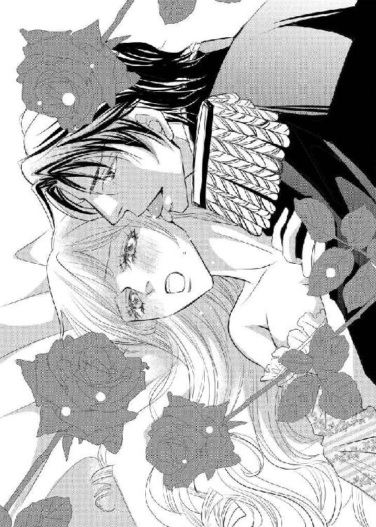
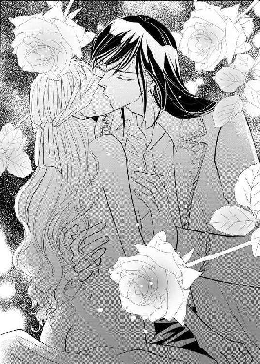

| 王と騎士と姫君のトライアングルラヴ【書下ろし・イラスト10枚入り】 (トパーズノベルス) | |
| ただふみ | |
| (2016) | |
トパーズノベルス
王と騎士と姫君のトライアングルラヴ
著作 ただふみ
Illustration 藤井サクヤ
この物語はフィクションであり、実在の人物・団体・事件とは一切関係ありません。
王と騎士と姫君のトライアングルラヴ
身体を清めるだけのはずでは、とレイナは戸惑う。
サフィルス王国の王族のみが入室を許されている大浴場。そこにいるのは無垢な肌を晒したレイナと執務着姿のスティーヴンの二人だけだ。身体を清めると告げて入ってきた彼は、レイナの右足を持ち上げて、爪先からじっくりと肌を見つめていた。
「あ、あんまり見ないでください。わたくしなら、本当に怪我はないので」
スティーヴンがその青い瞳でレイナの身体を観察しているのは、怪我をしていないかを確認するためだ。
彼の視線が脚の付け根に向けられたのに気づくと、レイナは思わず足を閉じて手のひらで隠す。いやらしい意味はないと自分に言い聞かせていても、恥ずかしいものは恥ずかしい。
「きちんと見せていただかないとわからないではありませんか」
スティーヴンに手を退かされてしまい、さらに彼の身体が足の間にねじ込まれてしまった。これではもう閉じることはできない。
「やっ......恥ずかしいから、やめて......」
彼の手がレイナの脚の付け根に差し込まれた。指先が割れ目をなぞると、思わず声が出る。やめてほしいと頼んでも、スティーヴンは行為をやめない。少しだけ沈められた指先が粘性の液体をすくっていやらしい音を立てる。甘い刺激を与えられて漏れ出しそうになる声をレイナは指を噛んで耐える。
スティーヴンが自分の名を呼ぶ声が聞こえて、官能の波に揺さぶられながらレイナは彼の名を呼んだ。互いの名を呼び合う行為が、身体を熱くさせる。
あまりの快感に恐れを覚えて逃げ出しそうになるレイナの身体をスティーヴンは腕でしっかりと支え、右手で割れ目を優しく丁寧になぞっている。ぐちゅぐちゅという水音から、蜜が指先にたっぷりと絡んでいるのが伝わってきた。
「じっくりと気持ちのよい場所を探し当てて差し上げますね」
彼の服が濡れてしまうからと言っても、やめてくれる気配はない。深い口づけにレイナの感覚は麻痺を起こし、軽く触れられているだけでも肌がざわついて快感を求める。
──わたくし......どんどん淫らになってる......？
スティーヴンと再会して何度も肌を触れ合わせているうちに、彼が気持ちよくしてくれるものだと理解したようだ。最初は羞恥心が邪魔をしたが、甘い言葉を囁かれ、優しく撫でられ、胸を舌でいじられれば、もう抵抗することなどできはしない。感じるままに甘い声を出して応じ、強ばっていた身体は力が抜けて開かれる。
割れ目をいじっていた指先が、ぐっと身体の中に押し込まれた。まだ何も受け入れたことのない蜜口から長い指が侵入してきたのだとわかると、レイナは思わず身構えた。
「心配しないでください、レイナ。痛みますか？」
スティーヴンの案じる問いに、レイナは小さく首を横に振る。彼の指の形を確認するように中が動いている。未知の感覚にレイナは全身を震わせた。
彼の指が動き出す。状態を確認するように内側をくるりとなぞられ、すっと引き抜かれる。そして次は二本に増えた指が蜜口から中に挿入される。圧迫感があって苦しかったのは挿入された瞬間だけで、指先が出し入れされていやらしい水音が響き始めると徐々に気持ちよくなってきた。
身体が熱い。吐息が甘い。自分を見失ってしまいそうな気配がある。どうなってしまうのか、レイナには想像ができない。
「そろそろラクにして差し上げねば、私の理性も飛びそうです」
スティーヴンがレイナの耳元で囁くと、中に差し込まれていた指がわずかに折り曲げられる。その指先が触れた場所は、レイナの身体をびくんと跳ねさせるほどの快感を生んだ。
「やっ、そこ、触っちゃ......ひゃあっ」
スティーヴンの左腕で拘束されて、彼の胸元にレイナの柔らかな胸元が触れる。胸の先端がジュストコールに施された刺繍の凹凸に擦られて、さらに強烈な快感を生んだ。
「たまらないのでしょう？ 蜜がどんどん溢れていますよ。ここで達することができると良いのですが」
唇が塞がれる。中に入れられたままの指は敏感なその場所を押しながら擦る。
快感に応じるようにレイナはスティーヴンの背中に腕を回し、身体を密着させた。全身で彼を感じる。どんどんと上り詰めていく気配があって、レイナは余計なことは考えず甘い痺れに全てを委ねた。
限界を迎えた身体はやがて絶頂を迎え、絶叫とも悲鳴ともつかない声をレイナは上げる。汗が吹き出し、背が仰け反った。
本当はこんなことをしている場合ではないと、レイナの冷静な部分は考えている。だが一方で、近い将来に夫となることが決まっているスティーヴンの求めにはできるだけ応じたいという気持ちもある。愛してくれる人に冷たく接することなど、レイナにはできない。
そして、スティーヴンのことを思いつつも、心は別のところにも向いていた。この気持ちが恋だと気づき、でもこれからの三人のためにも秘めていなければならないということもわかっている。
どうしてこんな面倒なことになってしまったのか。
時間は数日前に遡る──。
レイナ・ルーファスは一心不乱に駆けていた。まだ昼前だというのに薄暗い森の中を、追っ手から逃れるために。
木漏れ日を受けて紅くきらめく金髪がゆらゆらなびく。行く手を阻む木々に引っ掛かって、長い髪のあちこちに木の葉や蜘蛛の巣がからんでしまっている。長旅のために新調したドレスも、枝に引っ掛かって所々裂けてしまっていた。こんな姿では人前に出られない。しかし、レイナは自分の命を守ることを最優先にした。
──このままでは......。
息が上がってしまっている。こんなに長く走ったのは初めてだ。体力の限界も近い。どこかに身を隠してやり過ごしたいと辺りを見回しても、身体を隠せるようなものは目に入らない。
──誰か、助けて。
護衛の騎士たちは応戦するだけで精一杯らしかった。引き連れていた騎士たちの倍くらいの人間に襲われたのだ。レイナだけでもなんとか森に逃げられたのが救いだった。
風向きが変わり、レイナが逃げて来た方角から何かが燃えるような臭いが漂ってきた。火を放たれたらしいと察し、いよいよ戻れないと悟る。
「ひゃっ」
一瞬、レイナは何かに足を取られ、転倒する──とその時、何者かに抱きとめられた。
「レイナ。黙って」
甲冑に頭が押し当てられる。聞き覚えのある声に、レイナはそっと視線を相手に向けた。
随分と上背のある男だ。肩幅もあるらしく、彼が身につけている甲冑はレイナが見知っているものよりもずっと大きく感じられる。薄暗くて表面が見えにくいのだが、光り輝く宝石の意匠を組み合わせて作られた、サフィルス王家の紋章が甲冑に刻まれているように見えた。
さらに視線を上げる。漆黒の艶やかな髪は少々癖があって所々跳ね上がり、黒い瞳は追っ手が迫る方向をじっと睨んでいる。精悍な顔立ちの、男らしい美青年だ。
──ひょっとして......ディードリク？
しばらく顔を合わせていなかったからすぐにはわからなかったが、セイフォード王家の三男ディードリク・セイフォードのように見える。
──こんなところで会えるなんて。
レイナが生まれ育ったルベウス王国の宮殿から出立したのは二日前。隣国サフィルス王国の王スティーヴン・セイフォードに嫁ぐためだ。
サフィルス王国の宮殿までは五日間の旅程で、本来であれば今頃レイナたちはサフィルス王国の護衛の騎士たちと国境付近で合流する予定だった。
だが、国境をまたぐ街道で土砂崩れがあったとの報告を受けて、急遽立ち寄る予定のなかったベリロス公国の領地を進むことになる。
そして休憩場所を目指していたレイナたち一行は謎の一団に襲撃された。森を切り開いて作られた街道は人通りもなく薄暗い場所であり、待ち伏せされていたと考えるのが自然だろう。
そんな緊急事態に、彼が駆けつけてくれたのだと思うと嬉しくなった。
──きっとそうだわ。だって、わたくしのことを呼び捨てで呼ぶのはディードリクしかいないもの。
ディードリク・セイフォードはレイナより一つ年上だ。スティーヴンに会いに行くたびに、彼とも一緒に過ごしてきた。彼が騎士団に入って鍛錬を始めた三年前からは顔を見ていなかったが、こんなに背が伸びているとは想像していなかった。
「良かった、君が無事で。ルベウス王国の一団がベリロス公国に向かったと聞いて、急いで追いかけてきたのです。そろそろ部下たちも合流するころでしょう。残りを蹴散らして当初の予定の通りに進めたいと思います」
小声で説明すると、レイナを背後に隠す。
木陰から二人の男が現れた。どちらも簡素な防具を身につけている。顔まで覆う兜のせいで、表情は見えない。抜き身の長剣が木漏れ日を反射させて光った。
「君たちは何者だ？ レイナ姫と知って襲ったのか？」
ディードリクは男たちとレイナの間にしっかり入り、簡単にはレイナのもとに行かせないように気を配っていた。レイナの背後は大木であり、充分に身を隠せる。大木の裏から回ってきたとしても対応できるとディードリクは考えているのだろう。
ディードリクの問いかけに、男たちは目配せをしただけで何も告げなかった。そして、素早く長剣を構えて仕掛けてくる。
連携はないようだ。各々の攻撃を、ディードリクは腰から抜いた剣で軽くあしらう。最小限の動作で、音もなく静かに。
──綺麗......。
刀身が光ったと認識した時には、追っ手の二人は地に伏していた。
ディードリクは周囲をゆっくりと見渡すと、剣を鞘に戻す。もう一度、警戒して辺りを見たあとで、レイナに向き直った。
「行きましょう、レイナ。俺が君を案内します」
手を取られると、落ち着き始めていたはずだった鼓動が急に速くなる。現実をやっと認識できたからだろうか。
レイナが戸惑って動けないでいると、ディードリクはその場に跪いて顔を見上げてきた。頭一つ分以上も身長差があるからか、跪いていても顔の位置が高いところにある。
見つめ合うと顔の火照りを感じて、レイナは足下に目を落とした。
「あの......俺のことをお忘れですか？ サフィルス王国第三王子ディードリクです。ご無沙汰している間に背もかなり伸びてしまったので、他人に感じるのかもしれませんが......」
彼があまり感情を表に出さない人であることはレイナがよく知っている。ディードリクの瞳が困ったようにわずかに揺れたのが見えて、レイナは小さく頷いた。
「き......気づいていたに決まっているではありませんか。気が動転していて、不躾な態度になってしまったことをお詫びします」
うまく喋ることができない。自分の身に起きたことが衝撃的で、気持ちが鎮まらないのだろうとレイナは思った。
「あと......助けてくださり、ありがとうございました」
命の恩人だ。きちんとお礼を言いたかったのだが、声はくぐもってしまい、顔もちゃんと向けられなかった。礼儀作法を身につけてきたのは、こういう時のためでもあったはずなのに。
「いえ。当然のことをしたまでです」
ディードリクが答えると、遠くからディードリクの名を呼ぶ声が響いてきた。返事をすると、ディードリクは立ち上がる。
「俺の部隊の人間です。後のことは彼らに任せて、俺たちは先に行って休みましょう」
告げると、ディードリクはレイナの横に移動する。背中に手を回されたかと思うと、もう片方の腕はレイナの腰の下へと回り──横抱きにされてしまった。
「え、あのっ？」
見える景色がいつもよりも高い。狼狽えて、その高さが怖くて、ディードリクの首に思わず抱きついた。
「逃げ回ってお疲れですよね。気付かず失礼いたしました。このまま安全な場所までお運びしますので、どうかご心配なく」
そういうことではないのだと言いたかったが、声にならない。
結局レイナはディードリクに、身体を委ねたのだった。
ディードリクの部隊と合流後、後始末のために数人がその場に残った。レイナの護衛も数名はその場にとどまり手当てを受け、無事な者はレイナとともについていくことに決まる。十数名の一団は馬の脚を早めて、やがて本来向かうはずだった国境に到着した。
レイナはそこでディードリクが残していた騎士団員たちと合流し、ようやくサフィルス王国内に足を踏み入れる。ディードリクたちの警護のおかげか、予定の時間よりもいくらか早くに宿泊地にたどり着いた。
陽の傾きが大きくなっているのを、レイナはディードリクの腕の中から見る。馬車を失ってしまい、国境付近でも手に入らなかったため、こうしてディードリクの馬に乗せられているのだ。最初は胸がドキドキしていたが、もう慣れ始めていた。
「お疲れ様でした、レイナ。今夜はこちらでお休みください」
案内されたのは、騎士団一行が泊まる宿から少し離れた場所にある屋敷だった。
「え？ わたくしだけ、別なんですか？」
てっきりほかの団員たちも一緒だと思っていたのに、いつの間にか二人きりだ。護衛の心配はディードリクが近くにいるだけで不要に思えたレイナだが、意図が見えない。素直に首をかしげてディードリクに尋ねた。
レイナを馬から降ろし、ディードリクは「はい」と短く答えた。
「この屋敷は俺の親戚が管理しているものです。非常時に備えて借りておきました。行程にはないことですから、この方が安全でしょう。もちろん、俺が全力で警護します」
「ですが、それではディードリクさまがお休みになられる時間が......」
「俺は頑丈にできていますから、心配いりません。王宮までご案内するのが俺の仕事です。休むのはそのあとでいい」
「......わかりました。あなたに従います」
ディードリクに半ば押し切られる形で、レイナは承諾すると屋敷に入ったのだった。
ディードリクの母親はサフィルス王国内で王族の次に権力を握っている公爵家の出身だと聞いている。国内のあちこちに別荘を構え、各地に目を光らせているそうだ。
──ちゃんと準備されているのね......。
急な来訪のはずなのに、屋敷の中は掃除も行き届いていて、人員も確保されている。一国の姫とはいえ、たった十八歳の少女一人をもてなし、くつろがせるには充分すぎるだろう。
だが、今日は疲れすぎた。お腹は空かないし、入浴をする気にもなれなくて、レイナは用意された部屋に直行する。
これまで生活してきた部屋よりもずっと狭い部屋だ。ランタン一つで充分に周囲を照らせる。レイナは少しだけ安堵して、ベッドに腰を下ろした。廊下にはディードリクが立って警護を続けている。
「無事にたどり着けるのかしら......」
彼らを信用していないわけではないが、森の中で起きたことを思い出すと身体が小さく震えた。死ぬかもしれなかった、そう考えると恐怖が蘇る。
「ディードリクさまは信じられるけれど──」
どこに刺客が潜んでいるのかわからない。だから、国境で馬車を調達できなくて良かったと、レイナは密かに思っていた。
馬車を襲われたばかりで怖かったのもあるし、密室に一人というのも嫌である。ディードリクと馬車に乗るにしても、焼け落ちた馬車を見た後ではあまり安心できない。疲れると知っていても、ディードリクと一緒に移動できるなら馬の上が良いと考えていたのだった。
──今夜は早く寝よう。
ベッドに横たわるも、自分の衣装がボロボロのままであったことに気づいた。面倒でも今のドレスは脱いで着替えてから寝たい。
レイナは渋々起き上がると、自分で背中に手をまわしてみた。紐で編まれたそれをほどかねば脱ぐことはできない。
──難しいわ......。
ふだんは女官が着替えを手伝ってくれる。この旅では国からついてきてくれたオフィーリア・オーランドがずっと身の回りの世話をしてくれていたが、昼前の襲撃で怪我を負い、別れてしまっていた。
しばらく奮闘していたレイナだったが、諦めて部屋の扉を軽く叩いた。
「あの......ディードリクさま」
「どうされました？ レイナ」
声をかけると、扉越しではあるがすぐに返事がきた。それでふっと気が緩む。
「あの......着替えを手伝っていただきたくて」
「では、使用人を呼んできましょう」
「そうじゃなくて！」
レイナは扉を開けると、ディードリクを見つけて彼の腕を引く。
「はい？」
用件が伝わらなかったらしかった。レイナは背の高い幼馴染を見上げて、告げる。
「あなたに......手伝ってほしくって」
ディードリクとは物心がつく頃にはすでに一緒に遊んでいて、水浴びも泥遊びも幼少期には楽しんだものだ。そういう行為を、スティーヴンや第二王子のエセルバートに咎められたりしたが、歳が近いレイナとディードリク、レイナの弟であるパントレオンは頻繁にそうやって遊んで過ごしたものだった。
「あの......知らない人と同じ部屋にいるのが怖くて。ですから、あなたにお願いしたいのです」
告げると彼を掴む手が震えてしまう。
同じ部屋で一晩を明かしてほしいなどとお願いをしてはならないことくらいは心得ている。それは夫婦となる男女間でしか許されないと、学んではいたから。
しかし、着替えの手伝いなら、まだ許されるのではないだろうか。下着をちゃんとつけているので、肌が見える心配はない。現状困っているのであるし、こんなことを頼めそうなのは彼しかいないのだ。
ディードリクは困ったらしく、しばし黙っていた。やがて彼はレイナの掴む手に自分の手を添える。
──温かい......。
彼の大きな手のひらは手袋越しでも温もりを感じられた。これは安心できる手だ。
「仕方がありませんね」
レイナに向けて苦笑すると、ディードリクはレイナの部屋に足を踏み入れた。
ランタンによって浮かび上がる影は二つ。
「どうすれば良いんですか？」
「背中の紐を解いてほしいのです。それが終われば、あとは自分でどうにかできますから」
ふわふわとした長い金髪を手で簡単にまとめると、右肩に流してうなじから下を露出させる。アクセサリー類は取り除いたあとなので、首回りはすっきりしているはずだ。
「わかりました。細かい作業になるので手袋を外しますが、よろしいですか？」
「えぇ、はい」
レイナの背後に立つディードリクの気配がある。手袋はやや乱暴に外され、ベッドの上に投げ捨てられた。ディードリクの手が背後に触れる。
ビクッと身体が反応した。オフィーリアがしてくれる時にはそんなことはなかったのに。
「えっと、俺、変な触り方しました？」
珍しく狼狽した声がする。レイナは首を小さく横に振った。
「気になさらないでください。いつもと違うから驚いただけで......」
「......でしょうね」
「？」
彼の呟きの意味がすぐにわからない。だが、問い返す間もなく彼の手が伸びて紐をゆっくりと解き始めた。
──なぜかしら。脈が早くなるなんて......。
鼓動が大きい。気にしているうちにすっかり紐は取り除かれた。
「終わりましたよ」
「ありがとうございます」
わずかに振り向いて、レイナはディードリクに礼を述べる。
すると──。
「え？」
視界がぐるりと回転する。ベッドに押し倒されたのだと理解した時には、ディードリクに両手を拘束されていた。
「ディードリクさま？」
何をされようとしているのかわからない。キョトンとした声でレイナは彼の名を呼ぶ。
「レイナ。君は無用心だ」
「え？ ですが、ディードリクさまはわたくしを守ると誓ってくださった方です。無用心だなんて、どうして？」
身動きが取れない。体格差もあるのだから、当然なのかもしれない。そもそも、身体を鍛えている彼に敵う者はそうそういないらしいことを、昼前の襲撃の時に身近で見て察していた。
──なんで拘束されているのかしら？
状況がわからなくて問うと、ディードリクはいよいよ困った顔をした。
「俺は君に手をかけようなどとは思わない。しかし、俺だって男だ。そんな無防備な姿を見せられたら、さすがに襲いたくなる。君にその意思がなくても」
「手をかけると、襲うの違いがわからないのですが」
素直に問うと、ディードリクは大きなため息をつく。そしてレイナの耳元に自身の顔を寄せた。
癖のある彼の前髪が肌に当たる。くすぐったくて、少し身をよじった。
「君は夜伽の教育を受けていないのか？」
問いに、レイナは侮られたと感じて小さくふくれる。
「受けていますわ。夫婦になったら、同じベッドで夜を過ごすこと。あとはスティーヴンさまに身体を委ねていればそれで充分ですって。驚くこともあるでしょうけど、受け入れなさい、口答えは慎むように、と──」
「ずいぶん不充分な教育だな」
呆れた声が耳元でして、レイナはその態度にますます腹が立った。
「ですから、なんなんですかっ。離してください！ いくら幼馴染でスティーヴンさまの弟君だとしても、これ以上何かしたら言いつけますよ！」
怒鳴る一歩手前の声で抗議をする。足をばたつかせて脱出を試みるが、やはりどうにもできない。それどころか彼の片足がレイナの足の間に割り込んできた。スカートを足で押さえられて動きがさらに封じられる。
「言いつけるってことは、身の危険を感じてはいるのか」
囁くような声が、いつもの声と違って聞こえる。熱を帯びているかのように感じられるその声に、レイナの肌はざわついた。
「な、何をするのです？」
鼓動がますます速くなる。でも、それは恐怖からくるものではない。困惑してはいるけれど、ディードリクを拒否しているわけではない。
──このままじゃいけないってことはわかってるはずなのに、どうして？
彼の手がレイナの頭を撫で、頬を滑り、顎をなぞる。
「ディードリク......さま......？」
指先はそのままゆっくり首筋に沿って移動し、露出していた鎖骨を撫で、そっと肩に置かれた。
繊細な動きにレイナの心はとらわれる。
「んっ......」
指先の動きに気を取られていたら、耳元に息を吹きかけられた。思わず声を上げると、耳朶を唇で喰まれる。続けて優しく甘噛みされると、痺れに似た何かが身体を伝わっていく。
「あっ、んぅ」
自分が何をされているのかわからない。だからどんな反応をするのが自然なのかも見当がつかなかった。ただ感じるままに、漏れ出るままに、声を上げてしまう。その声が自分のものに感じられなくて、レイナは恥ずかしかった。
「待って......ねぇっ......んっ」
なおもディードリクは耳を責める。噛むのをやめたかと思って安心したのは一瞬で、今度はぬるりとしたものが耳の穴にねじ込まれた。柔らかくて温かくて、水気を伴うもの──その正体が彼の舌だと理解する頃にはレイナは身体をくねらせていた。
「やっ、あ......ディー......それ、やめてっ......あっ、んっ......」
逃げようとするものの、ディードリクに身体を固定されていてわずかに身じろぎできるだけだ。奇妙な感覚が、耳だけでなく全身にまで広がる。
──身体が熱い......。
実際、発汗しているらしかった。濡れた前髪が頬に貼り付き、引っ張られている。この身体の反応はなんだろう。

「ずいぶんと気持ちよさそうに振る舞うんだな。俺には嫌がっているように見えないが？」
口調がすっかり昔のものに戻っていた。対等のように振舞っていたのはまだ互いの身長に差がなかった頃なのだが、レイナはそんなに昔のことには感じていなかった。懐かしいような、でも今は不適であるような印象を覚える。
「やめて......なんかおかしいの......はぁ......息も、上がっちゃってるし......」
身体が疲れすぎていて熱を出したのだろうか。風邪で高熱を出した時と症状が似ているような気がする。
「全く、可愛いな、レイナは」
ディードリクは上体をゆっくりと起こすと、やっと顔を合わせてくれた。しかし、レイナからは表情が影になってしまってよく見えない。ただ、闇よりも濃い黒の瞳がじっと自分を見下ろしていることは肌で感じた。
「独占欲の強い兄様のことだ。さぞかし喜ぶことだろうな、君がこんなに初心で感じやすいと」
彼の台詞の意味がよくわからない。じっと彼の顔を見つめながら、レイナは息を整えるために意識して呼吸する。
「これ以上のことを君にしたら、兄様に首を刎ねられてしまうかな......」
ディードリクの裸の指先がレイナの唇を優しく撫でる。それだけで身体がぞくっと反応した。
「警告するだけのつもりだったのに、君があんまりにも俺を異性扱いしないから悔しくなってしまった」
レイナの赤い色を秘めた金髪をすくって口付けを落とす。愛おしいものに触れるような、とても慎重な仕草だ。
──綺麗......。
戦闘中にも彼の動きを綺麗だと感じた。どうやら彼の動きは騎士団に入ってからいっそう洗練されたようだ。不要な物音をさせず、必要最低限の動作で、見る者を魅了する。
唇が髪から離れると、彼の瞳に物憂げな色が滲んだ。
「──君はスティーヴン国王陛下の妻になる人だ。だから、他の男に肌を触れさせることはあってはならないことなんだ、レイナ。それは、たとえ付き合いの長い俺であっても例外じゃない」
「う......うん......」
わかっているつもりだった。なのに、許してしまった。非があるとすれば、部屋に呼んでしまった自分だろうとレイナは反省した。
「理解してくれたならそれでいい」
息を長く吐き出すと、ディードリクはやっとレイナの拘束を解いて身体を移動させた。
「──君が連れていた女官......オフィーリア嬢でしたか。彼女、怪我の程度も軽かったように見えましたし、明日の夜には合流できるはずです。身体が動くようならすぐに合流するように言ってありますので」
「そう......」
乱れた着衣を整えつつ、レイナは頷く。
彼の口調が急によそよそしいものに戻って、改めて距離を感じた。一緒に遊んだあの頃とは、もう関係が異なっているのだと言い聞かされているようで悲しかった。そして寂しい。
──確かにわたくしはスティーヴンさまに嫁ぐ身の上。軽率な行動には申し訳ないことをしたと思うけれど......でも、こんなのは......。
きっと昔と全く同じようにとはいかない。それくらいは理解できる。でも、こんなふうに線を引かれてしまうとつらい。
レイナの気持ちをよそに、ディードリクは申し送りを続ける。
「明日は俺が手配した使用人を寄越しますから。オフィーリア嬢が到着すれば、彼女と交代で。構いませんよね？」
「はい......」
ベッドに座る形になったところで俯き、おとなしく承知する。今は守られている身でもある。わがままを言って迷惑をかけるのは嫌だった。
「レイナ」
声が思った以上に近い位置から聞こえる。レイナは驚いて顔を上げる。ディードリクの顔がすぐそばに迫っていた。
「慣れない場所で落ち着いて休めないかもしれないが、少しでも回復することを祈っているよ。必ず、命に代えてでも君を陛下のもとに連れて行く。だから、心配しないで」
不穏なことを言わないで──そう告げる前に、彼はレイナの前髪をそっと持ち上げて額に口付けをした。幼い頃の、よい夢を見るためのおまじない。
「おやすみ、レイナ。俺は廊下にいるから、何かあったらすぐに呼んでください」
彼の背中に名残惜しさを感じたのは、なぜなのだろうとレイナは思った。
おやすみと返せないままディードリクを見送ると、レイナは着替えを済ませてベッドに潜り込んだのだった。
嫁入りの旅は思わぬ展開をみせた。
翌朝、食事を済ませて騎士団員たちと合流すると、そこで初めて事態を告げられた。いわく、夕食に毒が混ぜられたらしく動ける者がいないのだと。死者は出ていないものの、旅を続けるのは難しいと説明を受けた。
森での襲撃で動ける者たちとの合流をディードリクは考えたようだが、最終的にはディードリクがレイナを馬に乗せ、二人で先行することに決まった。毒を盛った犯人が昨夜一緒にこの街に入った騎士たちの中にいたらしいこと、その犯人が逃走中であることから、このまま街に残るのは危険だと判断したらしかった。
思いがけず、ディードリクとの二人旅が決まってしまい、レイナの心はいけないと思いつつも華やいだ。
正装であると目立つため、レイナたちは旅人を装うことにした。使用人たちの意見を反映し、夫婦で遠出をしているかのような服装を選ぶ。偽装するためとはいえ、ディードリクとの夫婦役をするのはレイナにとって少し嬉しいことだった。ディードリクは、不本意そうな顔でいたのだけれども。
支度が終われば、昨日と同じように馬に二人で乗り、いくらか飛ばす。この速度であれば、次の宿泊地には昼過ぎには着くことになりそうだ。
「──レイナ。他の騎士には次の宿泊地で待つと伝えましたが、このまま王宮に向かいます」
「え？」
休憩をするために入った街で、ディードリクはレイナにだけ聞こえるように囁いた。
「待ち伏せされている可能性が捨てきれません。もし遭遇したら、俺一人で対処するのはおそらく難しい。ここからは王宮へ向かう道がもう一つあります。そちらを使うと休憩を取れるような町はないのですが、時間を短縮することが可能です。もし、体調が優れないようでしたら予定通りに進みますが、いかがしましょうか？」
提案されて、レイナは静かに頷く。
ディードリクを信用するなら、この意見に従うべきだ。どこでいつ襲撃されるかはわからない。ならば、安全だと少しでも思える方を選択すべきである。
──それに、大きな宿場町を通らないのであれば、巻き添えを減らせるかもしれないし......。
昨夜過ごした町での食中毒事件は、宿泊客や従業員までも巻き込んでしまっていた。無関係のサフィルス王国の民を傷つけてしまうのは、これから王家の一員となる身としては心苦しい。スティーヴンも心を痛めるはずだ。
「わかりました。わたくしの体調なら問題ありませんわ。王宮まで案内してください」
「承知いたしました」
重々しく頷き返し、そしてわずかに笑んだ。
「レイナ、もし気分が悪くなったら知らせてくださいね。これまでよりも飛ばします。乗馬は慣れないと思いますが、しばらくの辛抱ですから」
「ありがとう。......ディーが一緒にいてくれるから、わたくしは安心してお任せできます」
少し照れくさいものがあるけれど、正体を知られないために幼少期の愛称を使う。
思いが伝わったのか、ディードリクの頬が少し赤く染まったように見えた。
「そう......ですか」
いつもなら小声でももっとはっきり言うのに。なんとなくそれがレイナには可愛いと思えた。
──わたくしの知っているディードリクさまだ。来てくれたのが、ディードリクさまで良かった。
この旅が無事に終わりますように──心の中で願いながら、ディードリクと店に入った。
街並みが赤く染まる。真っ白であるはずのサフィルス王国の宮殿も、例外ではなかった。
「綺麗......この時間はこんなにも赤いのですね」
王宮が見えてきたあたりで馬の速度を落とし、街を移動していた。夕食どきだからか、街は本日最後の活気で賑わいを見せている。
「えぇ。特にこの季節は太陽の位置の都合で燃え上がるように美しい赤い色に染まるのです。お見せできて良かった」
「まぁ。これをわざわざ見せるために急いだのですか？」
「そういうわけではないのですが。どうせなら見せて差し上げたいな、と」
なんとか無事に宮殿に辿り着けそうだ。ディードリクが安堵しているのが声からわかる。
「ふふ」
ちょっとした気遣いがレイナには嬉しかった。一緒にいるのがディードリクで良かったと心から思う。
やがて宮殿の敷地に差し掛かる。ディードリクは門の前で兵士に事情を説明し、中に通してもらう。何度も訪れたことのあるサフィルス宮殿は、変わらずにレイナを招き入れてくれた。
予定よりも早い到着に使用人たちを慌てさせたようではあったが、準備はほとんどできていたらしくレイナはディードリクと別れて部屋に案内される。結婚式を挙げる日まで使う私室で、その部屋はスティーヴンに会うために滞在したときに使用してきた部屋と同じ場所だった。
スティーヴンに会う前に身支度を整えることにする。使用人たちは前回お世話になっていた時に身の回りの面倒を見てくれていた侍女たちだけで構成されていた。
ほぼ身ひとつで王宮入りしてしまったため、着替えも装飾品も持っていない。嫁入り道具などと一緒に着替えも持参していたのだが、先の襲撃で残さざるをえなかった。そのため、レイナは渋々ドレスを借りる。髪を整え、きらびやかな宝石を身につけて着飾る。
──スティーヴンさまの好みですものね。
彼に気に入られるために様々な努力をしてきた。この真紅の華やかなドレスも、手の込んだ装飾品も、スティーヴンが派手なものを好む傾向があることから選んでいる。レイナの本来の好みに合わせればもっと控えめな落ち着いた印象のものを身につけるところであるが、それよりもスティーヴンに合わせるように意識を向ける癖が自然とついていた。そうするようにと周りから言われ続け、そうせねばと自分に言い聞かせ続けてきたからだ。
光の加減で赤くきらめく特殊な髪と赤銅色の瞳を持って生まれた瞬間からサフィルス王国の第一王子との結婚が決められ、物心がついた頃にはこの人の妻になるのだという目でスティーヴンの事を見ていた。どちらかの命が消えでもしない限り、結婚するという決定は覆らない。
でも、それが当然だと思っていたレイナは、嫌だとは一度も思ったことはなかった。周囲の人間が望んでいる。なにより、愛する自分の両親がそうであれと願っているのだから、素直に従って間違いはない。
それに、スティーヴンは優秀な男だ。昨年父王が急死し、スティーヴンが王位を継いだが、それによる政治の混乱はなかったと聞いている。周辺諸国との関係も堅調だ。軌道に乗り、喪が明けるのを見計らって、レイナとの結婚式が執り行われることになった──と、少なくともレイナは考えていたが。
──まずは旅の報告をして、それから近況をお尋ねしましょう。きっと説明してくださるはず......。
ディードリクを寄越したのはおそらくスティーヴンだ。現場の判断はディードリクだろうが、それができる人間を護衛に向かわせたわけだから、何か事情があるに違いない。
急ごしらえではあったが、身支度を整え終えると、レイナはスティーヴンに挨拶をするために部屋を出た。
広間に案内されると、食事の準備ができていた。長いテーブルに真っ白なクロスが掛けられ、花や燭台が載せられている。晩餐会に同席するのはレイナを含めて三名のみらしい。並ぶ食器は三組だけだった。
──スティーヴンさまはお忙しいのかしら。
前回訪れたのは先代の王の葬儀の時だった。あれから一年近く経ってしまっている。公務で忙しく会うことができそうにないと、年に二回はある交流会の一回を中止にしたほどであったが、今も変わらずに仕事に励んでいるのだろうか。
席に案内されてしばらく待つと、部屋の扉がゆっくりと開かれた。レイナは静かに立ち上がり、訪問者を待つ。
先に入ってきたのはディードリクだった。落ち着いた色合いのジュストコール、それに対して少し派手な装飾が凝られたベストを合わせている。首元にはクラヴァットを飾り結び、ベストの下は絹で仕立てられたシャツ。ジュストコールに調和するキュロットを穿いている。実の兄とはいえ、王である人と食事をするとあって、場に相応しい格好を選んだようだ。騎士の姿が似合っていると思ったが、こういう王子らしい格好も絵になるなとレイナは感じる。
ディードリクだけかと思っていたが、背の高い彼の後ろに隠れてしまっていたらしい。そのすぐ後にもう一人部屋に入ってくる。ディードリクの衣装よりも派手な色合いであり、使われている生地も上等なものだろう。明るめの色のジュストコール、技巧を凝らしたベスト、絹のシャツ、キュロット、そしてクラヴァットを身に付けた青年は、優雅な足取りで近付いてきた。
レイナはその人物を見て、ハッと息を呑む。
艶やかな長い黒髪を後ろに流しており、白くくすみのない肌をいっそう美しく際立たせていた。優しげに弓の形を作る整った細い眉。澄んだ青空のように美しい瞳。鼻筋が通り、その下の唇は薄めで穏やかな笑みを浮かべている。
知らぬ者は女性と見間違うだろう美青年は、レイナより八つ歳上の婚約者であり現サフィルス王国国王、スティーヴン・セイフォードだ。
──少しお痩せになったかしら？
顔色は良いが、前に会ったときと比べて少々頬がこけてしまっている気がする。それゆえに妖しい美しさが増しているようにも感じられ、レイナはどう声を掛けたものかと躊躇した。
「ようこそ、レイナ姫。お久し振りですね。急ぎの旅でお疲れでしょう。今夜は簡単な食事のみとしてお休みいただけるように手配いたしました。ご気分はいかがですか？」
挨拶の言葉に迷っているうちにスティーヴンから声を掛けられてしまった。声はいつも通りに穏やかで、元気そうである。
レイナはすぐに挨拶を返す。
「お久し振りです、スティーヴン陛下。お気遣いありがとうございます。慣れない旅で疲れてはおりますが、心配されるようなことはございませんわ」
努めて笑顔を作り、心配をかけないように注意する。できるだけ彼の負担にならないようにしようと普段から気にかけてきたが、今日は一番気を遣った。
「安心いたしました。どうぞお座りください」
心から安堵しているのが伝わる微笑みを見せ、スティーヴンは椅子を勧める。レイナは素直にそれに従い、着席した。
ディードリクが椅子を引き、スティーヴンも着席。その後でレイナの正面の席にディードリクが静かに着席した。
スティーヴンが食事の開始を知らせると、中にいた使用人たちはみな廊下に出て行った。広い室内には三人を残すだけとなった。
「人払いができたところで、本題に入りましょうか」
あたりが静まると同時に、スティーヴンが重い口調で切り出した。
「本題......ですか？」
おそらく命を狙われていることに関した話なのだろう。レイナはスティーヴンに顔を向けて問う。
「えぇ......。貴女がこれほど危険な目に遭うことになるとは想像しておりませんでした。念のためにディードリクを向かわせましたが、まさかこんなことになるなんて。まずは警備の不備を詫びたい」
頭を下げるスティーヴンに、レイナは慌てて首を横に振った。
「いえ。わたくしなら元気ですから。詫びることなんてありませんわ」
やはりディードリクを護衛に向かわせたのはスティーヴンだったのだとわかり、レイナは感心する。一方で、念のためにそんなことをしなければならない事態があったことを示しているのに気付き、すぐに言葉を続ける。
「ですが......こちらで何が起きているのでしょうか？」
そのものずばりの問いはいささか不躾であるかとも思えたが、いちいち婉曲的に訊くのも手間であったのでレイナは率直に訊ねた。
説明を始めたのはスティーヴンだった。
「実は、王宮内で不穏な動きがあるのです。奇妙な手紙が届けられたり、部屋や廊下を荒らされたり、庭の銅像が傷付けられたり......とささいなことが頻発しておりまして。怪我人も数名出ているため、警戒を強めているところなのです」
「手紙にはレイナ姫との婚約解消を求めるものもあり、もしものことを考えて俺が向かうことになったのですが──まさか命を狙われるような事態になるとは想像していませんでした」
スティーヴンの説明にディードリクが補足する。事態を重くみていることが窺えた。
「心配をかけるわけにはいかないと、黙っていたのが悪い方に向かってしまった。本当に申し訳ない」
何度も詫びるスティーヴンに、レイナは笑顔で自分が元気であることを強調した。
「いえ、気になさらないでください。無事だったのですから」
そこで、ここに同席していてもいい人物が顔を見せていないことに気付く。スティーヴンと面影が似ている緑色の瞳を持つ人物──第二王子エセルバートの姿がない。
レイナが誰かを探しているのに気付いたのだろう。ディードリクが声をかけた。
「どうかしました？」
「......エセルバートさまの姿を見ていないなと思いまして。公務で外出中ですか？」
第二王子エセルバートに対し、レイナは少々苦手意識を持っている。スティーヴンに似た美しい外見とは裏腹に、笑えない冗談を言うエセルバートという男がレイナには不気味に感じられたのだ。どことなく冷たい微笑みを浮かべ、何を考えているのかよくわからない人物──レイナにはそう映っていた。
レイナの問いに、スティーヴンが応じた。
「エセルバートは王宮内で起きた事件の対応中です。仕事に追われているからと欠席を伝えられました。レイナ姫の暗殺事件や食中毒事件についての調査も始まりましたので、人員をさいて調整しているところなのでしょう」
「そういうことですか。わたくしはてっきり事件の全てをスティーヴンさまが対応なさっているのではないかと考えていたので......」
素直に答えると、スティーヴンは小さく笑う。
「私は通常公務に集中するようにと、エセルバートが気を利かせてくれたのです。それに、頭脳労働は彼に向いている。任せていても問題はないでしょう」
「そう......ですね......」
エセルバートが頭の切れる男であることはなんとなくわかる。現在、スティーヴンの右腕として、二十三歳の若さながら宰相の座についている。スティーヴンが国王になってからもうまく政治や経済が回っているのは、エセルバートの功績もあるのだろう。
そこで扉がノックされた。食事が運ばれてきたようだ。
「重い話はここまでにして、食事を楽しみましょうか」
サフィルス王国で起きている事件についての話はスティーヴンのこの台詞で切り上げられ、三人での晩餐が始まったのだった。
晩餐会は終始穏やかだった。互いの近況報告を差し障りのない範囲で話し、今後の予定についても簡単に打ち合わせた。使用人たちを信用していないわけではないが、念のための対応である。レイナ自身も食事中に事件の話はしたくなかったので、彼らに合わせた。
食事を終えると、スティーヴンとディードリクに付き添われて部屋に戻ってきた。
「困ったことがあれば何なりと相談してくださいね」
「俺も力になりますから、遠慮なくおっしゃってください」
「ありがとうございます。スティーヴン陛下、ディードリクさま。そのときには必ずお伝えしますね」
社交辞令のように告げると、彼らが少し寂しそうな表情を浮かべた気がした。
レイナは二人に一礼する。
「本日はこれで失礼いたします」
「しっかり休んでくださいね、レイナ姫」
「おやすみ、レイナ」
挨拶を交わすと、レイナは部屋に入ったのだった。
居室に付属する浴場で身体を清めると、レイナはベッドに横たわった。使用人たちは部屋を出ており、一人きりの時間がどんどんと過ぎていく。
──眠れない......。
見知らぬ部屋というわけではないのに、目を閉じてもなかなか寝付けなかった。身体は疲れていて重く、早く眠りたいのに頭が冴えてしまっているのだ。
──これではまたスティーヴンさまに心配をかけてしまう......。
スティーヴンの迷惑になるようなことは避けたかった。彼を支える立場になるためにも、しっかりと自分のことは自分でどうにかしたい。
──寝不足の顔を見せるわけにはいかないのに......。
周囲は静まりかえっている。そのせいで、風が窓を揺らす音一つでも身体をビクリと震わせてしまう。
──昨夜はディードリクさまがおまじないをしてくれたから眠れたのね。
ディードリクにされたことを思い出すと、恥ずかしさで身体が熱を帯びた。撫でられて、耳を舐められただけなのに、あんなふうに乱れてしまうなんて──あれがどんな意図を持った行為だったのか、レイナにはわからない。
──これ以上のことをしたら、スティーヴンさまに首を刎ねられるなんておっしゃっていたように聞こえたけれど、そんな残酷なことをなさる方とは思えないのだけれど......。
穏やかで優しい人物という印象をスティーヴンには持っている。いつでも笑顔を振りまき、周囲をあたたかくしてくれる人。この人ならきっと住みやすい素敵な王国を作っていけるだろう──レイナは彼をそう評価し、だからこそ彼のそばで支えることを運命付けられて感謝していた。この人はきっと祖国を悪いようにはしない、そう信じられたから。
眠れずに何度目かわからない寝返りをうったとき、扉が優しくノックされた。最初は風の悪戯かと考えたが、もう一度ノックする音が聞こえて上体を起こす。
「......はい？」
レイナは返事をすると、警戒しながら扉に近づく。近づき過ぎると襲われたときに対処ができないだろうと、少し離れた位置に立って様子を窺う。
「私です。スティーヴンです」
誰かが声真似をしているとは思えなかった。優しい声音はスティーヴン本人に違いない。
──でも、どうして？
彼のことを思い出していたからだろうか。レイナは少しだけ嬉しい気持ちで返事をする。
「今、開けますね」
そっと扉を開けると、彼の黒くて長い髪がまず目に入った。次に意識したのは暖かそうなナイトガウン。胸元には余裕があって、下に寝間着を着ているのがチラリと見える。視線をゆっくり上げると、優しく微笑むスティーヴンの顔があった。
「起こしてしまったでしょうか？」
レイナは首を小さく横に振って否定した。
「いえ......寝付けなくて」
「少しお話でもしませんか？ お茶を用意したのです」
よく見れば、彼の手にはティーセットが載せられたトレイがある。お湯はすでに入れられているらしく、芳しい香りが漂ってきていた。
「それはありがたいです。あの......少々お待ちください」
急に自分がしどけないネグリジェ姿であることに気がついた。昨夜無用心だとディードリクに言われたのを思い出し、レイナは扉を閉めて慌ててショールを羽織った。
改めて扉を開けると、スティーヴンを部屋に通す。
──こんな時間ですけど、スティーヴンさまは旦那さまになる方ですし、別に構わないわよね？
心細さと貞操を天秤にかけて、結果心細さの方が勝った。相手がスティーヴンであれば、ディードリクが心配するようなことはないはずだ。スティーヴンはまもなく夜をともにする相手。特別に警戒する必要もない。
テーブルに案内すると、スティーヴンはティーセットをそこに置いて自らお茶を淹れ始めた。彼は普段からこうして自分でお茶を用意しては飲んでいる。見慣れた光景なのだが、国王となった人物が自分で行う姿には違和感を覚えた。
「あの......わたくし、自分で──」
「気になさらないでください。好きでやっていることですし、押しかけたのは私です。そのままお待ちください」
そう言われてしまうと、レイナは椅子に腰を下ろして待つよりほかはなくなってしまう。仕方なく、スティーヴンの茶を淹れる様子をただ観察した。
──少しやつれている気がする......。
場所を変えて見てみても、顔に疲れが出ているように感じられた。
「陛下はお休みにならなくてよろしいのですか？」
二人だけの今なら訊いてもいいような気がして、レイナは素直に訊ねる。
スティーヴンはカップにたっぷりと注いだ紅茶を、レイナに差し出して微笑んだ。
「貴女のことがつい気になってしまって。私は、休むときにはきちんと休んでいますから、心配は無用です」
彼の手はティーカップをテーブルに置いたあとも戻らず、すっとレイナの頬に伸びてきた。あまりにも自然な動作で、うっとりとしている間に頬を撫でられる。
「それから、この状況で陛下だなんて寂しいことを言わないでほしい。貴女の夫となる私を、そんな他人行儀に呼ぶのはやめてください」
「そ、そんなつもりで呼んだわけでは──」
彼の青い瞳が冷たく光ったのが見えて、レイナは言葉を詰まらせる。
「レイナ。貴女は私のものです。そして、私も貴女の所有物となります。永遠を誓うということはそういうこと。身も心も一つに。──ですから、せめて私をスティーヴンとお呼びください」
「そ、それはできかねます！ あなたさまと結婚すれば、わたくしは妃という立場になりますが......それでも、陛下は陛下なのですから──」
顎を持ち上げられて、親指で唇をなぞられる。男性にしては細くしなやかな指先は執拗に唇を撫でる。
「んっ......」
爪の先で唇がこじ開けられて、内側を優しく撫でられる。その仕草に背筋がぞくりとした。
「レイナ。今、私は一人の男として貴女の前にいます。公の場での立場など、忘れなさい」
告げる声は厳しい。瞳を覗き込まれる。いつもなら青く澄んで見える彼の瞳に、影が差しているように感じられた。それはこの部屋がランタンの明かりのみで昼間よりもいくらか薄暗いせいだろうか。
レイナはスティーヴンが自分の知っている彼ではないような気がした。目の前にいる彼なら、裏切りに対して首を刎ねるような制裁を選ぶかもしれない。
唇から指が離れないので喋ることができず、レイナはわずかに顎を引く。
「──よろしい」
それを見たスティーヴンは満足げに唇の端を持ち上げると、レイナの唇から指を離した。そして、レイナが安堵する間もなく唇が重なる。
「んっ」
目を閉じるものだと聞かされてきたのに、そんな余裕はないままに口づけをされた。心臓が強く鼓動する。
目をしばたたかせることしかできず、彼を突き放すことも選べなければ、反対に彼を支えることも選べない。
どのくらい触れていたのか、長かったのか短かったのかわからないままに彼の温かな唇は離れていく。
「そんな困ったような顔をしないでください。口づけなど、恋人同士でもするものでしょう？」
寂しそうに微笑まれてしまうと、どう対応したらいいのかわからない。ただ戸惑って、何が正解なのか瞬時にはわからなかった。
「──嫌だったのですか？」
レイナがなにも告げなかったからだろう。スティーヴンは表面上は悲しげに、しかし瞳には別の感情を浮かべてレイナを見つめた。
「い、いえ、そんな......。いきなりで、びっくりしてしまって......その......わたくしったら失礼な態度を......」
謝る言葉が真っ先に出てきた。彼を怒らせてしまいそうになっていることをまず詫びる。スティーヴンの期待しているような言動ができなかったことを、レイナはひたすら悔やんだ。ずっと彼を見て、彼に好んでもらえるように努力してきたはずだったのに、今は彼が何を求めているのか全くわからない。
「そういうことなら良いのです。仕方がないのでしょう。不慣れなのは悪いことじゃない」
愉快げに微笑んで、彼はレイナに用意したはずのカップに口をつける。飲み込むのだろうとばかり思って目を向けていたが、喉が動く気配はない。不思議そうに見つめていると、スティーヴンの手がレイナの後頭部を支えた。もう片方の手はレイナの顎に添えられる。
──なに？
彼が何をしようとしているのかわからない。拒むべきなのか、そのまま従うべきなのか──迷ううちに再び唇が触れた。顎に添えられた手が動き、唇が強引に開けられる。
「んぅっ」
何が起きているのか理解できないまま、口の中に入ってきた熱い液体を受け取る。ただの紅茶ではないらしい。舌をピリッと痺れさせるものが混じっていて、喉を流れて体内に入っていく。量が多くて飲み干せず、唇の端から漏れ落ちるのが感じられた。
「口移し......初めてにしては悪くないですね」
唇の端を流れるお茶を、スティーヴンは舌で丁寧に舐め取る。その刺激で、レイナの身体はびくりと反応した。
「な......なんのつもりですか......？」
驚いたり困ったりしている姿を見てからかっているわけではないようだ。
だが、これが何を意味するのか、どうしてスティーヴンが興奮気味な声で語りかけてくるのかが想像できない。
「婚儀を終えるまでは──と思っておりましたが、身体を慣らしておくことも必要でしょう？ 今夜はお疲れのことでしょうから、身体をほぐすだけにしますね」
当然のことのように告げられたが、説明になっているとは思えない。どんな返事をするのが正解なのかわからず、レイナはスティーヴンをただ見つめた。顔がとても近く、その整った顔に見つめられるだけでも心臓が騒ぐというのに、ますます心がざわついた。
「おや。まだ状況をご理解いただけないのですか？」
「は、はい......不勉強で申し訳ないのですけれど......」
ここは素直に認めて、彼に教えを請うのがよいと判断する。頷いて小声で伝えると、レイナはスティーヴンの返事を待った。
すると、彼は小さく声を出して笑った。そしてレイナの身体を優しく抱き締める。
「良いのですよ。謝ることなどありません。しかし、なるほど。何も仕込まずにこちらに送り込んでくるとは......私の趣味を理解しているからなのか、違うのか」
スティーヴンの独り言らしき台詞の意味がレイナには理解できない。彼はなにをしようとしているのだろう。
──身体をほぐす、とおっしゃっていたけど......。
レイナが考えていると、彼の手が背中を撫でてきた。この時季には少々薄すぎるネグリジェの生地からは、彼の手のひらの体温がじんわりと伝わる。
するりとショールが肩から落ちた。デコルテが露わになって、胸の谷間もわずかに覗く。
背骨に沿って指が走ると、レイナはあまりのくすぐったさで背中をわずかに反らせた。そうしている間にも、指先が生み出す刺激はしっかりと身体に刻まれる。
「あ、あの......スティーヴンさま......」
背中を反らせれば、意図せずに胸を差し出すような形になってしまう。すかさずスティーヴンの顔がふっくらとしたレイナの胸元に埋められた。
「やっ......」
「......良い香りですね。甘くて、とろけてしまいそうな」
スティーヴンが頭を動かすとネグリジェに包まれていたはずの胸元が大きく開いてしまう。そこに熱い息を吹きかけられると、心臓がさらに高鳴った。この距離では、速い鼓動を知られてしまいそうだ。
「お、お待ちください......その......わたくし......」
膝をつき胸元に顔を寄せるスティーヴンに、レイナは制止をしてくれるよう呼びかける。このままではきっと失礼を働いてしまうことだろう。それを回避しようと、レイナは必死だった。
「どうかそのままで。身体は私が支えておりますから、心配はいりませんよ」
「あっ......んんっ......」
露出した鎖骨を中心から外に向かって舐められた。ざわつく肌は熱を帯びる。
「可愛い声ですね。こうしたら、どんな声を聴かせてくれるのですか？」
首筋に唇が寄せられ、下から耳の後ろへと舐められる。
「あ、やっ」
ビクリと身体が反応した。そして、昨夜のディードリクの行為が身体に蘇る。
「あぁ......いけません、スティーヴンさまっ......それ以上は......」
自分の反応がよくわからない。けれど、このまま彼に委ねていたら、昨夜のような不可思議な刺激に飲まれてしまう予感がある。レイナは今すぐこの状況を脱しなければと思った。
「気にしてはいけませんよ、レイナ。気持ちが良いのでしょう？ その感覚をありのままに甘受すればいいのです」
スティーヴンに諭されても、受け入れてはいけないと心の中の何者かが叫んでいるのを止められない。
「今は......お願い......」
首筋に吐息がかかるだけでも身体が小さく震える。ちょっとした刺激にさえも敏感になっているのだ。
「......怖いのですか？」
問われて、しかしそれが怖いからなのかはわからなかった。それでも、他にしっくりくる言葉が浮かばず、レイナは顎をゆっくりと引く。この行為をやめてもらえるなら、それで良いと感じたのだ。
「初めてですから、仕方がないですね......」
残念そうにスティーヴンはつぶやくと、レイナの身体を椅子から持ち上げた。
「え、あの......」
「ベッドまでお運びします」
いつもの調子のような声にレイナは安堵する。おとなしく彼に身を任せると、ベッドにそっと降ろされた。
──これで眠れるかしら......。
鼓動は早いままだが、紅茶を飲んだおかげか身体は温まっている。スティーヴンが来る前よりは眠気が来ている気がした。
「今日はここまでにしましょう。明日はこの続きから。貴女が安心できるようになるまで、時間をじっくりかけるつもりでいます。気になることがあれば遠慮せずにおっしゃってくださいね」
告げるスティーヴンの声は穏やかで優しくて。さっきまでの行為が何であったのか、その全てが夢であったのではないかとさえ感じられる。
「はい。スティーヴンさまのおかげで眠れそうです」
「それは良かった」
やんわりと微笑むと、彼はレイナのいるベッドに入ってきた。予期せぬ事態に驚きを隠せないでいると、スティーヴンはレイナに覆い被さるようにして額に口付ける。
「今日からは貴女と一緒に眠ります。貴女をお守りするためと、夜伽の勉強のために。よろしいですね？」
拒否権がもとよりないことはレイナにはわかっている。承知しろと迫られれば、頷く以外の答えなどない。
「はい......そういうことでしたら」
答えると、スティーヴンは微笑んだ。とても妖艶で、つい心を奪われてしまう。
──わたくしは、この人の妻に......。
ナイトガウンを脱いで寝間着姿になるスティーヴンを見て、レイナは乱れたネグリジェをそっと直す。毛布の中に身体をうずめながら、彼と同じベッドの中で横になることが、どこか現実離れしているように感じられた。
──もし、わたくしが《真紅の乙女》の証を持っていなかったら、彼は別の人を伴侶に選んだのかしら......。
瞼を閉じたスティーヴンの美しい横顔を見て、レイナはふと疑問を持った。今まではそんなことを思ったこともなかったのに。釈然としない思いを抱えながらレイナは目をそっと閉じた。
翌朝はスティーヴン同伴で朝食をいただき、貴族に向けた懇親会までは部屋でゆっくり休むようにと伝えられた。どこかに出かけるのであれば、ディードリクをお供につけるように言われたため、彼を巻き込みたくなかったレイナは自室でおとなしく過ごすことに決める。
──休めと言われても、することがないものね......。
襲撃を受けた時に負った傷はいずれもかすり傷程度のもので、もうほとんど癒えている。身体に残っていた倦怠感も、おおよそ抜けていた。
長時間の乗馬は全身への負荷を与えるものではあったが、入浴時に念入りに全身を解していたのが良かったらしい。ディードリクの言葉に従ったのだが、効果はてきめんであったようだ。
──荷物が届けば、その整理にあてられるのに。
ふと、一緒に王宮入りするはずだった女官のオフィーリアを思う。明るく朗らかで、レイナのことを王女としてではなく対等に接してくれる貴重な友人──それがオフィーリア・オーランドという女性だ。旅が順調であれば今日には合流できるはず。彼女が話し相手になってくれればこの寂しさも幾らか解消されるだろう。
友人のことを思っていたからだろう。昼食で同席したディードリクから、残りの部隊がどうしているのかについての報告を受けた。
「──襲撃を受けた部隊でこちらに来ることになっている者たちは、今のところ順調に向かっているとの連絡をもらいました。重傷な者はルベウス王国に帰し、代わりに我が国の騎士たちが荷物等を引き受けて運んでいるとの報告を受けております。オフィーリア嬢も一緒で、日が暮れる前には到着できるでしょう」
嬉しい報告に、レイナの気持ちは一気に華やいだ。少なくともみんなは無事なのだ。それだけでもとても嬉しい。
表情に出てしまっていたのだろう。真面目すぎてあまり表情を変えないディードリクが、ふっと小さく微笑んだ。
「安心されたようでなによりです。報告すべきか悩んだのですが、そんなに嬉しそうにされると俺も嬉しいです」
「だって......本当に嬉しくて。怪我をされた方には早くの回復を祈ることくらいしかできませんけれど、他の方が順調にこちらに向かっていると聞いて安心いたしました」
答えて、レイナはあることに気付く。自然と心が暗くなり、そっと俯く。
「レイナ？ どうされました？」
「いえ......狙われているのはわたくしなのだと、再認識してしまいまして」
生命を狙われたのは事実であるが、ひょっとしたら嫁入り道具の何かが目的で、それを知られないために皆殺しを選択したという可能性もあった。それを確認するためもあって、荷物とレイナ自身を切り離して運んだのだ。
「そう......ですね。王宮内が安全と言い切れないのが心苦しいところではありますが、俺がそばにいる間は必ず命に代えてもお守りします。安心してください」
──この言葉は任務だから告げているの？ それとも本心なの？
彼の心はいつでも表情からは読み取れない。
「はい。ディードリクさまを信じていますから」
こういう時に素直な言葉を口にせず、社交辞令を返すようになったのはいつの頃からだろう。微笑み、相手を傷付けないような言葉をひたすら選び、口にする。そうしてレイナ姫を作り上げてきたのだ。周りが望むように。周りが求めるように。
これまで自分というものをレイナは意識してこなかった。だから、期待されるままに演じることに何の疑問を感じなかった。それ以外の選択肢は自分の中になかったのだから。
相手を困らせてはいけない。
それがレイナの中で優先される規律。《真紅の乙女》として生を受けてきた義務だ。レイナはそう教育され、今まで生きてきた。スティーヴンと結婚したあとも、それは変わらずついてまわるのだ。
いにしえから伝わる《真紅の乙女》は特殊な力を持つとされ、怒りを買ってはならないと信じられている。そして《真紅の乙女》が幸福であれば国を繁栄させ、彼女が不幸であれば国を衰退させてしまうという。その姿は美しくきらめく赤い髪と炎のような赤い瞳を持つ女性であり、国が大きく変わろうとする頃に王家の血を引く者から現れた。
レイナは伝承よりは色が淡いながらも、数十年ぶりに現れた《真紅の乙女》として崇められ、様々な面で優遇されてきた。自分が大事にされている理由が《真紅の乙女》の伝承にあると知ったレイナは、望むように与えられることに対しては驕らず謙虚に生きることにし、優遇されている分だけ周囲の期待に応えようと努めてきたのだった。
ディードリクの態度がルベウス王国内での周囲の人たちの態度に似ている気がして、心の距離を感じる。手が届く距離にディードリクはいるのに、心はとても遠いのだ。それが寂しくて、悲しくて、でも声に出すまいとレイナは密かに誓った。
ディードリクが伝えてきたように、レイナの嫁入り道具などは陽が暮れる前に到着した。そこから忙しなく、今夜開かれる懇親会の準備に取り掛かる。何かが起こったということを貴族たちに知られないよう、当初の予定通りに公務が行われることになったのだ。
王宮内で起きている事件や事故について、内部の人間の全てが把握しているわけではないらしい。上層部のみに共有され、起きていることは王宮を出入りする人間には秘密にされているとのことだった。
確かに内部で起きている不祥事を外部に漏らすのは色々と厄介な面がある。しかし知らされていなかったからこそ、レイナは命を狙われて大変な思いをしたとも言えた。一概に良い判断とは言えず、レイナの心は曇る。
そんなとき、髪を整えてくれていたオフィーリアが背中をポンと叩いた。
「なぁに辛気臭い顔をしているんですか！ サフィルス王国の重鎮がたとの大切な懇親会でしょう？ ルベウス王国の代表として、サフィルス王国の妃として振る舞う大事な場。いつも通りに振る舞わないと妙な噂が立ちますよ」
レイナは喝を入れられて、背筋をしゃんと伸ばす。こういうときには明るく快活な彼女の言葉はよく効く。
「そうね」
努めて笑顔を作ると、鏡に映る自分の顔は周りが期待するレイナ姫の顔になった。物静かそうで、優しく穏やかなお姫さま。
鏡にはオフィーリアの姿も映っている。左手首から肘にかけて包帯が巻かれているのが痛々しい。幸いあの戦闘で傷を負うことはなかったのだが、馬車につけられた火を消す作業をしていて火傷を負ってしまったらしい。大した怪我ではなく痛みもひいているとのことだが、レイナは胸が痛む。
「またあたしの包帯に目を向けていたでしょう？ 心配しなくていいんですよ。ちょっとドジを踏んでしまって火傷しただけですし、傷は残るかもということでしたが、腕なら問題ないです。顔じゃなくて良かった良かった」
とことん明るく振る舞うオフィーリア。レイナはそれもかえって心配だった。
十三の頃から女官としてレイナのそばで仕えているが、オフィーリアはルベウス王国では伯爵令嬢である。年齢はレイナより一つ年上。他の女官たちが、一国の姫というだけでなく、国に古くから伝わる《真紅の乙女》でもあるレイナに対しよそよそしく、あるいは怯えながら接してくるのに対し、彼女だけは近い年頃の友人として接してくれた。そして、サフィルス王国への嫁入りの際についていくと答えたのは彼女だけだった。
──なぜ、わたくしが狙われるのかしら。
「ほらほら。また暗い顔になっていますよ！ 笑顔笑顔。あたしはあなたの笑顔を見続けるためにもご一緒したのです。命があるうちは、精一杯お世話しますからね」
命があるうちは。
その言葉が心にしみる。自分のために一生をかけようと思ってくれる人がいる。そのことを決して忘れてはならない。
「オフィーリア。あなたが来てくれて本当に良かった」
彼女の屈託のない笑顔にどれだけ励まされてきたのだろう。今なら心配ないと言い聞かせ、レイナは懇親会に臨んだ。
日暮れとともに、王侯貴族たちにレイナが到着したことを知らせる懇親会が開催された。結婚式の当日は他国の賓客を招いて忙しくなるため、今日の懇親会は国内向けのお披露目というわけだ。
「本日はわたくしのためにお集まりいただきありがとうございます。ささやかですが、お食事とお酒をご用意しましたので、御歓談をお楽しみください。後ほど、個々に挨拶を差し上げます。どうかご了承を」
大広間にやってきたレイナは会場に集まった人々の前で挨拶をする。拍手が湧きおこる中、壇上をゆっくりとおりた。
今のレイナはルベウス王国から持参したドレスや装飾品で着飾っていた。地下資源や鉱石などをたくさん産出するルベウス王国を誇示するために作られた工芸品の数々だ。
まとう真紅のドレスにはたくさんの宝石があしらわれている。釣鐘型のスカートの裾にまで刺繍とともにきらめく石が取り付けられ、揺れるたびにきらきらと光を反射させる。胸元はもとより、はめている手袋にさえも様々な色の宝石が並ぶ。ティアラやイアリング、ネックレスはルベウス王国自慢の赤い宝石を中心に配置され、華やかさを添える。それらはレイナの白い肌、光の加減で赤くきらめく金髪にはとても似合っていた。
レイナは正装をしたスティーヴンにエスコートされながらたくさんの賓客たちと顔を合わせた。中にはルベウス王国内で会ったことがある人物もいるし、最近になって家督を継いだという新しい顔も幾らかあった。サフィルス王国に遊びに来ている間に知り合った人とは簡単な近況を報告し合い、レイナは和やかな時間を過ごす。
だが、常に自分が狙われているということは意識せざるを得なかった。警備は厳重で大広間の端には王立騎士が等間隔に並んで見張っている。外も同様だ。
また、レイナにはスティーヴンが常に付き添っている上に、すぐに駆けつけられる距離でディードリクが周囲に目を光らせている。エセルバートも会場全体が見渡せる場所から、不審な動きをしている者がいないかに注意を払っているところだろう。
──外部の人間が多数出入りしている都合で狙いやすいとはいえ......さすがに今日は何事も起きない......と信じたいわ。
これまでの事件ではレイナのそばにいた人たちにも被害が出ている。この場所にサフィルス王国で重要な職務に就いている人物が多数存在していることを思うと、何事も起きないのが望ましい。
それに、この賓客の中に事件を企てている人物がいるとは考えたくなかった。
ここに招かれた人たちは、今後スティーヴンが国を動かしていくときに支えとなってくれるであろう人たちだ。その中に裏切り者がいると疑いの目を向けるような事態になってほしくはない。レイナは笑顔で挨拶をしながら、無事に懇親会が終わりますようにと願い続けた。
宮廷音楽家たちの奏でる曲に合わせてダンスが始まった。遠慮する者たちは壁際に去り、踊る者たちは大広間の中央に集まってくる。
「一曲お相手していただけますか、レイナ」
スティーヴンの申し出に、レイナは目をしばたたかせる。
「え、ですが、今日は......」
悠長にダンスをしている場合だろうかと躊躇するレイナの手をスティーヴンは半ば強引に引く。周りの視線が自然と集まり、人も少しずつ離れていった。
「貴女のお披露目の会なのですから、全く踊らないのは奇妙に映ります。それに、貴女のお父様が用意したそのドレスをもっと皆に見ていただきたいとは思いませんか？」
言われて、レイナははっとした。
これは政治だ。ルベウス王国の王女がサフィルス王国の国王にふさわしい存在なのかを周りに示す必要がある。
周囲を気にしての小声での問いに、レイナは努めて柔らかい笑みを作る。スティーヴンの気遣いに心から感謝した。
「そうですね。お願いいたしますわ」
向かい合うと、曲に合わせて手を取る。
スティーヴンとはよくダンスの相手を務めさせられていた。将来を誓い合う仲である以上、必ず一曲は踊らねばならない。しかしそれを嫌だと思ったことは一度もない。
──この方とは本当に気持ちよく踊れるわ。
ルベウス王国内の舞踏会で賓客のダンス相手になることはたびたびあったが、そのときに思い出されるのはきまって遠く離れた場所で暮らす婚約者スティーヴンだった。
彼が周囲を意識し注意を払いつつもダンスの相手をしっかりと見ていることがわかる足さばきは、とても自然に身体を動かすことができる。身を任せていても安心できるので、いくらでも踊っていられるような気持ちになれた。
「今、いい笑顔が出ましたね」
スティーヴンに微笑まれて、レイナはくすぐったい気持ちになった。
「心地が良かったものですから、つい。あの......スティーヴンさまと踊るのは好きなんです」
自分が命を狙われている身だということを一瞬でも忘れてしまうくらい、とても心が安らいだ。そのせいだろうか。ダンスに誘ってくれたことに感謝していたら、うっかり本音がこぼれてしまった。
「それは良かった。私も貴女と踊るのは好きですよ。思わず時を忘れてしまいそうなほどに」
とても嬉しそうに告げられて、その台詞が社交辞令などではなく本心なのだろうとレイナは感じた。
もしも互いの時間が許すなら、いつまでも踊っていたい。
暗い気持ちになることが続いていたからこそ、余計にそう願った。
しかし、曲は終わりを迎えてしまった。
名残惜しくてレイナが離れられずにいると、会場の空気が一変した。
どこからともなく悲鳴が上がる。和やかだった大広間に大きくざわめきが広がっていた。
つつがなく終えるはずだった、サフィルス王国の貴族たちを交えた懇親会。紛れ込んでいた暗殺者の登場で一気に緊張が走った。
「ちっ......しくじったか......」
給仕の格好をした青年は、突き刺すように向けた短剣をディードリクの長剣で弾かれて悔しそうに舌を打つ。
ディードリクの背後には、スティーヴンの腕の中で事態が把握できずに困惑するレイナの姿があった。
ダンスが終わった直後、一人の給仕が不自然にレイナに近寄ってきたのだ。異変を察知したディードリクが素早く間に割って入り、さらに状況に気付いたスティーヴンが身を挺して守ったのだ。
「どこの手の者だ？」
名乗れとばかりに強い口調でディードリクが言い放つと、給仕は口の端を上げた。そして口から泡を吹いてその場に崩れた。
「なっ」
ディードリクが給仕に走り寄る。赤い泡が口から流れ落ち、柔らかな絨毯を汚した。目を見開き痙攣する。毒を飲んだときの反応だ。
「レイナはこちらへ」
スティーヴンは見てはならないとばかりに、素早くレイナの目に手のひらをかざすと、現場から離れるように誘導する。
泡を吹く給仕の周りには警備をしていた騎士たちが集まっていく。レイナとスティーヴンのところにも一人の騎士がやってきて、周囲を警戒しながら大広間の外へと案内してくれる。
会場にいたエセルバートの凛とした声が、どよめく大広間に響いていた。
「今日の懇親会はこれにてお開きにします！ 王立騎士が誘導するのでむやみに動かないように！」と、的確な指示を飛ばしている。
そんな声を後に聞きながら、レイナはスティーヴンとともに素早く大広間を退室したのだった。
レイナは私室にスティーヴンとともに戻ってきた。部屋で待機していたオフィーリアにスティーヴンがお茶の用意を頼み、二人きりの時間を作る。
「お怪我はありませんでしたか？」
椅子に腰を下ろしたレイナの前に跪くと、スティーヴンは心配そうな表情で見上げて訊いた。
「えぇ......おかげさまで」
かすり傷ひとつ負うことがなかったのはスティーヴンとディードリクのおかげだ。見たところスティーヴンにも怪我はなさそうであるが、今のレイナには彼に身体の加減を問えるほどの気力はなかった。
──犯人は自害した。目の前で。
自ら命を断たねばならないことなのだろうか。それは彼自身がそれが最善だと判断して行ったことなのだろうか。それとも、何者かの指示によって自害せねばならなくなったのか。
彼が何者であったのかはわからない。今頃ディードリクが手がかりを探していることだろう。エセルバートも調査に乗り出すに違いない。
──どうしてこんなことに......。
スティーヴンの手のひらがレイナの頬に触れた。いつの間に手袋を外したのだろう。彼の細く長い指の感触、大きな手のひらの温もりに心が安らぐ。
「顔色が優れないですね。私がもっと早く退室を促していれば──」
「いえ。まさかあのようなことになるとは、きっと誰もが予測できなかったはずです。わたくしも油断しておりました。スティーヴンさまがご無事でなによりです」
声に力が出ない。必ずしもあの暗殺者が絶命したと決まったわけではないが、あのような凄惨な現場を目撃してしまったことは衝撃的だった。
「私のことなど、このようなときにはどうでも良いのです。貴女は自分だけに目を向けて構わないのですよ、レイナ」
スティーヴンの整った美貌が近づいてくる。逃れられないまま、口づけを交わした。
「周りに気を使うところは貴女の長所ではありますが、その全てを引き受けて傷つく必要はないのです。貴女のその優しさを見ていると、私は胸が痛みます」
壊れ物を扱うように、そっと抱き寄せられる。そして再び口づけられた。
「んっ......」
今度はすぐには離れていかない。角度を変え、唇が強く押しつけられる。
──スティーヴンさま......？
激しさが増していく行為に、レイナは戸惑うものの拒むことができない。
「私が、忘れさせて差し上げます」
囁きを聞き取れぬままに、レイナは彼に唇をこじ開けられて舌を差し込まれる。
「んんっ」
受け入れることが正しいことなのかよくわからないまま、歯列をなぞる刺激に反応して口を開ける。すぐさま奥へと侵入してきたスティーヴンの長い舌は、レイナのそれを掴むようにしっかりと撫でた。
「あっ......」
喉をふさがれたようになって息苦しい。レイナがもがくと、スティーヴンは一度離れた。
「口づけの時は鼻で呼吸するのですよ。そうすれば苦しくありません」
「......これも......はぁ、口づけなのですか？」
口づけとは唇を触れ合わせるだけだと思っていたので、すぐには理解できなかった。息苦しくて、頭が回らないせいもあるのかもしれなかった。
スティーヴンの青い瞳の中で仄暗い炎が生まれ、揺れたように見える。
「えぇ、そうですよ。夫婦であれば、こういう口づけもするようになるのです。慣れれば、気持ちよくなりますよ」
言いながら、彼は幼子をあやすように頭を優しく撫でてくれた。
──わたくしにはこちらの方が心地良いのだけど......。
そういうものだと言われてしまうと、自分の正直な気持ちは言い出せない。彼に心も身体も任せ、すべて従うと決めてここに来た以上、本当の想いなど捨てなくてはと考えてしまう。
──わたくしは《真紅の乙女》として、彼に、そしてこの国と祖国に幸福をもたらすためにいる存在。そのためにも、自分を殺さなければ。
今までうまくやってきたのに、嫁入りの旅が始まってからやたらと心が騒ぐ。レイナ姫から妃に変わることで、その役割も変化する。意識に気持ちがついていけていないだけだろうか。
「レイナはまだ子どもなのですね」
撫でられる心地良さに目を細めてしまったからだろう。スティーヴンに苦笑されてしまった。
「あ、あの......その......お気に召さなかったのでしたら、申し訳ありません......」
「良いのです。少しずつ大人になれば良いのですから」
穏やかな笑顔で答えると、スティーヴンはレイナから装飾品を外していく。
「え、あの、このくらい自分で外せますから──」
レイナが驚いて断ろうとスティーヴンは妖艶な笑みを浮かべながら言った。
「私にやらせてください」
ティアラ、イアリング、ネックレス──外し終えたそれらはテーブルの上にきちんと並べられる。その後、スティーヴンは椅子に座ったままのレイナの背後に回った。
「スティーヴンさま？ あ、あの、まさか......」
立ち上がろうとするが、肩に手を置かれて動けない。背中にスティーヴンの手が当たる。腰まで伸びる髪が避けられ、編み上げの紐に手をかけられたのがわかった。
「もちろん、脱がしているのですよ」
「あ、あのっ、それは、困りますっ」
振り向いてその手を止めようとするも、やはりあっさりと制止させられる。
「や、やめてください」
「夫婦になれば肌を重ねるのですよ。昨夜の続きをしましょう」
「わたくしはそんな気分では──あ、んっ」
背中から回された手が胸に触れた。ドレスの胸元がはだけ、直接触られている。スティーヴンの大きな手のひらは、レイナの胸の形を確認するかのごとく円を描くように撫でる。
「あ、スティーヴンさま、どうして」
逃げたいのに身体が動かない。スティーヴンに両の手のひらでレイナの豊かな胸が包まれ、やわやわと揉まれた。彼の手のひらは大きいが、それでも胸の肉は余っているようだ。それがなんだか妙に気恥ずかしい。
「与えられる刺激を素直に受け入れなさい、レイナ。まだ貴女は子どもの部分が多くを占めているのでしょうが、身体は充分に大人なのです。それを意識させて差し上げましょう」
耳元で囁かれる。彼がどんな表情でいるのか、どんな体勢なのかを想像する余裕もなく、胸を揉みしだかれる刺激にレイナの頭はクラクラしてくる。
──スティーヴンさまに触れられている......。
近い将来本当に夫婦となるのだから、触れられることくらい誰も咎めたりしないだろう。ただ少し早いだけ。
──だけども。
息が上がる。彼の息遣いにも熱を帯びて感じる。耳元に当たる呼気はとても熱い。
「柔らかでなめらかで、とても良い肌です。この目で見るのが楽しみだ」
刺激が変わる。胸の先端をつまみ出されるようにされて、痛みが走った。
「や、やめて......痛っ......」
「では、変えましょうか」
スティーヴンの手が離れていく。これで終わりかと息を吐くと、彼の手のひらが首に触れ、そして肩の線に合わせるように動く。するりとドレスが脱げて、上半身が露わになった。
「ひゃっ」
自分の身に何が起きたのかさっぱり理解できなかった。かろうじて胸元を隠した時にはスティーヴンが正面に回ってきていて、狼狽えているレイナの身体を持ち上げた。
「ま、待って、スティーヴンさま。おろして。もうやめてください！」
夜伽では口答えをするなと言われていたが、我慢できない。なんの説明もないままに強引にされると、そのこと自体が気になってしまって反応どころではなくなってしまう。とにかく今は、一度落ち着きたかった。
「やめませんよ。まだ気持ちよくなっていないでしょう？」
「そんなこと、どうでもいいですっ」
想像したとおり、行き先はベッドの上だった。乱暴に降ろされると、ドレスを引き剥がされる。抵抗も虚しく、下着もすぐに取り払われた。
生まれたままの姿となったレイナは、スティーヴンの前でできる限り身体を見せまいと手で隠す。しかしすぐに彼の手に捕まって、頭上にまとめられた。
彼の熱を帯びた視線が肌をなぞるのがわかる。スティーヴンを見ているのがつらくなり、レイナはランタンの作る影に目を向けた。
「襲撃を受けたと聞いて、怪我をされたのではと心配していたのですが......ほとんど無傷で良かった」
顔を背けていたからだろう。ガラ空きとなった首にスティーヴンは唇を落とす。そしてチュッときつく吸いついた。
「んんっ」
チクっと痛む。思わずレイナは顔をしかめた。
──早く終わってほしい......。
撫でられるだけであれば、まだ心地よかった。しかしそれ以外の刺激は苦しかったり痛かったりして、とても受け入れられるようなものではない。とにかく早く解放されたいとレイナは願う。
「......昨夜は反応が良かったのに、今日はうまくいきませんね」
残念そうな声に、スティーヴンが諦めてくれることを密かに期待する。
「終わりにして......いただけませんか？」
おそるおそる提案すると、彼の手はこともあろうに脚の付け根に伸びてきた。
「え、あの、待って......っ」
きつく閉じたはずの内腿は役に立たず、スティーヴンの長い指先は誰にも触れさせたことのない柔らかな茂みをなぞり、溝に到達した。渇いたそこは強く擦るようにされると痛みを発する。
「や、痛い......っ」
スティーヴンの行動がわからない。なぜそんな場所に触れるのだろう。
「昨夜なら、濡れていてもおかしくなかったのでしょうけど。......媚薬が必要ですかね」
困った様子でつぶやかれて、指が去っていく。
──濡れる？ どういうこと？
痛みが落ち着いて、これでいよいよ解放されるだろうと思ったところで、ドアを叩く音がした。
ノックの音に対し、レイナは返事ができない。スティーヴンも何も言わなかった。
もう一度、今度は先ほどよりも強めに叩かれる。そして声が続いた。
「陛下。いつ頃お戻りになられますか？」
声はディードリクだ。スティーヴンを呼びに来たらしい。大広間での調査がひと段落ついたのだろう。
「ディー......」
こんなのはつらい。ディードリクの声を聞いて、思わず彼に助けを求めたくなった。廊下には届かない、か細い声で彼の名をつぶやいてしまう。そして、スティーヴンに聞かれていませんようにと祈る。
来訪者の登場でスティーヴンが離れてくれることを期待したのに、そうはならなかった。逃すまいとばかりにレイナの手首を拘束するスティーヴンの手に力が入る。痛みを与えられて彼を一瞥すると、青い瞳に宿る炎が揺らめいた気がした。
──なに？
嫌な予感がする。
「ディードリク、入ってきなさい」
スティーヴンの返事に、レイナの身体は強張った。
──今、なんて？
聞き間違いかと思ったが、ディードリクがドアの音を立てないようにして、部屋に入ってくるのがわかる。
「レイナは眠ったのですか？」
ティーセットがテーブルに置かれる小さな音がする。声も控えめで、ディードリクは奥に置かれたベッドでレイナが眠っていると考えているのだろうことが伝わってくる。彼からはスティーヴンの背中は見えても、レイナのあられもない姿は見えていないらしい。
「いえ。まだ起きていますよ」
「なら、出直しますね。廊下でオフィーリア嬢が気まずそうにしていましたよ。まったく......陛下がレイナを可愛がりたくなる気持ちはわかりますが、仕事を言い付けたのならそれまでは我慢してください」
やれやれといった口調で苦言を呈すると、ディードリクはベッドには近寄らずに部屋を出ようとする。この台詞から考えるに、スティーヴンとレイナが夜伽を始めたのだと理解しているらしいことも窺える。
──オフィーリアにも悪いことをしちゃったわ......。
そんなに時間が経っているとは思わなかった。この様子だとオフィーリアはティーセットをディードリクに託し、自室に戻って控えているのだろう。
レイナがオフィーリアのことを考えていると、スティーヴンが意外な台詞を言い放った。
「ディードリク、出直す必要はありません。こちらに来なさい」
「......はい？」
スティーヴンの意図が理解できなかったのだろう。ディードリクは立ち止まり、不思議そうに聞き返す。
レイナも目を見開いた。こんな姿をディードリクにさらすなんてできない。
「スティーヴンさま、なにをおっしゃって......んっ！」
ディードリクをこちらに来させまいと声を発すると、スティーヴンに唇で塞がれた。わざとらしくチュッと音が出るように何度もしつこく口づけをして、ようやく離れた。息苦しさに、レイナは声が出せない。
「さぁ、ディードリク。こちらに来なさい」
「ですが、陛下──」
「私の命令が聞こえないのですか？」
苛立ちがスティーヴンの声に混じっている。いつも彼の声は穏やかで安心感があるのに、今の彼の声は腹の底に響くようで恐ろしかった。
「......承知しました」
気が乗らないことはディードリクの足音からもよくわかる。そしてベッドの様子が見えないギリギリの位置で一度立ち止まった。彼なりの配慮のつもりなのだろう。
「ベッドの横に立ちなさい」
それでは満足できなかったらしい。厳しい声でスティーヴンはさらに促す。
ディードリクは特に反論せず、それでも渋々といった様子でベッドに近づいてきた。
「あの、陛下。これ以上は──」
困惑しているのがよくわかる。スティーヴンの目的がわからなくて、対応に迷っているのだろう。
レイナとしても同様だ。この状況を抜け出そうとずっともがいているが、どうにもならない。彼のどこにこんな力があるのだろう。男女の体格差はあっても、スティーヴンは一見すれば華奢な体格だ。明らかに鍛えているとわかるディードリクが相手ならまだしも、押さえつけるだけの力があるようにはレイナには感じられなかった。
スティーヴンがレイナを冷たく見下ろす。
「構いませんよ。綺麗なレイナを見てやるのです。そして口づけをしてやってください。レイナが気持ちよくなれるように。そうですね......必要であれば身体に触れてもいいですよ」
「は？ 陛下。ご自分がなにをおっしゃっているのかわかっていないのでしょう。あなたもお疲れだということはよくわかりました。お二人ともしっかり休んでください。失礼します」
からかわれたと考えたのかもしれない。ディードリクが足早に立ち去ろうとすると、スティーヴンが追いかけた。ディードリクの腕を掴み、引き止める。
「私は正気ですよ。命令に従えないのですか？」
ぞっとする声に、レイナは毛布を引き上げる手を止めた。
──どうして、スティーヴンさまはこんなことを......。わたくしのせいなの？ わたくしが拒んだから......。
怒らせた原因がレイナ自身にあるとしても、ディードリクを巻き込むのはひどい。
「正気とは思えない」
「では、命令に背く、と？」
挑発的に問われて、ディードリクはぐっと堪えた。やがて口を開く。
「......陛下。俺だって男です。無防備な女性を前に、口づけをしたり触れたりすれば理性が効かなくなることもあります。何を試しているのです？ 冗談ならやめていただきたい」
きっぱりと告げるディードリクの言葉には誠意を感じる。真面目な彼らしい回答だ。
その言葉に、スティーヴンはふっと小さく笑う。
「相手がレイナだから、たがが外れそうだと考えているのでしょう？ 彼女はとても魅力的ですからね」
「そういう意味ではなくて──」
「彼女が拒むなら、やめさせますよ。それこそ力尽くで。ですが、そうでない場合は......彼女が達するまでは付き合ってもらいましょうか」
「............」
「これは命令ですよ」
念を押すようにスティーヴンは告げると、今度はベッドの隅で縮こまっていたレイナに目を向けた。冷たい美貌が向けられると、思わず息を飲む。
「レイナ。貴女にも命じます。ディードリクに愛されなさい。口づけだけでもしていただきます。そして、それ以上を拒むというなら、はっきりとわかるように。二人とも演技で済ませようなどとは思わないでくださいね」
本気らしい。
ディードリクの目とレイナの目が合う。互いにゴクリと唾を飲み込むと、ディードリクはいつもよりもさらに無表情な顔でゆっくりとベッドに近付いてきた。
──どうしよう......。
口づけだけでやめてもらえるだろうか。ディードリクなら、たぶん引き返してくれる。きっとうまくやりすごしてくれるだろう。
逃げ場がなく、追い詰められたレイナはベッドに入ってきたディードリクを見つめる。相手を信用していることを示すために。
「......レイナ、すまない」
申し訳ない気持ちがディードリクの表情に出てきた。レイナは小さく首を横に振る。
「あなたが気にやむことはありません。......優しくしてくださいね」
「もちろん」
頬に触れる手には手袋がはめられたままだ。それが彼のけじめを思わせる。
ディードリクの顔が近付いてくるのがわかって、レイナはそっと目を閉じた。優しく触れる。少しカサついていて、そして温かい。
「ディードリクさま......」
こんな状況じゃなければ、もっと嬉しかっただろう。スティーヴンとした口づけよりも、ずっと幸せな気持ちになれた。思いやりを感じる行為はとても心地よいものなのだ。胸の奥がきゅんと痛む。
「レイナ、そういう顔をしてはいけません。君は俺を拒まなくてはいけないのですから」
「──ずいぶんと気持ちよさそうな顔をするのですね」
スティーヴンの嫉妬を感じる声が室内に響いた。見られていることを思い出し、レイナはディードリクから身体を離す。
──ディードリクさまのおっしゃる通りだわ。ここでわたくしがはっきりと言わないと。
スティーヴンを睨むと、レイナは唇を動かす。
「もうよろしいでしょう？ スティーヴンさま、わたくしはあなたの言うことをなんでも聞きます。ですから、ディードリクさまを解放して差し上げてください」
毅然とした態度で告げる。いつもであればもっとやんわりと、それこそ愛らしい姫らしく告げるところだが、レイナはこんなひどい命令をするスティーヴンを許すことができない。
スティーヴンは冷たく微笑んで、訴えるレイナたちを見やった。
「そうはいかなくなりました」
ディードリクに視線が向けられる。見つめられたものが凍りついてしまいそうなほどに冷え冷えとした青い瞳が、ディードリクの黒い瞳を捉えていた。
「──ディードリク、レイナに深い口づけを。舌を絡めて、糸が引くさまを私に見せなさい」
「な......どうして」
抗議の意思を感じさせる声でディードリクが告げる。
「レイナが拒んでいないからですよ。ですから、もっと激しく愛してやれと言っているのです」
スティーヴンの言葉にディードリクが絶句していると、スティーヴンはレイナがかぶっていた毛布を無理やり引き剥がした。
「やっ」
あらわになった裸体を、レイナは自身の長い金髪と四肢で隠す。だが、全てを隠すことはできない。
「ほら、貴方だってレイナを抱きたいと思っているのでしょう？ 遠慮することはないと、私が許可を出しているのです」
「そんな。レイナの意思を無視している。いくら命令でも、聞くことはできません！」
レイナの姿を視界に入れないように顔を背け、ディードリクは返す。
「そうでしょうか」
スティーヴンは確信があるらしい。ディードリクの返事をつまらなそうに受け取ると、ゆっくりとレイナに近付いてくる。
──従うと言ってしまった以上、拒むわけには......。
逃げたくても逃げられず、レイナはおとなしくスティーヴンに捕まる。彼の手が足首を掴むと、力任せに左右に開かれた。
「な、スティーヴンさま、何を」
秘められた場所がランタンの光にさらされている。その状況だけで、レイナの白い肌を羞恥で赤く染めさせた。
「......やはりな」
スティーヴンの美しい青い瞳がどこを見つめているのかがわかると、恥ずかしさのあまり足を閉じたくなる。だが、彼によって固定された足はほとんど動かすことができない。
「潤ってきていますね」
「......それは、陛下が彼女を愛撫したからでしょう？」
ディードリクの台詞には、わずかに動揺の気配がした。彼はレイナとスティーヴンの姿を見ないように顔をさらに背けている。
「いえ。私では彼女を濡らすことができなかったのですよ」
言いながら、スティーヴンはその長い指先でレイナの秘められた溝をなぞる。
──え、どうして......？
さっき触れられたときとは反応が違った。痛みはなく、スティーヴンの右の指先にぬるりとしたものが絡むのがわかる。水音もそこからしていて、自分の身体に何が起きたのかレイナには理解できない。
「そう言って、俺をはめるつもりですか？」
立ち上がったディードリクをスティーヴンはその手を引いて止める。そしてレイナで濡らした指先をディードリクに見せた。
「貴方がレイナを濡らしたのです。違うというのなら、淫らな口づけをして彼女がどういう反応をするのか見せなさい」
「............ちっ」
反論の言葉が浮かばず、断る台詞も浮かばなかったのだろう。悔しげに舌打ちをすると、ディードリクはレイナに向き直った。
「レイナ。許せ」
スティーヴンが離れてやっと足を閉じたところで、今度はディードリクに口づけをされた。両肩に手を置かれ、拒めるだけの余裕をもたせている。逃げ道を残しながら、彼は優しくついばむような口づけを繰り返した。
「んっ......」
逃げてくれと伝えてくるような口づけだと思った。だから、彼の言う通りに逃げなくてはとレイナは思う。
なのに、身体は言うことをきいてくれなかった。火照りだした身体は、彼にもっと触れてほしいとねだっているような気がする。手袋で隔たれた温もりが寂しい。
「レイナ......」
息継ぎのように唇が離れた時に囁かれる名前は、とても甘美なものに感じられる。
──スティーヴンさまの前なのに......拒めない......。
唇を舐められて、薄く開いた隙間に舌を差し込まれる。味わうように何度も歯列をなぞり、そしてさらに奥へとディードリクの厚みのある舌は侵入してきた。
「んんっ......」
鼻で呼吸するように──そうスティーヴンに言われたことを実行すると、確かに息苦しさは緩和された。それだけでなく、とても淫らな気分になってくる。
熱を持った舌はレイナのものと優しく絡み合う。口腔内のその刺激がなぜか胸の先端をジンとさせた。
──いけない......このままでは意識が......。
正気を保っていられそうにない。レイナはディードリクの身体を離そうと自由な手を彼の胸元にあてる。しかし押し返すことはできず、一方でディードリクにベッドへと押さえつけられてしまった。
「んあっ......」
新鮮な空気を求めて唇が離れるたびに息を吸うと、どうしても鼻にかかるような声が漏れてしまう。それがとてもいやらしいものに感じられたが、止めることができない。
「ディー......」
彼はまだ正気なのだろうか。名を呼ぶと、ディードリクは耳元に唇を寄せて囁いた。
「俺ならここにいる」
そういう答えを待っていたわけではなかったのに、なぜか気持ちが安らいだ。不要な力が抜けて、レイナはベッドに身体を投げ出す。
「──陛下。確認しますが、多少なら触れても良いのでしたよね？」
「えぇ。レイナが望むなら」
スティーヴンの返事に、ディードリクは決心したような目をしてレイナを見つめた。
「ちゃんと気持ちよくしてあげられるかわからないが......心配はするな」
ディードリクの言葉なら信用できる。レイナはわずかに顎を引き、頷いて示した。
「......ったく、そんな顔するなよ」
困ったように笑うと、ディードリクはレイナの唇を自身の唇で塞ぐ。そして、手袋を嵌めたままの手でレイナの柔らかな胸を掴んだ。力を入れすぎないように揉み、先端を指の間でしごくように動かす。
「んんっ」
今まで感じたことのない刺激が胸を伝わった。痺れたようなその感覚は、先端に触れられることで発せられているようだ。
──おかしくなりそう......。
気持ちが良いのかどうかわからない。ただ、ジンとした痺れは胸だけでなく全身にじわじわと広がっていき、刺激から離れているはずのへその下辺りを疼かせた。
息が上がっている。身体が熱いからか、汗もうっすらとかき始めていた。
──なんなのだろう、これは......。
ディードリクは説明してはくれない。ただ、同じ刺激を繰り返し与えてくれるだけ。彼なりのけじめのつもりでそうしているのか、はたまたこういう行為は説明しないものなのか、今のレイナには知りようがなかった。
「ディー......」
スティーヴンに見られていることを忘れかけた時、太腿を温かい何かが這ってレイナの身体はびくりと跳ねた。
「やぁんっ」
足に与えられる刺激はなおも続く。先ほどの左足ではなく、右足の方も膝の裏あたりから付け根に向かってぬめっとしたものがゆっくりと這っていく。
「あぁっ......」
ディードリクの口づけが中断され、彼は耳元を舐め始めた。耳と胸を刺激するのはディードリクだ。その与えられる情報だけでも頭がいっぱいであるのに、足からその付け根に与えられる熱でさらに混乱してくる。その熱の正体は、スティーヴンの舌だ。
いつの間にかスティーヴンはシャツをはだけた姿になっており、ディードリクに夢中になっているレイナの足を無理なく、それでいて大胆に開かせていた。そこに頭を差し入れて彼女の太腿を味わい、そして濡れ始めた溝に舌を這わせている。
「や、やっ......そんな、はぁ......そんなこと、されたら......ああっ、やめっ......」
うまく言葉にならない。呼吸が乱れ、甘い息が漏れ、その隙には台詞など入れられなかった。
くすぐったさが、別のものに変わっていく。聞こえる水音がディードリクが耳を舐めしゃぶるものなのか、それともスティーヴンが秘部を舐めて蜜を吸うことによるものなのか、あるいはその両方なのか区別がつかない。
「待って......おねがっ......あっ......やっ、あっ......」
二人とも何も答えてくれない。それどころか刺激はいっそう激しくなる。
レイナの身体が一番反応する場所をスティーヴンが探り当てたらしく、そこを執拗に責め始めた。小さな突起のようなそこは、舐め転がされるとじんじんとした強い波を立てる。
「や、あっ......それ......はぁ、おかしく......あぁんっ」
スティーヴンが与えてくる刺激はレイナが強い波を感じるたびに中断され、少し落ち着いた頃に再開される。それの繰り返しを受けて、徐々に快感の波が高くなるのを覚え、その感覚を少しでも逃がそうとレイナは敷布を強く握る。
「あっ......あぁっ......んぅっ......」
ディードリクも刺激を与えるのをやめなかった。耳の穴に舌を差し込み、丁寧になぞる。それによって生じるゾクゾクとする感覚と、淫靡な水音が冷静な思考を邪魔する。揉み込まれた胸の先端はすっかり硬くなり、彼にいじられるのを喜んでいるかのようだ。片方だけでなく器用に両手で左右同時に触られて、レイナの身体は行き場を失っている。
「あぁっ......んっ......はぁ......あっ......」
悶えることで嫌でも感じてしまう。身体に触れる敷布の刺激まで、レイナの意識をドロドロに溶かしていく。
やがて、身体中に行き渡った刺激が限界を超えた。
「やぁぁぁっ」
レイナの口からこれまでで一番大きな嬌声が発せられ、びくんと身体が弓なりにしなる。額のあたりに突き抜ける激しい痺れ。視界が真っ白に変わる。汗が噴き出すのが感じられ、次に襲ってくるのは今まで感じたこともないような激しい倦怠感だった。
身体をビクビクと震わせながら、レイナは迫りくる睡魔にあっけなく陥落させられてしまった。
レイナが目覚めたとき、外はすっかり明るくなっていた。隣にスティーヴンの姿はない。起きようと動かすと身体が気怠く、昨夜の出来事を思い出す。
──あんなことって......。
あれが夜伽というものなのだろうか。しかし、夫婦となる男女でと聞いている。スティーヴンとだけ肌を触れ合わせるのならまだしも、ディードリクまで巻き込むなんて。
胸の奥がチクリと痛む。ここのところ、ディードリクのことを考えるといつもそうだ。何か悪い病気ではないといいが、とレイナは不安に感じながらもやっと起き上がることにした。
オフィーリアを呼び出し、身支度を整え始める。昼食後には婚礼の儀で纏うドレスの調整が予定されていた。
「──昨夜は申し訳ありませんでした」
髪を整えてくれるオフィーリアに、レイナはまず詫びた。仕事を頼んでおきながら、厄介払いのようにしてしまったことを申し訳ないと感じていたのだ。
すると彼女はニコニコと笑って返した。
「いえいえ。あたしこそ、気を利かせてさっさと退室すべきでしたのに、状況がわからず申し訳ございません。ディードリクさまから懇親会でのこと、お聞きしました。スティーヴンさまがレイナさまをお慰めするのは当然のことです。優しい旦那さまではありませんか」
「慰め......そうですね」
あれは慰める行為だったのだろうか。オフィーリアに言われてもなかなか自分の中で結びつかず、レイナは頷く声を濁らせた。
「──それはそうと、いったい何が起きているのでしょうね。ベリロス公国で襲われたことと、関連があるのでしょうか」
懇親会での出来事から、疑問を覚えたらしい。軽い雑談のような口振りでオフィーリアは問う。
「結婚は大きな行事ですからね。政治的な意味合いもあります。悪い噂を流し、この婚儀をなかったことにすることで、何かしらの利益を得ようと考える者がいるのでしょう」
言葉としては事情がわからないでもない。しかし、そうすることで利益を得られる者の存在にレイナは心当たりがなかった。
スティーヴンの政治に対し不満を抱えているような気配を滲ませた者は、昨日の懇親会に紛れていたようには感じられない。刺客を送り込んでくるくらいなのだから、欠席をして疑われるようなこともしないだろう。むしろ、その目で成り行きを確認しようとするのではなかろうか。
──あとは、わたくしへの恨み、かしら......。
婚儀をやめさせることで被るだろうサフィルス王国の打撃よりも、レイナ個人への恨みを晴らすことが目的であると考えることもできる。だがそうであれば、レイナが到着するまでにこの王宮内で起きていた事件が何であったのかわからなくなる。
そもそも別件なのか、はたまた関連があるのか。
オフィーリアが少し心配そうに眉を寄せて、レイナの言葉に返す。
「スティーヴンさまは良い政治をしていると評判ですけどね。少なくとも、使用人たちの間では人気なんですよ。前王の素晴らしいお人柄を引き継がれている上に、あの美貌ですもの！ お母様によく似た美しいあのお姿。魅了されますよね」
言葉にだんだんと熱がこもってくるあたり、オフィーリアもスティーヴンには好意を持っているのだろう。
「えぇ、そうですね」
実際、レイナはスティーヴンと顔を合わせるたびにうっとりしてしまう。物心がついた頃から毎年会っていたというのに、慣れないままでここまできてしまった。二十歳を過ぎたあたりからは大人の色気と呼ばれるらしい魅力まで加わり、幼い頃から憧れてきた。
彼の隣に立っていても遜色がないように──そう意識して美容にも気をつけてきたつもりのレイナだったが、お菓子を食べるのが好きだからか、少々肉付きが良くなりすぎた気がしている。今のスティーヴンに並ぶとなおさら気になった。
「スティーヴンさまは......わたくしが《真紅の乙女》じゃなかったら、結婚を、などと考えなかったのでしょうか」
ふと、気になっていた言葉がこぼれ落ちた。
レイナのことが気に入らなくなったから、ディードリクを使ってまであんな仕打ちをしたのではないか。そんなふうに疑う気持ちが湧いたからというのもある。こんなことを正直に話せるのは、親友であるオフィーリアしかいない。
「どうでしょう？ 関係ないと思いますよ」
オフィーリアの答えは明快だった。不思議そうな顔をして、彼女は続ける。
「きっかけは《真紅の乙女》の言い伝えによる婚姻の決定にあるのでしょうけど、スティーヴンさまはレイナさまをとても愛していらっしゃいます。隣国である以上、言い伝えに関係なく顔を合わせ、恋に落ちたことでしょう」
「そういうものかしら？」
当然のように言われるが、実感が湧かない。レイナが問うと、オフィーリアはとても素敵な笑顔で励ましてくれた。
「そうですよ。あなたがたは運命で結ばれています。スティーヴンさまを慕っているのでしょう？」
「はい。それはもう、ずっと。お会いしたときから」
「でしたら、そのお気持ちを大事にすれば良いのです。結婚という大きな行事を前に緊張されているから、そんな些細なことが気になってしまうのですよ。あなた様はただ、スティーヴンさまからの愛情に応えればいいのだと思います」
「そう......」
何かが胸につっかえている。でも、それをうまく説明できそうになくて、レイナは口をつぐむ。
「そういう不安は、婚礼の儀の準備をしている女性にはよくあることだと聞きます。スティーヴンさまを信じるしかないのではありませんか？」
オフィーリアの言葉には今まで何度も支えられてきたが、今日の言葉は胸に響かなかった。その理由がどうしてもわからない。ただ、もやもやとしたものが胸の奥で渦巻いている。その正体がわからなくても、原因はそこにあるような気がした。
「そうね」
レイナは無理やり笑顔を作り、オフィーリアの言葉に励まされた振りをしたのだった。
昼食はスティーヴンと二人で過ごした。昨夜のこともあって、少々気まずい空気の中であまり会話をせず、事務的な手続き関連の話をして終わってしまう。いつも穏やかな微笑みを浮かべているスティーヴンだが、このときは気難しい顔をしており、雑談できるような雰囲気でもなかったのだ。
そのあとの午後の警護にはディードリクが同行した。オフィーリアも一緒にいたのだが、他の使用人に呼ばれて席を外してしまった。二人きりで、衣装合わせのために用意された部屋に向かって廊下を進んでいるところである。
「あの......ディードリクさま。昨夜はわたくしのせいでご迷惑をおかけいたしました」
ひと気のない今じゃないと言えないと思い、勤務中で硬い表情をしているディードリクにレイナは詫びた。
「気にするな。あれは陛下の命令なんだ。忘れろ」
ディードリクは表情を変えず、そして冷たく言い切った。仕事中の言葉遣いでもなければ、二人きりの時の砕けた言葉遣いともどこか違う。レイナを突き放す、怖い言葉遣い。
レイナは彼の言葉を聞いて、再び胸が痛むのを感じた。自分の胸元をぎゅっと握ると、立ち止まる。
「心からお詫びします。あなたに大変不愉快な思いをさせてしまいました。わたくしがうまくやれなかったから、陛下を怒らせて......本当に申し訳ないと思っております」
忘れろと短く言われたことが、一番堪えていた。
ディードリクとの初めての口づけに幸せを感じてしまったこと。彼に触れられて気持ちがいいと感じてしまったこと。それらを否定されてしまったようで、どうにもつらかったのだ。
謝れば、自分が悪かったのだと伝えられれば、許してもらえるのではないか──そう思って、誠意を込めて詫びたつもりだった。
そう。つもりだった。
「君は──」
手を引かれたと思った時には壁に背中が当たっていた。覆い被さるようにディードリクの大きな身体が逃げ場を塞ぐ。
「わかっていない」
おとがいを掴まれる。そして上向かされたと認識した時には唇を塞がれていた。彼の、少しかさついた唇で。
「んっ」
舌が入り込んできた。昨夜とは違う、荒々しい生き物と化した舌が。
「んんっ」
噛みちぎるつもりで動かせられれば良かったが、手で顎を掴まれているからかうまくいかない。暴れまわる舌に恐怖を覚え、拒もうと彼の身体を押し返すがどうにもならなかった。
「んぅっ......」
唾液が流し込まれる。吐き出すわけにもいかず、レイナはただそれを飲み込んだ。甘さとしょっぱさと、わずかな苦味を感じるその液体を、懸命に飲み干した。
「......優しくするんじゃなかった」
彼の唇が離れるとともに漏れ出したつぶやきは、レイナにはそう聞こえた。
手袋をはめたままの彼の指先がレイナの唇を丁寧に拭う。こぼれた唾液も、その形跡もそれで綺麗さっぱり消された。
「君は陛下の妻になる人だ。だから陛下に従うべきで、この場合は謝ってはいけないんだ。君は早く全てを忘れて、陛下に身を委ねろ。それでうまくいくんだから」
「でも......」
彼に見えない線を引かれてしまった。それがとても切なく胸の奥を刺激する。息苦しい。
実際に、呼吸が乱れているようだった。気分が悪い。一人では立っていられなくなって、ディードリクに思わず手を伸ばす。
「......レイナ？」
異変を察したらしかった。あまり表情を変えないディードリクが、明らかに動揺しているのがわかった。
「ディー......」
視界が霞んで狭くなっていく。彼に手を取ってもらえたと感じたのを最後に、レイナは意識を失った。
そっと目を開けると、見知った天蓋があった。部屋は外から入る陽射しで明るい。ここはレイナが使っている部屋だ。
──わたくしはいつ寝て......？
夜から一度も起きていないのかと考えたが、服は王宮内での生活用にしつらえた簡素なワンピース型のドレスであり、それを着込んだ記憶はかろうじてあった。
頭をゆっくりと横に動かすと、見知った顔が二つある。一人は短く切り揃えられた銀髪を持つ女性オフィーリアで、もう一人は短めの黒髪を整髪料で撫でつけた眼鏡の美男子エセルバートだ。
エセルバートは仕事を抜けて様子を確認しに来たようだ。地味な色合いのジュストコールを着ているのが目に入る。大きく飾り結ばれたクラヴァットの下に、彼の緑色の瞳に合わせたのだろうベストがチラリと見えた。
「良かったぁ。気づかれたのですね。心配いたしました！」
オフィーリアは手を合わせて、不安そうだった表情を明るく変える。とても嬉しそうだ。
──また彼女に心配をかけてしまったようですね......。
申し訳なく思うが、まだ気分が優れない。まずは状況の確認だと、問うことにする。
「あの......わたくしはどうしてここに？」
レイナが身体を起こそうとすると、すぐさまオフィーリアに止められた。どうも寝ていなくてはいけないようだ。
問いは、エセルバートが答える。
「医者いわく、過労だそうですよ。心労もあるのでしょう、と。──僕はてっきりディードリクが犯人で、ついにレイナ姫に手を掛けたのかと疑ったのですがね。そうであれば、事件はこれで収束、めでたしめでたしでしたのに」
エセルバートお得意の笑えない冗談がいきなり飛び出して、レイナは気分が悪くなった。
こういう空気を読まないところが、彼と顔を合わせたくないとレイナに思わせる。どんな顔で相手をすれば良いのかわからないのだ。レイナはそんな彼を好きになれないし、おそらく彼もレイナを好意的には見ていないのだろう。スティーヴンと顔の造形はよく似ているというのに、中身は大違いだ。
レイナが表情を意図的に変えずに黙っていると、エセルバートは続ける。
「まぁ、目が覚めたようで良かったですよ。今ここで何かがあったとなれば、外交問題に発展し兼ねませんからね。結婚することになっているとはいえ、まだ君はルベウス王国の王女。こちらは預かっているわけです。今日のように紛らわしい事態にならないよう、体調には気を使ってほしいものですね」
一言余計のようにも思えるが、概ねエセルバートの意見は正しい。無理をしているつもりはなかったが、迷惑をかけてしまったことは揺るがない事実だ。レイナは返す言葉がなくて、小さく頷く。
「その通りです......ご迷惑をおかけいたしました」
すると、エセルバートが急にくっと笑った。
「しかし、まぁ、あの冷静沈着の騎士とも呼ばれているディードリクがあれほど慌てふためくとはね。実に愉快なものが見られました。あれで本当に事件の犯人だったら、笑いが止まりませんよ」
何がおかしいのかレイナにはわからないのだが、エセルバートはくっくっと笑いながら話を続ける。
「いえ。僕は彼を疑っていたのですよ。ディードリクの周りで頻繁に事件が起こっているように見えますからね。王宮内にいればそこで、外に出ればその先で。彼だけ無事というのもおかしな話でしょう？ 奇妙に思えませんか？」
そう訊かれても、レイナはディードリクを疑う余地もないので、頷くことはできない。もしも、指摘がその通りだとある程度同意できても、反応はしにくかった。
「動機もあると思いますよ。ディードリクは僕や兄様とは腹違いの兄弟ですし、いろいろと思うところはありましょう」
おとなしく聞いていればエセルバートはディードリクを犯人だと考えているように聞こえてくる。それは今のレイナには聞いていられる内容ではなかった。
「それは邪推というものです。わたくしは休みます。退室していただくことはできないのかしら」
レイナが思い切って伝えると、彼は眼鏡の奥の冷たい目をすがめた。面白くないような、それでいて興味深く見つめているような緑色の瞳がレイナには不気味に感じられる。
「ほう......そうやって、兄様にも刃向かったのですか？」
「え？」
話題がスティーヴンのことに切り替わって、レイナはついていけずに聞き返す。
エセルバートはふっと小さく笑った。
「兄様が機嫌を悪くしているのは、君に原因があるのではないかと思いまして。兄様は君の到着を心待ちにしていましたからね。君の身を案じ、心配をかけないようにと気を配り、懸命に政治と今回の一連の事件に対応しつつ腐心していらした。君が来たら元気になるかと思っていたのにこの状況。君が兄様に何か粗相をしたのではないかと考えるのは自然でしょう？」
「それは......」
思い当たる節がないわけではないが、説明に困る。レイナが口をつぐむと、オフィーリアが勢いよく立ち上がった。
「エセルバートさま。レイナさまはお疲れなのです。お医者さまにも休むように言われているのですから、もうよろしいのではありませんか？」
こういう時、誰に対してもはっきりとものを言えるオフィーリアの存在は心強い。彼女が毅然とした態度で言い放つと、ベッドの隣で腰を下ろしていたエセルバートはゆっくりと立ち上がった。
「それもそうですね。僕も仕事を残したままこちらに来ています。そろそろ戻らないと。レイナ姫が目覚めたことは、僕から医者に伝えておきましょう。──あぁ、そうそう。ディードリクは廊下に立たせています。外に出られるようなら、彼を連れて行くといい。兄様には連絡してありますから、公務が落ち着けばこちらに顔を出すと思いますよ。では、失礼」
彼の微笑みにはいつも温かさがない。エセルバートは優雅に一礼をすると、ドアの音を立てずに退室していった。
「まったく、嫌な感じの男ですね！」
そんな大きな声で言ったら廊下にまで響くのではないかと思うような声でオフィーリアが憤慨する。心底怒りが収まらない様子だ。
「エセルバートさまは昔からああいうお方ですよ。それに、現在はスティーヴンさまを支える一人で、王位継承権第一位の人。そんな言い方をするものではありません、オフィーリア」
穏やかな声で叱ると、オフィーリアはムッとした顔をレイナに向けた。
「でも、あれではレイナさまを気遣いに来たのではなく、いじめに来たようなものじゃありませんか。いつ締め出してやろうかとずっと思っていたんですよ！」
こんなふうに怒ってくれるオフィーリアをレイナはとても愛おしく感じられた。自分のために、そして自分の代わりに怒ってくれる。そんなことができる人は、とても貴重だ。
「いいのよ、オフィーリア。あなたの気持ちが嬉しいわ。ありがとう」
感謝の気持ちを込めて告げると、オフィーリアはやれやれといった表情を浮かべた。
「レイナさまは優しすぎます。今日は返せていたように思えますが、あのような男にはもっとキツイことを返してもきっと問題ないですよ」
「ふふ。そうね」
エセルバートに言われて気分を害していたのが、彼女との会話で少し和らいだ気がした。
少し眠ると伝えると、オフィーリアは毛布をかけ直してくれた。そのままレイナは深く目を閉じた。
幸せな夢を見ていた。レイナが幼かった頃の夢。
周囲を木々で囲まれた景色の端にはサフィルス王国の真っ白な宮殿がそびえている。両親のお茶会を抜け出して、レイナはディードリクと一緒に花畑のあたりに来ていた。互いの身長に差はほとんどないので、まだ十歳にも満たない頃のことだろう。
ディードリクは花を摘んで熱心に何かを作っている。レイナは彼の正面に腰を下ろし、その作業を不思議そうな目で見つめていた。
「よし、できた！」
ディードリクは出来上がったものを高らかに掲げる。その掲げられた色とりどりの花で作られた輪は、少々不格好ながらもきっちりまとめられていた。
「レイナ、ちょっとそのままでいて」
レイナを座らせたままにして、ディードリクがさっと立ち上がる。
「なぁに？」
「花の冠だよ。君に似合うと思って」
そっと花の冠がレイナの頭に乗せられる。陽の光を受けて赤く輝く金髪に、赤やピンクを中心に彩られた冠はとても似合った。
「うん。やっぱり似合う」
いつもの真面目そうな表情が少しだけ崩れた。微笑んでいるつもりらしい。
しかし、すぐに硬い表情に戻って、レイナの右手を恭しく取った。
「俺は君に本物の冠をかぶせてあげることはできないけれど、できる限り君のそばで、君のためにできることを頑張るから。だから、俺を信じて」
彼の誓いは、忠誠心からくるものだろうと解釈していた。
でも、この言葉の重みが、今のレイナならわかる。
──あの頃からずっと、スティーヴンに嫁ぐ定めのわたくしのことを考えていたの......？
胸の奥が痛い。彼のことを思うたびに、ズキッと疼く。
「ディー......」
目が覚めるとうっすらと視界が滲んでいた。手の甲で涙をそっと拭う。
「──やはり貴女は、ディードリクのことを想っているのですね」
冷たい声が、レイナの正面から聞こえた。はっと目を見開くと、ランタンの明かりに照らされるスティーヴンの冷ややかな美貌がそこにあった。少々派手目なジュストコールが執務着として使っているものであることから、彼が公務を終えてそのまま部屋にやってきたことがわかる。
「......どういう意味でしょうか？」
レイナは身体をゆっくりと起こしながらスティーヴンに問う。心の奥を読まれたということはレイナ自身理解していたが、問わずにいられない。
「そのままの意味ですよ。貴女は寝言でディードリクの名を呼ぶ。そばで眠る私の名は呼ばないくせに」
彼の青い瞳がより寒々と感じられた。その瞳で見下ろされると、レイナは思わず身体が竦んだ。
「それはたまたまです。ディードリクとの夢を見たからであって、深い意味は──」
嘘をついているつもりはなかったのに、立ち上がったスティーヴンに押し倒された。手がすぐに拘束され、乱暴に口づけられる。
「んっ!?」
驚きのあまり拒否しそうになるのを、レイナはなんとか抑えてスティーヴンを受け入れる。
昨夜は彼の言うことをきくと宣言してしまった。だから、スティーヴンに刃向かってはならないとレイナは自分に言い聞かせる。
──この人はわたくしの旦那さまになる人。この程度のことを拒んではいけないわ。
そう思えば思うほど、胸の奥がズキズキと痛む。
スティーヴンの舌はレイナの唇を強引にこじ開け、歯列を強めになぞる。閉じた口を開けろと命じられたと理解したレイナは、されるままに口をゆっくりと開けた。間もなく彼の長い舌がするりと入り込み、ねっとりとレイナの小さな舌を犯しはじめる。
「ん......」
息苦しくなって、慌てて鼻で息をするのを思い出す。少しでもスティーヴンを満足させたかった。そして、疑いを晴らしたかった。
──わたくしは、誰でもないあなたの花嫁になります。ですから......。
口づけられながら思うのは、ディードリクのことだった。こうすることでしか、ディードリクを守れない。
──スティーヴンさまに気に入られるために生きてきたのだから、これで良いはずなのに。
胸が苦しい。
スティーヴンに疑われていることも悲しかった。ディードリクは幼馴染で、命の恩人であるという以上の関係にはないはずだ。彼を思い遣るのは親しい友人だからで、当然のことではないのか。
「んんっ......」
口の奥の方を舌で擦られると奇妙な感覚が湧き起こる。執拗にそこを狙われると、身体の力がすっと抜けた。
長い口付けが終わる。舌が引き抜かれると、唾液で作られた糸が二人を繋いでいた。
「本当に深い意味がなかったのか、調べさせてもらいますよ」
荒い呼吸を繰り返していたレイナを見下ろしながら、スティーヴンは胸元に手をかける。抵抗する時間もないままに、着ていた部屋着の胸元が引き裂かれた。ランタンの明かりの中に、レイナの白い胸元が晒される。
「ら、乱暴しないで......いうことは......はぁ、ききますから」
抵抗しない証に、レイナは自分の肌を隠さなかった。昨夜全てを見られているとはいえ、まだ彼に肌を晒すのは恥ずかしい。羞恥に耐えながらも、レイナは必死に訴えた。
「さて、いつまでそのような従順なふりを続けていられるでしょうかね？」
彼の手がレイナの背後に回り込む。身体を優しく持ち上げると、ドレスを引き抜いて下着姿にした。
「ふりなどでは......ないです......わたくしは、あなたの妻になるために......あっ......」
首元を舐められて、レイナは身じろぎをする。触れる温かな舌は耳の後ろを舐めあげて、そして耳の縁を少し強めになぞった。
「あ、あっ......」
ついディードリクにされたことを思い出してしまう。だが、今の相手はスティーヴンだ。現在に集中しようと思うのに、ディードリクの姿がちらついてうまくいかない。
「や、やぁっ......」
触れられていないはずの胸元に張りを感じる。昨夜の行為を身体が思い出しているのだと気づくと、レイナは混乱してきた。
「ま、待って......ああっ......スティーヴンっさまぁっ......」
このまま続けられたら、きっと余計なことを言ってしまう。これ以上誤解されるわけにはいかない。レイナは言うことを聞いてくれなくなっている身体を無視して、スティーヴンにやめてくれるよう呼びかけた。
彼の舌が離れる。しかし口元は離れなかった。息を吹きかけられ、身体を震わせるレイナにスティーヴンは告げる。
「私は待ちませんよ。どれほど待たされたと思っているのです？ ずっと......それこそ貴女が生まれたと聞いたその瞬間から、貴女と結ばれることを心待ちにしていたというのに。──なのに、どうして弟に奪われなければならないのです？ 貴女がたの仲が良いことは知っていましたし、微笑ましくも思っていました。ですが、どうして？ 会わせるべきではなかったのでしょうか？ 会っていても、もっと引き離すべきだったのでしょうか？ 互いを嫌うように仕向ければ良かったのでしょうか？」
呪うような長い長い告白が続く。
でも、レイナは彼が呪う相手はレイナ自身でも、ディードリクでもないことに気がついた。
──スティーヴンさま、そんなに自分を責めないでください......。
もし、ディードリクと思い合っていたとしても、彼はスティーヴンとの結婚を妨害したりしないだろう。レイナもスティーヴンとの結婚を拒んだりしない。
──わたくしが、全部悪いのです。
スティーヴンが身体の位置を変えて、レイナに向き合った。
彼もどうしたら良いのかわからないでいるらしい。苦しみで歪む彼の顔は、なお美しさを損ねることはない。つらくて、でも衝動を抑えきれなくて、レイナのことを思いやりたくても歯止めがきかない状態らしいと察することができた。
「──レイナ、私ではいけないのでしょうか？ 貴女がずっと私に合わせるために努力をしてくださっていたことは知っています。私にふさわしい存在になれるようにと、自分を押し殺していたこと、最初から気づいていました。そんな姿を見て私は貴女をいじらしく感じ、貴女の頑張りに応えられる良き王になれるよう努力をしてきたつもりです。貴女が安心して身を任せられるように、その一心で」
──気づかれていた？
スティーヴンに合わせていたことは、知られていないとずっと思い込んでいた。彼の前では綻びが出ないように常に意識してきたつもりだった。自分を出すようなことも避けてきたはずなのに。
──知っていて、それで彼も努力をしてきた......そうだったのね......。
彼の長い指先が、レイナの頬を撫でる。
「そして、できるなら貴女を笑顔にしてやりたいと思っていました。演技ではなく、心からの微笑みに......。けれど、貴女はディードリクの前では笑うのに、私の前ではそういう笑みをしてはくれなかった。何が違うのか私には理解できなかった」
指先は唇をなぞり、顎に移動するとそっと持ち上げる。次に訪れたのは、気遣うような口づけ。優しく食まれて、レイナの唇から甘い吐息が漏れた。
「違っていたのは、貴女がディードリクに抱いている想いと、私に向けられた想いの違いだったのですね」
唇が離れ、彼の青い瞳がレイナの赤銅色の瞳を覗き込む。スティーヴンに低めの声ではっきりと告げられると、レイナは首を横に振った。
「スティーヴンさまのことはお慕いしております。国民から愛され、慕われる良き王になられたことを、わたくしは誇りにも感じていました。こんな素敵な方の伴侶になることを運命付けられて、感謝さえしておりました。あなたにふさわしい妻になるために、あなたを支えられる妻になれるようにと努力を重ねてきたことは、決して無駄にはならなかったと思えました。心から喜んでいたのに......どうしてそんな......」
苦しくて、堪えていた涙が溢れ出していた。
その涙を、スティーヴンは唇で拭う。
「──だとしても、貴女は私には身体を開かない」
首筋に口づけがされる。ちゅっと音を立てて、徐々に触れる位置が下がっていく。
「あっ......スティーヴン......さま......」
肌が敏感になってきているようだ。スティーヴンに口づけされるたびに、身体が小さく震える。心地よい痺れが、身体のあちらこちらに広がっていく。
「少しは感度が良くなったようですね。一度達したおかげで、なんとなくでも感覚を掴めたのでしょう。その点は、彼にも感謝しなくてはいけませんね」
わざとらしくディードリクのことを話題に出され、切なさに胸が締めつけられた。
「スティーヴン、さま......どうか、わたくしだけを......見てください......」
長い告白で落ち着きつつあった息が、再び上がりはじめている。もう肌もその中も熱を宿しているようだ。ほとんど裸だというのに、寒さを感じない。
スティーヴンは目をすがめた。
「そうやって煽るようにと、ディードリクに指示されたのですか？」
レイナは首を横に振る。長い金髪がますます乱れた。
「どうして......違うのに......」
悲しい。スティーヴンに愛されたいと、やっと思えるようになったのに。どうしてそんな、距離を置くようなことを言うのだろう。
「違わないでしょう？ ──女性の身体は、とても繊細にできています。愛するものを受け容れる意志がなければ、濡れることはないものなのですよ」
説明しながら、彼の細く長い指先は下着に潜り込む。レイナの柔らかな茂みを指の腹で撫でて、さらにその向こうにある割れ目に差し込んでくる。
「んっ......」
まだ乾いているそこを指で触れられると、わずかに痛みを感じる。思わず顔を歪めると、スティーヴンは冷たく笑った。
「昨夜はディードリクに口づけされただけで、期待に濡らしていたのですよ、貴女は。私に触れられても、反応がないのに」
「そ、それは緊張していたから......やっ」
手が引き抜かれたと思うと、下着を強引に取り払われた。いきなりで困惑している間に、手早く全裸にされる。
「緊張......ですか。そうならないように、少しずつ進めていたつもりだったのですがね」
覆い被さるようにスティーヴンがレイナの上に移動する。そして、優しく口付けをして、顔を合わせた。
「貴女は私を恐れているのですか？」
「決して、そんなことは......」
そうは答えたものの、否定しきれなかった。
今回の訪問前であれば、優しき王としての印象しかなく、恐れることなどなかったに違いない。だが、今はスティーヴンの言動に不可解さを感じてしまい、理解できないことを恐いと思ったかもしれない。彼に合わせたくても合わせきれなかった──その事実がスティーヴンとの距離を生んでいる。
「もっと、優しくして差し上げられれば良かった。貴女がディードリクに向ける視線に嫉妬してしまった。焦って、貴女に無理を強いてしまった。王宮内で様々なことが立て続けに起きたのもあって、気が回らなかった。──あげればキリがない」
レイナの手が取られ、指先に口づけられる。そのままペロリと舐められると、ゾクッとする快感が身体を駆け抜けていった。
「いいわけばかりしても、格好がつきませんね。心配せず、身を委ねてください」
「ですが......」
身を委ねたくても、そうさせてくれないのは彼の方ではなかったのか。
レイナにはどうすべきなのかわからない。
──もっと勉強しておくべきだった......。
スティーヴンに合わせられると驕っていた自分を、レイナは心の中で詰った。彼を理解していたわけではない。表面的な部分しか見ていなかった。
──いまさら、後悔してもしかたがないけれど......。
少しでもスティーヴンに集中できるようにと目を閉じる。受け容れられるように、やれる限りのことはしようとレイナは思った。
「それなら、これを使いましょうか」
衣擦れの音がする。そして頭の後ろに何かが通され、目元を覆った。そっと目を開けると、その柔らかな肌触りの目隠しが、スティーヴンの首元を飾り結んでいたクラヴァットであると理解した。
「あ、あの......？」
「私に触れられるのが恐いとおっしゃるのでしたら、それで見えなくなるでしょう？ ツライなら、私に触れられていると考えず、ディードリクにされているとでも考えていればいい。愛しい人に触れられていると思えば、いくらかラクになれるでしょうから」
ディードリクの名を出されると、やはり胸が痛む。今はスティーヴンのことだけを考えたいのに、それをさせないのはやっぱり彼の存在だ。
「ですが、これでは──あぁっ」
胸に与えられた刺激で身体がビクリと跳ねた。彼がしこり始めていた胸の先端をかじったのだ。
スティーヴンの笑う声がする。
「目隠しはなかなか効果的のようですね。気持ちが良いのでしょう？」
告げられると、今度は反対側の胸の頂きをねっとりと舐められた。
「あぁぁっ」
ビクビクと身体が反応してしまう。目隠し前とは全く異なる反応に、レイナ自身もついていけない。
「もっと可愛い声を聞かせなさい、レイナ。貴女が想う相手が私でなくても、これなら気持ちよくさせてあげられるでしょう？ たっぷり濡らして、淫らな貴女を私に見せなさい。身の潔白をそうやって示すのです」
命じられてしまうと、手が自由になっていても目隠しを外すわけにはいかなくなる。レイナはゆっくりと顎を引いて、了承の気持ちを表した。
「二人の時間を楽しみましょう、レイナ。必ず慣れますから。倒れた後でもありますから、加減はして差し上げますよ」
スティーヴンの深い口づけを受け入れることで、レイナは彼に従う意志を示したのだった。
目隠しは様々な意味で役に立っているようだった。
スティーヴンの姿が見えないことは心細くも感じられたが、触れられて彼の場所がわかれば安心できる。急に現れる刺激は、敏感な肌を通してより強く震わせた。
肩を撫でられ、脚を撫でられ、胸を掠め、臀部をなぞられる。軽い接触だけでも、自然と声が漏れ出た。
「はぁ......あぁんっ......」
自分の声とは思えない男を煽る声は、恥ずかしくてたまらない。声を我慢しようかとも思ったが、レイナの声でスティーヴンが興奮しているのを感じたので、感じるままに声で応じることにした。
「んんっ......」
柔らかで大きな胸の膨らみを確認するように撫で上げてきた手が、すっかり硬くなった先端をキュッと摘む。ジンとした痺れが全身に波及し、叫びそうになるのを必死に堪えた。
あまり大きな声を上げるのはみっともないと恥じる冷静さが残っているうちは、悲鳴のような声を出す前に口元をそっと押さえて声を殺した。でも、触れられる度に刺激が快感に変わっていき、敷布が身体を擦ることでさえ甘い声に変わった。
「レイナ......」
抱き締められて、首元に軽い口づけをされた後、唇を貪るような熱い口づけを交わす。何度も角度を変えて、淫らな水音を立てて。彼の指先が背骨をなぞるように動いていくと、快感で肌がざわざわと波打った。
「スティーヴン、さま......」
彼が愛してくれていることが伝わってくる。国を背負っているからでもなく、《真紅の乙女》の伝承を信じているからでもなく、一人の女性としてレイナを見てくれていたことがわかって、昨夜よりも心を預けられるような気持ちになれた。

──スティーヴンさまは、誰よりも優しく、思いやりのある方です......。
心配した自分が愚かだったのだとレイナは思えた。どうして恐いと思ってしまったのだろう。こんなにも優しく接してくれる人を。
もう目隠しを外しても気持ちよくなれるのではないか、そんな考えが湧いてくる。何度目かわからない口づけを交わしたあと、レイナは訊いた。
「スティーヴンさま......はぁ......目隠しを......外してもよろしいでしょうか？」
「それはしないほうがいい。夢心地のままでいるには、この方がいいでしょう」
優しく促されると、そういうものかとレイナは思った。
「......わかりました」
彼がどんな表情でいるのか、知りたい気持ちがあったが、まだ初夜ではないのだから、それはその時まで取っておいてもいいのかもしれない。今はスティーヴンが望むように、自分はこの甘い快感を受け入れていこうと心を決めた。
「いい子ですね、レイナは」
首筋から鎖骨までを舐められて、舌先で胸をなぞられた。温かでぬるりとしたそれは、硬い先端には触れずに円を描くように動く。すぐにでも触れてほしいのに焦らされて、身体が疼いた。
「んんっ......」
背中を支える彼の手が汗ばんでいる。肌が滑って予期せず舌が胸の先端に触れられると、ゾクゾクとして背筋が反った。
「ああっ」
これが快感なのだろうか。スティーヴンにもっと触れてもらいたいと思う自分に、レイナは戸惑う。ねだったら、はしたないと呆れられてしまうかしら。
淫らな姿を見せろとは言っていたが、それがこういうことを指しているのか、レイナにはわからない。スティーヴンがやめる気配なく触れては口づけをしてくれるのを、彼が喜んでしてくれていることだと信じてもいいのだろうか。彼の息遣いに熱を感じることで、自分が求められていると自覚できたが、不安は拭いきれない。
──お顔を見ることができたら、少しはわかるかしら？
目隠しは取るなと言われた。その方が気持ちがいいだろうから、と。
──だけど......。
「あんっ、あ、待っ、......はぁっ......んんっ」
レイナが焦れているのが伝わってしまったのかもしれない。口に出す前にスティーヴンはレイナの身体を敷布に横たえると、左手でたわわに膨らんだ右胸をやわやわと揉みしだきながら、左胸の先端を口に含んで吸い上げた。
「あっ、ああっ......はぁっ......す、スティ、やっ......」
馬乗りになられているせいで、身動きがうまく取れない。胸の先端をちゅるりと吸われたかと思うと、次は口の中で舌に嬲られてさらなる快感が引き出されてていく。
「待っ......んっ......おかっ......おかしく、はぁ、なっちゃ、うっんっ」
身体中を快感が波打っている。強い波がさらに強度を増してレイナを煽っているのだ。
「あっ、あんっ......や、あっ」
息が苦しい。声もかすれてきている。スティーヴンは何かに取り憑かれたように手も口も止めてくれない。
「やっ......やぁっ......」
責め立てられて、大きな波がレイナの身体を飲み込んだ。
びくんと身体が跳ねて、その拍子に目隠しが外れた。大量の汗が全身を覆う。頭の中が真っ白になった。身体はビクビクと痙攣を繰り返しながら余韻が消えていくのを待つ。浅い呼吸を何度も繰り返し、レイナは自分の身に起きた何かをじっくりと反芻する。
「胸だけでも感じられるようになったのは良いことですね」
熱を帯びたスティーヴンの声が聞こえる。耳に口づけをされると、それだけで身体が跳ねた。
「気持ちが良いのでしょう？」
彼の問いに、レイナは答えられない。余韻でいまだに身体がくすぶっていたからだ。
突然、スティーヴンが高笑いした。
「ディードリクも見ていてわかったでしょう？ もう心配はいりませんよ。私たちはうまくやっていけますから」
──え？
聞き間違いだと思いたかった。レイナが目を見開くと、この部屋の中にもう一つの影があることに気づいた。
身体の熱が急激に冷めて、寒気を覚える。
──ディー......？
ベッドから少しだけ離れた位置に立っていたのは、騎士姿の長身の青年ディードリクだった。
──いつから見ていたの？
動悸が激しくなる。それはスティーヴンとした行為のあとだからというだけではないのだろう。
「そのようですね。お二人が仲良く夫婦生活を送れるのであれば、それが一番でございます」
いつも以上に感情がこもっていない事務的な声でディードリクは告げた。レイナの場所からは、ランタンの明かりが暗すぎるのもあって彼の表情までは確認できない。
「わかっていただけたのなら構わないのです。貴方に命じるのもつらいものがありますからね、お互いに」
「そうですね。──では、俺は失礼いたします。隣の部屋に食事を用意させますから、二人ともしっかり食べてお休みください」
ディードリクはそう言うと一礼して部屋を出て行く。
「スティーヴンさま......このために目隠しを......」
スティーヴンの行動にレイナはゾッとした。ディードリクの気持ちを知っていて、レイナの想いもわかった上で、彼は企てている。
スティーヴンは何食わぬ顔でレイナに口づけをした。そして口端をきゅっと上げる。
「だとしたら、貴女は私を恨みますか？ でも、ディードリクとはそういう関係ではないのでしょう？」
これが彼の言う確認の方法だったのだと知ると、レイナは言葉を失った。
「──お疲れでしょう？ 少し仮眠を取りなさい。食事の準備にはまだ時間がかかるでしょうし」
疲れているのは事実だ。しかし、疲労感よりは精神的なショックが大きかった。
──こんなことって......。
何の返事もできずに呆然としていると、スティーヴンに頭を撫でられた。こんな気持ちの中でも、彼から与えられた快感がよみがえって震えてしまう身体が恨めしかった。
「眠らないのでしたら、続きをしましょうか？」
彼の問いに、レイナは首をすぐに横に振った。しばらく一人になりたい。
「す......少し眠ります......食事ができたら、起こしてください」
なんとか声を絞り出して告げた。スティーヴンは毛布をそっとレイナの身体に掛けてくれる。冷え始めた身体にとても暖かく感じられた。
「承知いたしました。ごゆっくり、レイナ」
ベッドの近くに置かれたランタンが消される。スティーヴンが離れていく姿を見て、レイナはやっと安心して目を閉じた。
翌朝は憂鬱だった。倒れてしまったレイナの体調を考慮して、今日の日程は全て取り止めになっている。ゆっくりと横になっていても良かったが、スティーヴンとの行為を思い出してしまうベッドの上にいるのは嫌だったのだ。
「顔色が優れませんね。横になられた方が良いのではないかと思うのですけれど......本当によろしいのですか？」
身支度を手伝うオフィーリアが心配そうに問いかける。
確かに鏡に映るレイナの姿は健康そうには見えない。もともと色白の肌はよりいっそう白く、むしろ青白く感じられたし、ふっくらとしていた身体の線もややほっそりとしてきた気がする。
「構わないわ。庭を散策して甘いお菓子でもいただくほうが、横になって伏せっているより気が紛れますから」
本当の理由などオフィーリアに言えるわけがない。彼女はレイナとスティーヴンが仲睦まじくしていると信じているし、望んでいると知っているから、なおさら相談できなかった。
「そうおっしゃるのであれば止めませんけれど......また気分が悪くなられたら、すぐにお戻りくださいね。エセルバートさまにお小言をもらいたくないですし」
普段は明るいオフィーリアがうんざりした様子で告げるので、レイナは鏡越しではなく振り向いて彼女の顔を見た。
「わたくしの前以外でも何かおっしゃっていたの？」
問うと、彼女はそっとレイナに耳打ちする。
「あまり大声では言えませんけど、あたしだけでなくディードリクさまの悪口もおっしゃっていましたよ。レイナさまをよく存じているはずの二人がそばにいながら、体調の変化に気づけないなんて間が抜けている。この非常時に気が緩みすぎではないか。そんなんだから大切な姫君を危険に晒すのではないか、と言いたい放題で」
レイナにはその様子が容易に想像できた。ディードリクにしてみても、次兄であるエセルバートには言い返せないだろう。ディードリクもエセルバートを苦手としているのをレイナは知っている。
「腹は立ちましたけど、言い返して立場が悪くなるわけにはいきませんし、その場にいたディードリクさまもかばってくださったので、それ以上のことはなかったんですよ。それにしても、同じことを喋るにしても、もっと言葉を選んでほしいものです」
よほど腹が立っていたのだろう。オフィーリアの言葉には熱がこもっていた。
「わたくしのせいね。無理はしないように、もっと気をつけますね」
レイナが謝ると、オフィーリアはさっきまでの怒りの表情を切り替えた。神妙な顔つきになり、再び耳打ちを始める。
「きちんと確認したわけではないのですが、スティーヴンさまとエセルバートさま、最近不仲なのだそうですよ」
「え？」
唐突な話題に、レイナは素直に驚いた。
スティーヴンとエセルバートはレイナが知っている限りでは仲が良い。レイナが歳の近いディードリクやパントレオンと一緒に遊ぶのに対し、スティーヴンとエセルバートは常に一緒にいる印象だった。スティーヴンが国王になったとき、エセルバートを宰相に選んだのはスティーヴン自身だったはずで、それも彼がエセルバートを信用しているからだと考えていた。
「経済活動での安定した発展を望むスティーヴンさまに対し、軍事の拡張と土地の獲得を熱心に説いたとか。あたし、政治のことには疎いのでよくわからないのですが、聞いたままの話だとそれが原因で、スティーヴンさまを怒らせたそうですよ」
そこまで説明して、オフィーリアは「あっ」と何かを思い出したような声を出して続ける。
「ルベウス王国を併合すべき、と言ったとかどうとかが、スティーヴンさまを怒らせた一番の原因じゃないか、とも聞きました。議事録を見ないとはっきりとはわかりませんが......って、エセルバートさまもすごい方ですよね。議会でこんな発言を陛下に向かって進言するんですから」
「......そうね」
併合すべき、という言葉が引っかかる。
──サフィルス王国にとってルベウス王国が産出する資源が欠かせなくなっているのは知っているけれど、国が分かれた原因を考えると果たして併合するのは得策かしら。
歴史を紐解けば、ルベウス王国とサフィルス王国は一つの国だった。だが、《真紅の乙女》の伝承を守ろうとするルベウス派と、そんな伝承は時代錯誤であると否定したサフィルス派とに分かれ、今の国が出来上がったとされている。
そんな背景があるからだろうか。現在、サフィルス王国の国民たちの多くはルベウス王国の国民たちほど《真紅の乙女》の伝承を信じてはいないらしい。
それは使用人たちのレイナに対する接し方から察せられた。ルベウス王国では《真紅の乙女》が持つとされる特殊な力を恐れているからか、腫れ物に触るような扱いを受け続けていたのに対し、サフィルス王国では隣国の王女あるいは次期王妃として扱われているように感じられた。実際にはレイナに特殊な力はないので、サフィルス王国での生活の方が居心地が良いくらいだったが、こうした態度や接し方の違いは《真紅の乙女》への信仰によるものなのだろう。
「真実はわかりませんが、そういう話が王宮内でも囁かれていることは頭の隅に置いておいた方がよろしいかと」
耳打ちを終えると、オフィーリアはにっこりと微笑んだ。
「内緒話というのも、なんか楽しいものですね。秘密を分かち合っているみたいで。でもこのことは誰にも言わないでくださいね」
告げて、片目を閉じて人差し指を唇に当てる。オフィーリアがわざとおどけて言ったのは、室内の会話を盗み聴きしている人間に向けてのものだからだ。
──監視されている......。警備のためなのかしら......。
機転の利くオフィーリアに、レイナは微笑み返した。
「わかったわ。二人の間だけの秘密ですね」
オフィーリアの情報で、これまで間違った情報が届いたことはない。エセルバートの動きには注意を払ったほうがよさそうだ、とレイナは胸に留めた。
身の回りの警護はディードリクの担当だ。
レイナはどこか居心地の悪さを感じていたが、ディードリクはいつものように真面目な表情を微塵も変えずに隣を歩いている。仕事だからと割り切っているからなのか、そもそもなんとも思っていないからそういう態度でいられるのかわからない。騎士の姿で、時々周囲を威嚇するように見回しては、レイナにぴったりと付き添ってくれた。
季節は秋から冬へと変わり始めていて、乾いた風は少し肌寒く感じる。
どのくらい無言の時間が過ぎただろうか。まずは手入れされた薔薇園を見て回ることにした。花の季節は終盤であったが、薔薇の芳しい香りがほのかに漂う道をゆっくりと歩く。
「あの......ディードリクさまには、婚約者はいらっしゃらないのですか？」
唐突だと感じたが、他に話題が思いつかなくてレイナは問う。黙り続けていることに限界を覚え始めていた。
「いませんよ」
答えないかと思ったが、ディードリクはそっけない口調で応じる。彼は周囲に目を光らせたまま、話を続ける。
「母は有力な貴族の娘との結婚を望んでいるようですが、俺としてはあまり興味がなくて。それに、俺の母は正妻ではないですし、無理に結婚する必要も感じないんですよ。母方の親戚も後継者には困っていないので」
ディードリクの母親はサフィルス王国で一位二位を争う資産家であり、公爵の爵位を持つ家柄の出だとレイナは聞いている。前王の第二夫人であり、国力を維持する目的もあって結婚したという話だ。
ちなみに前王の正妻はベリロス公国を治めている公爵家の出身である。スティーヴンとエセルバートは前王と彼女との間に生まれた子どもにあたるため、ディードリクは兄たちとは異母兄弟なのだ。
「それに、まずはエセルバート兄様が結婚する方が先でしょう。陛下には君がいますが、まだ婚儀は終わっていないですしね。国をさらに安定させるにも、順番があるでしょうし」
敬語で喋っているということは、建前の部分が強いのだろう。レイナは思い切って一番訊きたいことを口にした。
「でしたら、ディードリクさまには愛する人はいないのですか？」
「............」
互いに立ち止まる。彼の見下ろす視線が、懸命に見上げて問うレイナの視線とぶつかった。彼の黒い瞳がかすかに揺れている。
心臓が跳ねた。強く脈打ち、見つめ合う時間がとてつもなく長く感じられる。
「君だと言ったら？」
──本当に？
レイナはずっと、ディードリクを見上げていた。先に視線を逸らしたのはディードリクだった。
「冗談です。──俺は物心がついたときから陛下と君に忠誠を誓っています。俺が個人的な愛を捧げているとしたら、そういう意味では陛下と君にでしょう。その答えでは不充分ですか？」
ディードリクが必死になってレイナとの間に線を引く理由がわかったような気がした。ディードリクはスティーヴンのことを、自分のこと以上に大切に思っている。だから、余計な感情を交えないようにレイナと距離を保とうとしているのだと確信できた。
「そう......ですね。納得いたしました」
ディードリクが結婚をする気がないのも、頷ける気がした。自分のことは後回しなのだ。できるだけ、スティーヴンとレイナのために身を捧げようというのが、ディードリクの考えなのだろう。
これ以上は問うまいと、痛む胸を押さえながらレイナは花々の間を再び歩き出した。
二人はいつの間にか、人工池に向かって歩いていた。この宮殿が建てられた時に造られた人工池は堀の役目も果たし、北側の守りを固めていると聞いている。春先には草花が芽吹き華やかな場所となるが、終わりを迎えようとしていた薔薇園よりもいささか殺風景な場所だった。
「寒くはないですか？」
人工池の周囲は風を遮るものが少ないため、冷風が直接当たる。ほのかに赤い光を返すレイナの長い金髪も、風にふわふわと揺れていた。
「そうですね......風も強くなってきたみたいですし......」
この先には、ディードリクとよく遊んだ広場がある。夢で思い出した花畑もその近くだ。久々に足を伸ばそうかと思っていたが、オフィーリアから体調管理には気をつけるようにと言われている。無理をするのはよくないと、引き返そうとしたその時だった。
強風が二人を襲う。吹き上げるような激しい風に、レイナの赤いショールがさらわれた。
「あ、待って！」
レイナは慌てて追いかける。ルベウス王国から持ってきた大切なショールだ。そう簡単には諦められなかった。
「レイナ！」
ディードリクもショールを追ってくれる。だが、風で高く舞い上がったショールには二人の手は届かない。
人工池から延びる木製の桟橋に足を踏み入れ、レイナは池の上空へと向かうショールに懸命に手を伸ばす。
──あとちょっとで届くのに！
ショールの端に手が触れたと感じたその時だった。
「きゃあ！」
視界が薄暗くなり、冷たい液体が身体中にまとわりつく。息苦しい。
自分が水中にいると理解するのに時間がかかり、焦りで池の水を大量に飲み込んでしまっていた。
──な、なに、これ。
身につけていたドレスが水を吸い込み、手足の動きを拘束する。呼吸をしたくてもがくが、身体は浮かぶどころかどんどんと底へと沈んでいく。暗い底に呼ばれているみたいに。
焦れば焦るほど服は身体を束縛する。どうにかしようともがけばもがくほど、たくさんの気泡が視界を塞ぎ、身体は光から遠ざかっていく。
──ディー......助けて......。
レイナは意識が闇に飲まれていくのを自覚しながら、気を失った。
「──レイナっ！ 目を開けてくれっ!! 死ぬなっ」
──声がする。誰？ ここは死後の世界？
音だけがまず認識できた。少しくぐもって聴こえるのがどうしてなのか、レイナにはわからない。
次に感じたのは唇に与えられた熱で、身体に何かが吹き込まれるのがわかった。
「レイナっ！ 戻ってきてくれ。君を失いたくないっ」
──ディー......？
ゲホッと大量の水を吐き出して、レイナは激しくむせた。身体を曲げると、喉につっかえていた水が吐き出された。それでやっとたくさんの空気が身体に送り込まれる。
「レイナっ！」
上体を起こすと、いきなり抱きつかれた。相手はもちろんディードリクで、ここが桟橋の上であることをようやく認識する。
「レイナ......良かった......君を死なせてしまったらどうしようかと思った......」
口調が幼い頃のものだ。強く抱きしめられて、レイナは自分が死にかけていたのだと理解した。木製の桟橋の端には、レイナが落下したかもしれない大きな穴がぽっかりと開いている。
「ご......ごめんなさい。まさか橋の底が抜けるだなんて思っていなくて」
身体の感覚が戻り、急に寒さを感じ始めた。身体がガクガクと大きく震える。
「この夏に改修工事を終えたばかりのはずなんだが......」
ディードリクは気になることがあったようだ。チラリと大穴を見たのち、レイナを抱え上げる。そしてしっかりと横抱きにして確かな足取りで歩き出した。
「え、あの、ディー？ わたくし、歩けますからっ！」
「冷たい水中に落ちたことで体力を消耗しているはずです。王宮内に戻り、まずは身体を温めましょう。事故の報告は俺から兄たちに伝えておきます。君が体調を崩さなければよいが」
よく見れば、ディードリクもずぶ濡れだ。池に落ちたレイナを助けたのが彼であるなら当然だろう。癖のある髪はペッタリと貼り付き、雫が落ちている。まるで涙を流すように彼の頬を伝った。
「ディー、こういうときまで敬語で話すのはやめてよ」
レイナが息を吹き返して安心し、真面目な彼は仕事に戻ることをすぐに選択したのだろう。でも、彼らしいとも言えるそういう態度は、なんだか壁を作られてしまったみたいで寂しい。本当は寂しいなどと感じてはいけないのかもしれない。けれども、たくさん一緒に遊んだ過去まで捨てなくてはいけないものなの？
レイナはディードリクの頬を流れる雫を、そっと指先で拭った。彼の頬はとても温かった。
「......そうさせているのは、レイナでしょう？」
つぶやくように、そして拒絶の意思を匂わせる声でディードリクは告げる。
──わたくしが......強いているの？
黒い瞳がレイナを冷たく見やった。レイナの中で、ディードリクにもっと触れていたいと思う気持ちが萎えていく。
「レイナ。何度も俺は君に言うよ。君はスティーヴン兄様に身を捧げなければならない人だ。君は無邪気に俺に近づいてくるが、俺はそれに応えるわけにはいかない。君と陛下が仲良くしていられることを、俺は心から望んでいるんだ。わかってくれ」
感情を押し殺した淡々とした台詞。しかしそれが、彼の心情をとてもよく表しているような気がした。
「ディーは......スティーヴンさまを心から敬っているのですね」
──そして、わたくしのことも想ってくれているのね。
続けたかった言葉は、胸の奥にしまい込む。
苦しい。胸が痛い。
「幼い頃から忠誠を誓っている唯一の人ですから」
ディードリクは、スティーヴンとレイナのことを懸命に考えている。それが、この国のためにもなると思っているのだろう。
「そう......わたくしも、スティーヴンさまをお慕いしています。──それで......いいんですよね」
彼に許可を求めてもどうにもならないことはわかりきっている。だから、この台詞は自分に言い聞かせるために告げた言葉。
胸の痛みの本当の意味に気づきながら、それでも知らないふりをして生きていこう──レイナはそっと心に誓った。
王宮内に戻ると、ディードリクは近くにいた使用人に声をかけ、入浴の準備を整えさせた。細かい事情はあえて伏せ、ディードリクは的確な指示を出していた。
レイナは王族のみが入れる大浴場に案内されることが決まり、オフィーリアやほかの使用人に囲まれるようにして移動する。
大浴場はすぐに湯が張れるようになっているらしく、複数人は入れるだろう広い浴槽と洗い場が設置されていた。温泉が湧き出る地域を除けば、水が貴重な山間部のルベウス王国ではあまり見かけない光景だ。
「ドレスを脱いでください。あたしが身体を清めるお手伝いをしますので」
案内してくれた使用人たちを外に出し、オフィーリアはレイナに促す。
「身体に布がくっついてしまって、うまく脱げないの......」
腰まで届く金髪も身体やドレスに絡まってしまっているようだ。フリルもレースもほとんどない簡素なドレスであったが、布地がたっぷりと使用されているために水を吸って重たくなっている。
「承知しました。こちらでどうにかしますから、動かないでくださいね」
オフィーリアは水を吸ったレイナの髪をさっとまとめて束ねて頭の上に乗せると、ドレスのボタンを次々と外していく。普段から着替えを手伝ってくれているだけあって、扱いがよくわかっているようだ。
重かった衣類が全て取り除かれる。身体が冷えきっていた。
「さぁ、身体を流しましょう」
身体に熱いお湯をかけ、池の水や泥を流す。それだけで生き返ったような心地になった。身体の末端に血が通い始めたようだった。
「湯加減はいかがですか？」
「えぇ。ちょうどいいみたい」
「では、頭から順番に洗っていきましょうか」
突然、脱衣場と浴室を隔てていた大きな扉が開かれた。
「レイナは無事ですか？」
入って来たのはスティーヴンだった。息を切らし、執務服のまま近づいてくる。
「え、あの、ぶ、無事なので、お帰りになってください！ 濡れてしまいます！」
浴室の照明は外からの光を取り入れられるようになっているからか、屋内とは感じさせないくらいに明るい。今が昼前であるので、余計にまぶしいのだろう。レイナは身体をまじまじと見られるのが恥ずかしいのもあって、慌ててオフィーリアの背後に回った。
「そんな些細なことに構う必要があるだろうか。オフィーリア、私が代わります。貴女はレイナの着替えの用意を」
「──承知いたしました」
オフィーリアはスティーヴンに一礼をして下がる。
浴室に二人きり。レイナはスティーヴンと距離を取りたくて後退りするが、広いはずの洗い場の壁はすぐに背に当たった。
「逃げなくてもいいではありませんか。ここは王族のみが使用する大浴場。何の目的でこれだけの広さを持って作られているのか、賢い貴女ならおおよそ察しているのでしょう？」
追ってきたスティーヴンに逃げ道を片手で塞がれる。壁とスティーヴンに挟まれて、レイナは観念した。せめてもの抵抗で、視線を逸らす。
「......たくさんの女性の御付きと入浴するため、ですか？」
なんとなく、スティーヴンの問いの意味がわかった。彼が自分の身体を求めていると、その熱い視線から読み取れたからだ。
「えぇ。女性と楽しむため。私は複数の女性を侍らせる趣味はありませんから、その点の心配は要りませんよ。歴代の王には好色家も多かったようですが、私は貴女一人がそばにいてくださればそれでいい」
スティーヴンの手がレイナの顎に添えられると、優しく持ち上げて口づけをする。触れるだけの軽いものが一回。
「待って。まだ口をすすいでいないから──んっ......」
もう一度口づけをしようとしてくる彼に、さっき池の水を大量に飲み込んでしまったことを思い出して告げる。
しかしスティーヴンは待たなかった。唇を塞ぐように口づけをして、舌先で唇を押し開ける。さらに強引に押し入って口を開けさせると、舌を絡めた。
「んぅっ......」
舌が熱い。頬を擦るように、上顎を洗うように、そして舌の表面を拭き取るように丁寧に舐められる。
──気が遠くなりそう......。
遠ざけたくてスティーヴンの胸元に添えた手は、全く力が入っていない。身体の力も抜けている。いつの間にか背中と壁との間にスティーヴンの腕が差し込まれ、さらに深い場所に彼の舌が届いているのをレイナはかろうじて知覚していた。
およそ口づけとは思えない淫らな水音が密閉された浴室にこだまする。レイナの荒い呼吸も不思議と反響して、耳からの刺激にもくらくらさせられた。
「スティーヴン、さま......」
チュッというリップ音が大きく響いて、口づけが終わる。身体はふにゃりとしていて、スティーヴンの支えなしには立っていられないほどだった。
「これで綺麗になったでしょう。怪我をしていないか、身体を清めながら確認しますね」
こうなってはもう拒めない。促されるままに座り、スティーヴンの前に裸体を晒す。ほどよく成熟した身体は、ベッドよりもずっとよく観察できることだろう。
「大きな傷はなさそうですね」
身体を隠す濡れた金髪を背に回し、左腕を、そして右腕をと順に取ってまじまじと見つめてくる。その視線に羞恥心が煽られ、肌が自然と上気した。
「溺れただけですので」
彼の手が右足を少し持ち上げた。爪先からゆっくりと視線が上ってくる。
「あ、あんまり見ないでください。わたくしなら、本当に怪我はないので」
自分でもよく見たことがない脚の付け根のあたりに視線が向けられると、恥ずかしくてたまらない。思わず足をきっちり閉じて手のひらで覆い隠す。
「きちんと見せていただかないと、わからないではありませんか。貴女が気づいていない傷があるかもしれないでしょう？」
手を退かされてしまった。足は彼の身体がねじ込まれて否応なしに開かれる。
「やっ、恥ずかしいから、やめて......あっ」
スティーヴンの手のひらがレイナの脚の付け根に差し込まれた。指先が割れ目をなぞり、優しく往復する。
「あっ......お願い、やめてっ......」
少しだけ沈められた指先が、粘性の液体をすくうのがわかった。くちゅくちゅという水音もそこから聴こえる。
触れられているだけなのに、淫靡な心地になってきた。漏れ出しそうになる声を、レイナは自分の人差し指を噛んで耐える。
「レイナ......」
スティーヴンの声に情熱を感じる。逃げていきそうになる身体を、彼は左腕を背後に回して支える。右手はなおもレイナの股間に添えられ、蜜を絡めた指先で割れ目をゆっくりなぞった。
「やっ......スティーヴン、さまぁ、あっ、うっ......」
「感じているのでしょう？ じっくりと気持ちの良い場所を探し当てて差し上げますね」
「やっ......あっ、そんな......服が濡れて......んんっ......しまいます、から、あっ......」
余裕がなくなってきている。スティーヴンからの口づけで、感覚がおかしくなってしまっているようだ。息が上がり、鼻にかかったような声が出ている。背中を支えて触れる手のひらの感触も、普段ならどうということはないはずなのに、肌がざわつく。その感覚が嫌悪ではないことも、レイナにはもうわかっていた。
──わたくし......どんどん淫らになってる......？
身体が覚えたての官能を求めている。スティーヴンがそれを与えてくれるものだと理解しているのだ。
「濡れることに抵抗がなくなってきたようですね。私でも感じてくれているなんて」
「あんっ......あっ、やっ......これは......あぁっ」
「とても美しいですよ。どんな貴女でも、私は受け入れます。感じるままに振る舞っていいのですよ？」
そんなことを言われても、まだ羞恥心が防波堤になっている。レイナは首を小さく振ってイヤイヤをした。
「拒まなくて良いのに。ここには二人しかいませんよ。湯気で曇ってはいますが、この明るさならわかるでしょう？」
確かにスティーヴンの言う通りだ。大浴場には二人しかいない。お湯が流れる音、レイナの身体からする粘性の水音、レイナの荒い息遣いのほかは、スティーヴンの声しか聴こえないのだ。たとえ見えていなくても、二人きりらしいことはわかる。
「でも......はぁ、あんっ」
胸元をペロリと舐められて、甲高い声が浴場に響いた。
「乳首も硬くなってきたようですね。薔薇色に染まっていて、貴女の白い肌によく映える」
そう告げると、迷わずにスティーヴンは胸の頂きを口に含んで強めに吸い上げた。
「あぁっ」
快感に背中が反る。胸をスティーヴンの口に押し込むみたいになり、感じやすくなった先端を舌先でいじめられた。
「あぁんっ。や、待って......はぁっ、あっ」
胸への刺激だけではなく、股間にあてがわれた指の動きも激しくなる。ぐっと割れ目の奥に指を挿し入れられた。じんじんしている蜜口が見つかると、そこに彼の長い指が侵入してくる。思わず身構えた。
「ひっ」
「心配しないでください、レイナ。痛みますか？」
身体のどこに彼の指先を受け入れる場所があったのかと、レイナは不安に思う。自分の身体は変なのではないのかとも思えた。ただ、彼の指の形を確認するように、受け入れたその場所がうねる感覚があった。
「痛くは......はぁ......ないです......」
指が動けば中もうねって、レイナは不思議な感覚に全身がぶるっと震えた。
「そのようですね。むしろ悦んでいるように思えます」
再び指が動く。くるりと壁をなぞれば、ぞくぞくとした快感が発生して恍惚とした気分にさせてくる。
「な......なんかおかしいです......わたくし......あっ......」
「どうかそのままで、レイナ。慣らすために、拡げないといけませんので。できるだけ、力まないで」
力むなと言われても勝手がわからない。自分の身体であるのに、意識と肉体がばらばらになってしまっているみたいで、もはや制御できなかった。
「あっ......熱い......スティーヴン、さま......」
「良い兆候です。しかし、物足りないみたいですね。指を増やしますよ」
「え？ あぅっ」
すっと指が引き抜かれ、次に差し込まれた時には圧迫感が増していた。レイナは小さくうめく。
レイナの反応をよそに、スティーヴンは二本に増やした指を蜜口から奥へとゆっくり出し入れをする。ぬるぬるとして滑りが良く、特に引っかかることもなく身体の中と外を行ったり来たりと繰り返す。そのたびに漏れるいやらしい水音がレイナの耳を犯した。
「ふぁっ......はぁっ......」
身体が熱い。内側からあふれ出る熱で意識が溶かされてしまっているようだ。スティーヴンから与えられる刺激は確実にレイナの内にくすぶる官能を刺激していた。
「もう慣れてしまったようですね。そんなに気持ちがよさそうな顔をされると、最後までしてしまいたい気分になってしまいます。ただでさえ溺れて体力を消耗しているところですし、加減しなくてはと思っていたのに」
耳元で囁かれる。続いて首筋を吸われると、その刺激はただちに全身に広がってスティーヴンの二本の指をキュッと締め付ける。彼の長くて細い指の形が中でもはっきりわかるような気がした。
「本当に愛らしいですね。そろそろラクにして差し上げねば、私の理性も飛びそうです」
中に差し込まれていた指がわずかに折り曲げられる。曲げられた先には窪みがあって、細かな凹凸のあるその場所を擦られると身体がびくんと跳ねた。
「やっ、そこ、触っちゃ......ひゃあっ」
身体が動かぬようにと、背中に回されたスティーヴンの左腕に力が込められた。スティーヴンの胸元に自分の胸の先が擦れるとそれだけでも、快感に震えてしまう。ジュストコールに施された刺繍のでこぼことした感触がさらに心地よい。
「たまらないのでしょう？ 蜜がどんどん溢れていますよ。ここで達することができると良いのですが」
熱を帯びた視線でレイナの頬をなぞると、スティーヴンはレイナに口付けをする。唇をしっかりと塞ぎ、レイナの官能を引き出すべく指先でグイグイとその敏感な場所を押しながら擦った。
「んんっ。んぅっ......」
頭の中がぼうっとする。
しかし一方で身体は彼を求めて、自身の腕をスティーヴンの後ろにそっと回した。胸元が密着し、先端が擦れる。胸に伝わる感触も彼の指先から送られる刺激もどっちも気持ちが良くて、ねだるように身体がうねった。
波を作る快感がどんどんとその高さを増していく。強く優しくされるともどかしくて、でもその絶え間なく与えられる感覚がなんとも言えないじんとした痺れを生んで身体を支配する。
やがて快感が限界を上回った。
「んあああっ」
絶叫というのか、悲鳴というのか。
レイナの口からはひときわ大きな嬌声が発せられ、くったりとして力が入らない身体がスティーヴンに預けられた。
「はぁ......はぁ......」
息が上がってしまって、なにも言葉が出てこない。頭の中が真っ白になってしまい、視界もどこかぼんやりと霞んでいた。
「本当に貴女は可愛い。私に触れられて、感じている貴女はとりわけです。もっともっと、貴女を愛してあげたい」
レイナが床でぐったりとしていると、スティーヴンは自身が着ていた執務着を脱ぎ始める。濡れてしまったからだと思ったが、それだけではなかったようだ。
スティーブンは服を着ているときは華奢に感じられたが、その下は意外にも英雄の彫刻を彷彿とさせるようなみごとな肉体が隠れていた。
そんな彼の身体が、レイナにゆっくりと覆い被さる。
「レイナ......」
口づけられ、頭を撫でられる。それだけで警戒が緩んだ。
「んっ......」
身体はまだ官能の余韻で小さく震えている。彼の胸板に自身の乳房が当たると、その温かさに安堵した。
「気持ちいい......」
スティーヴンはレイナをぎゅっと抱き締めた。
「あまり煽らないでください。そろそろ身体を洗って差し上げようと思っていたのに」
「だって......」
煽っているつもりなど微塵（みじん）もなかった。ただ、ありのままの気持ちが声になって出てしまっただけ。
しかし、スティーヴンの言葉は叱っているというよりも、自制のためにつぶやかれたもののようにも感じられた。抱き締めたまま、彼は動こうとしない。
「スティーヴン......さま？」
このまま身を任せるのが正解だろうかとぼんやりと考えていると、部屋を隔てていた扉が開かれる音が浴場内に響いた。
「──陛下。その辺でレイナを解放してやっていただけませんか？」
声はディードリクのものだ。かろうじて目を向ければ、彼の裸体が湯気の向こうに見える。
騎士の姿をしているときから感じていたことだが、ディードリクの身体は筋肉を鎧のようにまとっていると表現してもいいような体躯をしている。太い四肢も、がっしりとした胸回りや腰回りも、よく鍛錬を積んできただろうことが窺える美しい筋肉で覆われており、力強さやたくましさを感じさせた。
「おや。昨夜のことで妙な趣味でも増えましたかね？」
返すスティーヴンの声にはわずかに険がある。邪魔をされたことで機嫌を損ねたようだ。
「陛下ほどの趣味の悪さではありませんよ」
ディードリクはひかない。大浴場の入り口に立ったままで近づいてくる気配こそないが、この状況をよしとしていないらしいことが伝わってくる。
「なるほど、そう返しますか」
「彼女は体力を消耗しています。お楽しみはベッドに戻ってからの方がよろしいのではありませんか？ そこでは身体が痛いでしょうし」
上半身を起こしてにらむスティーヴンが見えていないわけではないだろうに、ディードリクは動じることなくはっきりと告げた。
「確かに、その通りですね。ここでは激しく動けない」
──なんのことを言っているのかしら？
意識がぼんやりとしているせいもあるのかもしれないが、二人が何を話しているのかが表面上は理解できても真意が掴めない。レイナはいまだに力が入らない身体を床に横たえたまま、状況を見守ることにする。
「さっさと身を清めて、寝室に移動してください。俺も池に飛び込んだから身体が冷えているんです。邪魔をするつもりはありませんが、端を使わせていただきますからね」
やれやれといった様子でディードリクはレイナたちに背を向けて浴場の奥へと歩き始める。その広い背中も均整な筋肉で覆われているのが見えて、とても美しい。
「貴方は思っていたよりもいい根性をしているようですね。なので、私がその根性を買いましょう。レイナを清める手伝いをしませんか、ディードリク」
スティーヴンの挑発に、ディードリクの足音が止まった。
「またくだらないご冗談を。そうやって俺をからかって楽しいですか、兄様」
彼は振り返らない。悪趣味だと言いたげな声音で、ディードリクが言い放った。陛下と呼ばなかったことにも、彼の苛立ちを感じさせる。
「私は本気で提案しているつもりですよ。しかし、そうですね。貴方を利用していると罵るのでしたら、それは甘んじて受けましょう」
「そういう態度が、レイナを傷つけているとは思わないのですか？」
ディードリクが感情をあらわにしている。怒りが透けて見えた。
「──心は傷つけたかもしれませんね」
スティーヴンは悲しげな口調で返す。
「レイナは私に抱かれる時も、貴方を見ていますから」
スティーヴンの告白に、レイナは否定しようと口を開く。だが、それは声にならない。
──今はあなた様だけを見ていました。なのに......。
伝えたいのに声が出ないのは、ここにディードリクがいるからだろうか。だとしたら、やはりディードリクのことを想う気持ちは封印できていないことになる。このままではいけない、そうわかっているはずなのに、まだ心の整理が終わっていないなんて。
スティーヴンは黙る二人に向かって言葉を続ける。
「──私への愛情は、貴方に向けられた愛情とは違います。そして、私が欲しているのは貴方に向けられているような愛情です。触れられたい、そばにいてほしい──おそらく、それらの気持ちはここ数日の事件を通じて貴方への想いが変化した結果でしょう。残念ながら私はレイナの傍にずっといてやることができませんでした。それゆえに、手柄は貴方が持っていくことになりました。きっと、レイナの目には貴方が英雄のように映ったはず。惚れるには充分でしょう？」
「ですが、そう命じたのは兄様自身だ。自分は公務の都合でそばにいられないから、レイナについているように、と」
ディードリクはすかさず反論する。仕事だからそばにいただけ、そう主張しているように聞こえる。そういう理由があるから、私情はないのだという主張が込められている。
彼が言うように、ディードリク自身は節度を守り、線を引いて近づきすぎないように意識している。その努力を、レイナが水の泡にしてしまったことは素直に認める。この想いが男女の仲になることに繋がっているとは思いもよらなかったから。無知であった自分は愚かだとレイナは思う。
胸が痛い。
「貴方をとても信用していましたからね。貴方が私に忠誠を誓っていることが本心であると信じていましたし、貴方がレイナに手を出さないだろうとも信じていましたから。実際、貴方はレイナにちょっかいは出してもそれ以上のことはしなかった。ですから、私は貴方に触れてもいいと許可を出したのですよ。──ディードリク、貴方はレイナのことが好きなのでしょう？」
ディードリクがなんと答えるのか、レイナはそっと身構えた。スティーヴンに問われても、彼は本当のことを告げずにいるのだろうか。
「俺は......」
数回呼吸をしたのちにディードリクは口を開く。
「......レイナを愛していますよ。レイナを溺れさせてしまったとき、死なせたくないと心から思った。どんな手を使おうとも、彼女を救いたいと思った。──ですが、それだけですよ。俺は兄様からレイナを奪うことはしない。たとえレイナが俺を求めたとしても、俺は拒否しますよ。それは不自然なことだから。あってはならないことでしょう？ レイナは兄様の妻なんですから」
ディードリクの主張は揺るがない。長年自分に言い聞かせてきたということもあるのだろう。簡単に覆すわけにはいかない頑固さは、とても彼らしかった。
「私なら、構わないのですよ？」
「何が」
妙に穏やかな口調でスティーヴンが問うので、ディードリクは声を荒らげて答えた。
スティーヴンが続ける。
「私自身、妻はレイナ一人だけで良いと考えています。ですが、過去の例を見れば、一夫多妻は珍しくないことです。実際、私たちの父にも妻が二人いたわけですからね」
「それは政治的な理由もあったから──」
この浴室にいる二人の男性の母親は異なる。前王に妻が二人いたのは事実だ。ディードリク自身がそれを政治的な理由があるからだと思っているらしいことは、前に聞いたことがあった。
スティーヴンは首を横に振った。彼の長い黒髪が揺れる。
「いえ。父は二人の妻を平等に愛していました。少なくとも私にはそう見えていましたよ。政治的な理由を抜きに、どちらにも優しく愛情を持って接していた。ですから、私たちもどこの家の血を引いているかに関係なく平等に育てられたのではありませんか。貴方は自分だけ母親が違うことにこだわっていたようですが、私はそんなことは関係なかったと思いますよ。今でも、そう感じています」
「ですが......」
「その事実を踏まえた上で、レイナの気持ちが私に向けられないというのなら、私は政治的に結婚をするだけでもいいと考えているのです。私は貴方とレイナが愛し合うのは悪くないと思っているのですよ」
「え？」
話がどこに向かっているのかわからない。理解しかねると言いたげな短い声を発し、ディードリクはスティーヴンにようやく身体を向けた。
「最初は独占したいと思っていたのですが、ディードリクに触れられたり見られたりして喜ぶレイナを見ていたら、気持ちが揺らぎましてね。私と貴方の二人で愛することができれば、一番それがいいのではないかとも思えてきてしまったのです」
そんな告白をされたところで、素直に頷ける話ではない。ディードリクはイライラを募らせ、足音を響かせながら、こちらに近づいてくる。
「昨夜はあんな仕打ちをしておいて、よく言うな」
スティーヴンの前で片膝をつくと、ディードリクはしっかりと顔を見た。正気なのかどうか、様子を見に来たのだろう。
一方のスティーヴンは、ディードリクに苦笑をした。
「あれで私も気持ちよくなれていれば、独占する方向に動いたのでしょうけどね」
「............」
「私もあれからいろいろ考えたのです。どうすることが、レイナにとって、そして我々にとって一番幸せになれるのかを。──少々特殊ではありますが、三人で仲良くすることができればいいとは思いませんか？」
「俺は、いっときの気紛れに過ぎないそんな提案を受けるわけにはいかない」
ディードリクは頑なだ。彼は簡単に提案を飲むようなことはしないだろう。レイナへの想いがあっても、自分の欲求に従うこともしない。許可するという問題でもないのだ。
「今すぐに、とは言いませんよ。婚姻の儀までには時間がありますし、まだ事件も解決していない。全てが落ち着いてから、改めて提案しましょう。その時に私の気が変わっていなければ──の話ですがね」
レイナの上からやっと退いて、スティーヴンは立ち上がる。近くに落としていたジュストコールを拾うと、レイナの身体にそっと被せた。
「......気が変わっていなければ、ですか。──それは、陛下も俺が犯人ではないかと疑っているからですよね？」
──陛下も？
被せられたスティーヴンのジュストコールで身体の前面を隠しながら、レイナはやっと上半身を起こす。まだ官能がくすぶっていたが、動ける程度には落ち着いてきていた。思考も回り始める。
「エセルバートがそう告げるので」
確信があるからではないらしい。濁すようにスティーヴンは理由を述べた。
「陛下はエセルバート兄様を信じるのですか？ 俺は、エセルバート兄様こそあやしいと考えていますよ。証拠は......用意できるかもしれない」
ディードリクは台詞の終わりを少し自信なさげに告げた。確実な証拠は掴めていないのだろう。だが、ひらめくものがあったらしいことが窺える。
「証拠、ですか......。たとえ犯人が彼だとしても、あの賢いエセルバートがそう簡単に尻尾を出すとは思えないのですが」
仮に犯人が彼だったとして行動を振り返ると、証拠を突きつける側としては不利なことばかりだ。一番大きな点は、エセルバートが事件の調査をしていることだろう。証拠隠滅をはかっているかもしれない。
小さく唸るスティーヴンに対し、ディードリクははっきりと返す。
「そのくらいわかっています。剣技では勝てても、勉学では一度も勝ったことはありませんし、そもそも口喧嘩では負かされてばかりでしたから。──ですが、おそらく犯人はエセルバート兄様です。それこそ、この計画は用意周到に練られているはず。簡単にボロを出すことはないでしょう」
「どうするつもりなのですか？」
スティーヴンは真面目な顔つきで問う。助言をすぐにしないところを見ると、ディードリクの発言に疑いを持っているのだろう。
「まだ何も。──ただ、自分に疑いの目が向けられないために、直接レイナに手をかけるようなことはしないはず。人を使って間接的に攻めてくることが予想されます。俺は実行犯を生きたまま捕まえて、自白させることに全力を尽くしたい」
「では、そのためにレイナを囮にする、と？」
「そうなりますが、必ず守り切ってみせます。もしもの事態になった時には、好きなように処分してください。俺はあなた様に自分の剣を捧げているのですから」
ディードリクはスティーヴンの意地悪な問いにもきっぱりと答えた。自分の剣によほどの自信があるからだろう。
スティーヴンがふっと小さく笑った。
「それならいいでしょう。私も早く真相が知りたいですからね。こんな事件、早く終息に向かってほしいものです」
そう告げると、スティーヴンはディードリクに手を差し出した。その意味がわからないディードリクは、片膝をついた体勢のままスティーヴンを見上げて首を傾げる。
「？」
「堅苦しい話はこの辺にして、レイナを清めるのを済ませてしまいましょう。手伝っていただけますよね？」
「あの......それにはレイナの同意も必要だと思うのですが」
ちらりとレイナに視線が向けられた。
──同意したら、手伝ってくれるの？
どうして彼が拒む発言をしなかったのかという興味が、レイナの答えを鈍らせた。スティーヴンのジュストコールで胸元をしっかりと隠し、太腿をすり寄せてわずかに後退する。逃げ出してしまいたいが、まだ身体はうまく動かなかった。
「え、えっと......」
「身体を洗うだけですよ。レイナの身体は力が入らないみたいですから、支える必要もあるでしょう？ 二人がかりなら早く済ませられますし」
さらりと提案してくるスティーヴンの思考にレイナはついていけない。何か言わねばと思えば思うほど言葉が出てこなかった。
「拒否の言葉が出ないなら、同意とします」
にっこりと微笑む表情は普段のスティーヴンのものに見えたが、レイナの背後に回ってしゃがみ込み、腰に手を回してこられると混乱する。触れる肌の温もりや、意外と厚みのある胸板の弾力を背に感じて、レイナはびくっと身体を震わせた。
「あ、あの、スティーヴンさまっ」
「さぁ、ディードリク。貴方は足先から洗いなさい。私は指先から順に洗いますから」
告げて、スティーヴンはレイナの耳元に軽く口づけをする。それだけでふっと身体から力が抜けた。
「まったく......レイナ、君はどうしてこういう時に拒む台詞を言えないんだ？」
巻き込まれて不満だと思わせる台詞だが、その口調はどこか楽しそうに感じられる。
──そう思えてしまうのは、わたくしが淫らで浅ましい人間だから？
ディードリクが近づいてくる。爪先を膝の高さまで持ち上げられると、ジュストコールで隠していた秘部も彼の目に晒されてしまう。ぱっと体温が上がるのがわかった。
「やっ、見ないでっ」
「見ないと洗えないだろ？ 嫌なら全力で抵抗しろよ。そうじゃないなら、おとなしくしてろ。綺麗に清めてやるから」
いやらしい気持ちは台詞からは読み取れない。純粋に、洗うという行為をするだけらしい。
「本当に真面目ですね。もっと下心を見せても良い場面だというのに」
スティーヴンが楽しげに笑う声が耳元でする。彼の指先がへその辺りを滑って、レイナは小さく身じろぎした。
「き、清めるだけにしてくださいっ！ ね、スティーヴンさま」
体力の限界だ。またあの激しい感覚を与えられたら意識が飛んでしまう。
スティーヴンの悪戯に抗議していると、ディードリクが優しく膝の裏から足先に向けて撫でたのがわかった。ゾクゾクとした感覚が足から上ってきて、下腹部がキュンと疼くのを感じる。手袋越しではなく直接触れられていることを意識すると、なおさら内側から震えた。
「あ......なんか、変......んっ......」
余韻が残る身体は外部からの刺激に敏感になっているらしかった。自然と艶めかしい声が漏れて、レイナは困惑する。二人に身体を洗ってもらっているだけのはずなのに。
「いいですよ、声を出して。私たちは身体を清めて差し上げているだけですがね」
「そうだな。身体を清めてやっているだけだが、気持ちがいいなら素直にそう言えばいい」
示し合わせたかのように、スティーヴンは硬くなった胸の先端に、ディードリクは濡れて震えている蜜口に、二人は同時に触れた。
「やぁんっ」
ビリッとした感覚が額の辺りに集まる。背が自然としなり、爪先がピンと伸びて、汗がどっと噴き出たのを感じる。
自分で発した声が大浴場に反響し、それが耳に入った時には視界が真っ白で、そのままレイナは気を失ってしまった。
レイナが目覚めた場所は見覚えのない部屋だった。レイナの部屋のものよりも派手な装飾が施された天蓋が目に入る。周囲を確認しようと左隣を見れば、スティーヴンが微笑んだまま横たわっていた。
「目が覚めましたか？」
「スティーヴン......さま？ あの、じゃあ、このお部屋は......」
「私の部屋ですよ」
上体をゆっくりと起こして、自分がまだ裸であることに気づく。慌てて毛布を持ち上げて、胸元を隠した。
「大浴場からこの部屋には直接通じているので、こちらにお運びいたしました。医者にも診てもらいましたが、疲れが溜まっていること以外は身体機能に問題はないとのことでした。今夜はこちらでお過ごしください。オフィーリアに言って服を手配していますから、呼べばすぐに来るでしょう」
スティーヴンは何事もなかったかのように説明してくれる。それでレイナは記憶を遡り、大浴場でのスティーヴンの発言を思い出した。
「あ、あの。スティーヴンさまは本気であのようなことをお考えなのですか？ わ、わたくしはスティーヴンさまに身を捧げるためにこちらに来たので、その、スティーヴンさまに従う意思はありますが、えっと......」
言葉がうまくまとまらない。困っていると、スティーヴンはレイナの頭を優しく撫でた。
「もう、そういうのはやめにしませんか？」
「やめって......あの、ですが、わたくしはずっと、そのつもりで──」
「レイナ。貴女だって一人の女性なのです。互いに国を背負う身ではありますが、二人きりの時はそういうものを捨てて接してほしい」
そう言われても、今までスティーヴンの前では国を背負う者同士としてしか考えていなかった。なのでどうしても、立派な王として君臨している尊敬の対象となる人としか、レイナには考えられなかった。
「貴女はディードリクの前では一人の少女として振舞っているように見えた。だから、気負わなくて良い彼を貴女のそばにいさせたいと考えたのです。たとえその関係が男女の仲に発展したとしても。彼は貴女にとって必要な存在であり、そして私は代役にもなれないと悟ったのです」
困ったように笑って、スティーヴンはさらに続ける。
「最終的に貴女がどちらを選んだとしても、私は貴女の幸せを尊重したい。貴女は私に従おうと努力し続けてくれた。その気持ちに報いるなら、こういうことでしかできないと思うのです。貴女が《真紅の乙女》だからではなく、貴女を幸せにしたいと願うからこその提案なのです。貴女もディードリクも戸惑わせてしまいましたが、前向きに考えてほしい。新しい道を一緒に模索しましょう」
スティーヴンの目はまっすぐだ。信用できる──レイナは素直に頷いていた。
「あとは、この一連の事件が決着すれば文句はないのですがね。婚儀までには仕掛けてくるとは思うのですが......」
「そうですね。ディードリクさまに護衛していただきますから。うまく現行犯を捕らえられればいいのですけど......」
自分が囮になることは構わないと考えていたレイナだったが、そのせいでディードリクにまで害が及ぶのではないかと思うと少し怖かった。ディードリクの強さは何度も目にしてきたが、何が起こるかわからない。傷つく彼を見たくないと思ってしまうのは、友情からだろうか、愛情からだろうか。
「うまくいくように願うことしかできない非力な私を許してくださいね、レイナ」
「スティーヴンさまにはスティーヴンさまのお仕事がありますから。よく存じているつもりです。もう無理はしません。公務をしっかり遂げてください」
めそめそしていても何も好転しない。レイナはスティーヴンの煩いごとが少しでも減るようにと笑顔を作って励ました。
「そうですね......ありがとう。私は公務に戻ります。オフィーリアに貴女が目覚めたことを伝えておきますから、ゆっくりお休みください」
「はい。お気遣い、ありがとうございます」
スティーヴンはレイナの額に優しい口づけを落とすと、新しいジュストコールに腕を通して部屋を出て行ってしまった。
翌日も良い天気で、レイナは薔薇園を散歩することにした。
「寝ていなくて大丈夫なんですか？」
二人きりになったのを見計らって、ディードリクが問いかける。騎士姿の彼は本当に凛々しい。レイナはディードリクに微笑んだ。
「横になっていても良かったのですが、部屋でじっとしているよりも外にいた方が狙われやすいかと思って。他人を巻き込みたくないですし」
午後は衣装合わせの予定が入っているが、午前中は自由に過ごせる。朝食で珍しくエセルバートも顔を出して三兄弟がそろったので、今日のそれぞれの一日の過ごし方を互いに報告し合っていた。
「そうですか。衣装合わせの時に狙われるよりは、俺も警護がしやすくて良いですけど」
「えぇ」
レイナは短く相槌を打つ。
──午前中スティーヴンさまは来客の対応、エセルバートさまは会議で宮廷にいらっしゃるはず。何もなければそれで良いし、襲われても捕らえることさえできれば......。
必ずうまくいくという保証はない。でも、ただ部屋に籠ってじっとしていることはできなかった。
──このままでは、婚儀で事件が起きるかもしれないわ。今まで様々な場面で襲ってきた以上、ここに来て潜めることもないだろうけれど......。
思案しながら昨日も歩いた薔薇園を散策していると、ディードリクがレイナの袖を小さく引っ張った。注意喚起の合図。
レイナは瞬時に警戒した。ディードリクの背よりも高く伸びた薔薇が両側に壁を作っている。当然視界は遮られており、そんな場所に自分がいることを改めて意識する。逃げるなら前か後ろか。それを確認したところで、足を止めた。
「誰だっ！」
ディードリクが薔薇で作られた壁の向こうに問いかける。
薔薇の幹の間を槍が鋭く伸びてきた。切先はレイナの脇腹にしっかりと狙いを定めている。
レイナはディードリクに手を引かれて後退した。伸びた槍の柄をレイナを掴んだのとは反対の手でディードリクが握ると、全身を使ってぐっと自分に引き寄せた。
──なんて綺麗な動きなのかしら......。
生命の危機だったにもかかわらず、レイナは場に似つかわしくない感想を持った。いつ見ても、ディードリクの戦闘姿には美しさを覚えてしまう。無駄がなくて、力強くて、美しい。
突き刺す動作の最中に引き寄せられたからだろう。生い茂っていた葉を割って、一人の男が転がり出てきた。簡易な鎧を身につけ、兜も被っている。紋章などは特に入っているようには見えず、どこの所属の人間なのかはパッと見ただけではわからない。彼は地面に滑り込んで、這いつくばっている。
「死なれるわけにはいかないからな」
逃げ場を塞ぐように抜いた剣を男の横に突き刺し、向けられていた背を躊躇することなく強く踏みつける。
「ふがっ」
間の抜けた悲鳴をあげて、男はあっさり失神した。
「終わりましたの......？」
念のために周囲を警戒しながら、レイナは問う。
ほぼ一瞬の出来事だった。レイナが後退して体勢を立て直している間にすべて決着していた。
「どうも、襲ってきたのは一人だけのようですね」
伸びてしまっている男の口に布を詰め込んで口の動きを封じ、手早く他に武器を隠し持っていないかを確認しながら、ディードリクは答える。
「生きたまま捕らえられましたね」
「あとは自白させられればいいんですが」
持ち歩いていた縄で襲撃犯の手足をくくると、ディードリクは軽々と肩に担いだ。
「まさか、こんなにあっさりといくなんて......」
「君とも約束したでしょう？ 必ず守り切って、犯人を捕らえると」
「はい」
安堵して、レイナはディードリクに微笑んだ。
胸が温かい。まだこれで解決すると確定したことにはならないが、誰が関与しているのかに迫るきっかけにはなるだろう。今まで何の手がかりも得られなかっただけに、この小さな進展がとても嬉しかった。
──彼は約束を守ってくれた。
「とりあえず、王宮に戻りましょう。話はそれからです」
「はい」
王宮に向けてゆっくり歩き出す。これで全てが終わればよい、そう願いながら。
王宮に一番近い低木で作られた花壇の並ぶあたりで、一人の青年がレイナたちに向かって駆けてきた。
整髪料で整えられた黒く短い髪。眼鏡の奥の知的な瞳の色は柔らかな光を宿す緑色。地味な色合いの執務着に身を包んだ細身の青年はエセルバートだ。長剣を携えているのは、物騒な事件が立て続けに起きているからだろうか。
「会議が思いの外早く片付いたので、合流しようと思っていたところなんですよ。探す手間が省けました」
エセルバートは息を切らして二人の前に立つと、ディードリクの肩に担がれた荷物に視線を向けて目を丸くした。
「それは......？」
「俺が捕らえました。これから尋問するつもりです」
「また襲われたんですか？ よく狙われますね、君が一緒にいるときに」
「護衛をしているのですから、当然でしょう？」
嫌な言い回しの台詞に、ディードリクは涼しげな表情でさらりと返した。そんな態度のディードリクに、エセルバートはにこやかに振舞っている。
「さて、合流したついでです。僕があとを引き受けますよ。この事件を担当しているのは僕ですし。君はレイナ姫としばしの歓談を楽しんではいかがです？」
「いえ。結構です。兄様こそ会議のあとでお疲れでしょう？ せっかく早く終わったのですから、ゆっくりとお休みください。俺はレイナを部屋に送り届け、その後に尋問をしますので、同行の必要もありません」
ディードリクは一歩も引かない。エセルバートはエセルバートでディードリクを疑っているのだから、襲撃犯の尋問を任せるのは嫌なのだろう。
──どう返してくるかしら？
レイナはディードリクと同様にエセルバートを怪しんでいる。証拠はないのだが、数々の事件に対して疑われないよう、意識して動いているような気がした。そんな不自然さを感じるのが気になっていた。
エセルバートを見ると、その視線とピタリと合った。
「わかりました。では、尋問はディードリクにお任せしましょう」
眼鏡の奥の目がわずかに細くなる。そして台詞を続けた。
「その代わり、僕がレイナ姫を部屋までご案内します。早く犯人の情報を聞き出したいでしょう？」
いろいろと文句をつけるのではないかと身構えていたが、尋問の件はあっさりとひいて別の提案をしてくる。
ディードリクはレイナに視線を送る。レイナはその視線に気づいて小さく顎を引いた。
エセルバートが直接レイナに手を下すようなことはしないだろうとは推測していた。それにほとんど目の前に王宮が迫っている。王宮の入り口からこちらは見えるし、門番たちの視界からもここが確認できるはずだ。この状況ならば危険は少ないだろう。
「そう......ですね」
レイナが頷いたのを見て、ディードリクは歯切れの悪い口調で返事をする。エセルバートは微笑んだ。
「では、ディードリクはお先にどうぞ。レイナ姫はまだ回復しきっていないでしょうから、ゆっくりと王宮に戻りましょう」
ディードリクを先に行くように促し、レイナには手のひらを差し出す。エスコートすると言っているのだろう。
「わかりました。お先に」
不安が残る視線をレイナに向けた後、ディードリクは足早に王宮に向かった。
気が乗らないながらも、エセルバートの手を取って歩き出す。
「わたくしは普通に歩けます。そんなに気を使っていただかなくても結構です」
あまりにも短い歩幅で進むので、レイナは気を張って告げる。何か他に意図があるのかもしれないと疑う気持ちもわずかにあった。
「警戒しているのですね」
台詞とは裏腹に、愉快だと言いたげな感情が乗せられている。
「当然です。さっき殺されかけたばかりなんですよ。気が立っていてもおかしくはないと思いますが」
そういう意味での発言ではないとわかっていながら、レイナはわざと的外れな答えを返す。
「君はずいぶんと物事をはっきりと言えるようになったのですね。僕としては、周りを気にしながらおどおどと相手に合わせる君の方が好感を持てたのですが」
レイナは彼のペースに巻き込まれまいと意識しながら、慎重に言葉を選んだ。
「いつまでも子どもではいられません。ましてやサフィルス王国に嫁いできたのですから、国の代表としてもはっきり発言できるようにならないといけませんでしょう？」
もっともらしいことを告げて、相手の出方を見る。今はほどよく頭が回っている。エセルバートに乗せられずにこの場を乗り切れるかもしれない。
「それは、陛下に女にしてもらったという意味でしょうか？」
「どういう意味です？」
エセルバートの顔には、下卑た笑みが張り付いていた。
レイナは足を止める。
「わたくしをからかっていらっしゃるのですか？」
「そうですね。お二人が仲良くしているのか、夫婦としてうまくやっているのか気になって」
「夫婦としてはこれからです。あなたには関係のないことです」
腹の立つことしかエセルバートは言ってこない。昔からそうで、レイナは二人きりになることを自然と避けて過ごしてきた。
今回は状況が状況だったので仕方なく二人きりになることを了承したが、王宮に入るまでのこの短い距離の間でこんなに不愉快な気持ちにさせられるとは思わなかった。走ってこの場を去ってしまいたい気分だが、それではもしものことが起きた時に対応が遅れる。今は上手くかわしながら耐えるしかない。
「......。まぁ、いいでしょう。君が処女かどうかは、おそらく本人が確かめるでしょうし」
「何を言って......？」
「いえ、独り言ですよ。お気になさらず」
何かを企んでいることは察せられた。だが、確証となるものがない。そこはディードリクがうまく聞き出すことに賭けるしかないが、レイナも何かを掴みたかった。
「──ルベウス王国を併合すべきだと進言したというのは本当ですか？」
話題を変えようとして、エセルバートから聞き出したいことがふと脳裏をよぎった。それはオフィーリアから聞いていた噂のことだった。彼の表情がピクリと反応したのがわかった。
「えぇ。本当ですよ。ルベウス王国と我が国は表向きは提携していますが、ほとんど我が国が支援しているような状態でしょう。長い歴史から見ても元は同じ国だったわけですし、同じ民族ではありませんか。昔ほど強烈な《真紅の乙女》の信仰もないわけですし、頃合いだとは思いませんか？」
レイナはすぐさま首を横に振る。揺れる金髪が陽の光を浴びて、より濃い赤を発色した。
「支援を受けないと困るように仕向けたのはサフィルス王国の方ではありませんか。それに、信仰は今でも健在です。変な言いがかりはやめていただきたいわ」
ルベウス王国がサフィルス王国から武力の支援を受けるようになったのは、豊富な鉱物資源を安くサフィルス王国に流しているからだ。ルベウス王国で産出される鉱物はサフィルス王国で武器に変えられ、その武器と兵を有事の時に貸し出してもらう契約を交わしている。もともと、ルベウス王国には武器を製造する技術が伝わっていたのだが、サフィルス王国と貿易をするようになって廃れてしまった。人々のために今の形にせざるを得ない状況に追い込まれたという経過もある。
武器の件だけではない。宝飾用の鉱石研磨技術も、原石のままサフィルス王国に流すようになって廃れてしまった。武器や宝飾品で外貨を稼いでいたルベウス王国は、そうやって徐々にサフィルス王国の隷属国と化してしまったのだ。
「我が国からの支援が止まったら困るようになってしまった責任は、君の国にあるでしょうに。それこそ言いがかりですよ」
「わたくしの国の技術と文化はわたくしが必ず守ります。わたくしは併合には反対です」
「そうですか」
短く答えて、エセルバートは喉の奥で笑った。レイナが不愉快な表情を浮かべると、彼は続けた。
「失礼。君自身が陛下に対して隷属的に振る舞っていたのにと思いまして。そういう姿を君の国民たちはずっと見てきたわけですから、当然のように併合を望んでいるのだと感じていましたよ。へぇ。違うんですか」
「なっ......」
そう言われると、言葉が詰まる。国の代表がそのように振る舞っていれば、国民の意識にそのような刷り込みをしていてもおかしくはない。
──わたくしは間違っていたの？
戸惑うレイナをしげしげと見つめたあと、エセルバートは目をすがめながら告げる。
「しかし、それはそれとして、君は陛下と同じ意見なのですね。都合の良い操り人形ではなく、君自身の意志だということもわかりました。──ですが、本当にそれはルベウス王国のためになるのでしょうか？ 国民全員の意志なのでしょうかね？」
「当然です。疑う余地などありません」
胸に手を当てて、迷わずきっちりとレイナは返す。
これまで周囲に注意を向けて生きてきた。サフィルス王国に嫁ぐことを意識してからは、自国のこともサフィルス王国のことも熱心に勉強してきたつもりだ。専門として学んできたエセルバートには劣る部分もあるかもしれないが、自国のことは彼よりもわかっているつもりである。そんな問いで揺らぐことはない。
「本当に昔の君の方が好きだったのになぁ。いにしえの時代とは違って、なんの力も持たないお飾りの《真紅の乙女》の君の方が、ずっとずっと愛せたのに」
レイナが自身の胸に当てていた手を掴むと、エセルバートはすっと自分に引き寄せた。不意な動きに抵抗できず、レイナは彼の腕の中に収まってしまう。腰を強く引き寄せられると、レイナの頭は自然とエセルバートの胸元に埋めるような形になった。抗議のために顔を上げたとき、エセルバートの手袋をはめた手が頬に添えられる。
彼の緑色の瞳に、レイナの戸惑う顔が映って見えた。
──口づけされてしまう！
からかっているのか、本気なのか。予期せぬ行動に身体がついていかない。ゆっくりと唇が近づいていった──その時だった。
唇に触れる直前で、左右の低木ががさりと音を立てる。間もなく二人の人間が飛び出してきた。軽装で覆面をしている。何者なのかはすぐには確認できない。
短剣で斬りつけてきた相手にエセルバートはかばうように背を向けた。レイナを抱き締めたまま、盾になったのだ。
「ちっ......」
左の肩口を浅く斬られて、彼のジュストコールの袖が裂ける。レイナの視界に近く、覗く肌に赤い線が滲むのが見えた。
「逃げなさい、レイナ姫。ここは僕がどうにかしますから」
エセルバートは囁くと、レイナを解放する。護身用に携えていた長剣を引き抜き、王宮側にレイナを逃した。
「ですが、その傷では──」
「いいから、早く！」
襲撃者はエセルバートを挟んで王宮の反対側にいる。
彼に命じられると、レイナは走った。王宮の門番たちが状況に気がついたらしく、こちらに向かって駆けている。
──持ちこたえてくれればいいけれど......。
身体を張って守ってくれた。エセルバートは嫌な人ではあるが、とっさにかばってくれた人間を放っておくことなどできない。門番たちに加勢してもらって、この急場を凌がねば。
「お願いです！ エセルバートさまをお助けください！」
騎士姿の門番たちと合流すると、レイナは真っ先にエセルバートの身の安全を確保するために告げた。自分はもう安全な場所にいると思っていたのだ。
「承知いたしました。レイナ姫」
けれど、なぜ腹部に強い痛みを感じるのか、そして意識を失いかけているのかわからなかった。
「あっ......」
立っていたいのに膝が曲がり、地面へと身体が崩れる。見上げようと首を動かすと、狭い視界の端にほくそ笑むエセルバートの横顔が見えた。何もできないまま、レイナは気を失った。
全身が熱い。強く脈を打ち、うっすらと汗をかいている。だが、病で熱を出しているのとは違いそうだ。身体の奥深いところが疼く。
規則正しい揺れを感じ、蹄が地面をえぐる音が定期的に響いている。それで自分が馬車の中にいるらしいとレイナは推測した。
警戒しながらそっと目を開ける。
とても近くに顔があった。蜂蜜色の少し長い前髪の間から、赤みを帯びた茶色の瞳が覗いている。愛らしい顔立ちの美少年は、パントレオン──レイナの腹違いの弟だ。
「姉さん、やっと起きたんだね。目覚めなかったらどうしようかと思ったよ」
不安そうな表情を歓喜に変えると、起こしたレイナの上半身に飛びついた。
「レオン、どうしてあなたが？ それにここ......」
状況がわからない。どうしてルベウス王国にいるはずのパントレオンが一緒にいて、しかも馬車に乗っているのだろうか。
──確か......エセルバートさまと一緒にいる時に襲撃されて、なぜか門番に気絶させられたはず......？
戸惑っていると、パントレオンの腕に力がこもった。
「姉さん、ルベウス王国に帰ろう。オレと一緒に」
告げて、パントレオンはレイナの肩に手を置くと向き合った。真面目な、そして少々焦るような表情で続ける。
「姉さんを送り届ける任務についていた騎士たちに話を聞いたよ。怖い思いをしたんでしょ？ 向こうの王宮内でも生命を狙われていたって聞いたんだ。実際、オレが行った時にも姉さん襲われそうになっていたし。だからオレが連れていた騎士に頼んで姉さんを奪還して、国に帰るところなんだよ」
「そんな......待って」
窓の外を見ると、景色が流れるのがかなり早い。想像以上の速度で馬を走らせているのがわかる。どのくらい気を失っていたのかは定かではないが、城下町は過ぎてしまって森の中の街道をひた走っているように見えた。
「どうしてそんな勝手なことを。挨拶もせずにこんなことをしたら、あなただってわたくしをさらったも同然ではありませんか。今すぐ馬車を止めて、王宮に戻ってください」
パントレオンに言ったところですぐに止まりはしないだろう。御者台に向かってレイナは告げるが、馬車の速度は緩むことはない。
「無駄だよ、姉さん。オレの命令にだけ従うように言ってあるから」
告げると、パントレオンはレイナを座席に押し倒した。暴れるところを簡単に制し、手を頭上でまとめて座席に押しつける。
「あそこは危険だって言ったでしょ？ あんなところに行かせるわけにはいかないよ。それに、姉さんが戻るべき場所はオレの腕の中だ」
言って、口づけられる。唇を舌がこじ開けて、中を問答無用で激しく荒らす。
「んんっ」
嫌なはずなのに、身体の底が疼いた。様子がおかしい。
唾液を無理やり流し込まれて飲み込む。頭がジンと痺れて、身体の力が抜けていく。
「ふっ。薬の効き目は想像以上だな。こんな従順な姉さんを抱けるなんて、夢みたいだ」
「レオン......あなた......何言って......」
熱が身体に広がっているのがわかる。熱病に冒されているときのような感覚で、気怠く四肢が動かない。
──わたくしは何を飲まされたの？
気絶していた間に何かを仕込まれたらしいことは、ぼんやりと霞がかかったような思考状態でも想像ができた。だが、この感覚はいつまで続くのか、どうすれば緩和されるのかまでは想像できない。
「心配はいらないよ。優しくするから。姉さんはオレに身を任せていればそれでいい。気持ちよくなれるよ」
レイナの首にかかる金髪をそっとのけると、首筋に口づけをする。軽く吸って、舐めて。
「やっ......やめて。あなたは弟なんだから......あっ」
息が上がる。吐息は甘い。抵抗するために何とか持ち上げた腕は、パントレオンに掴まれて座席に押しつけられた。
「宿に着くまでには終わらせるから、あんまり暴れないで。怪我をさせちゃうといけないし」
熱を帯びた視線が胸元におりて、彼の左手が添えられた。ドレスの上からやわやわと揉まれる。形や硬さを確認しているような手つきだ。
たったそれだけの動きなのに、胸の先端が反応を示す。ジンとした疼きが身体に広がってきて、レイナは身体をよじった。
「やめて......やっ、あっ......こんなのっ......はぁっ......」
台詞と身体の反応が一致しない。レイナが身悶えしていると、パントレオンが愉快そうに笑った。
「直接触って欲しいのかな？」
その問いにぞくりとしたものを感じて、レイナは慌てて首を横に振る。
「いいんだよ。遠慮しなくて。着替えも持ってきているから、汚しちゃっても平気だよ」
パントレオンの両手が首元にかかる。何をされるのか想像がついたが、止めることはできなかった。左右に思い切り引っ張られて、ドレスが裂ける。破れたところから白い肌が、そして白い乳房と赤く腫れた胸の先端が顔を出した。
「綺麗だね。姉さんは綺麗だなってずっと思っていたんだ。オレの大好きな姉さん。どうしてあんなところに嫁ぐことを平気な顔をして受け入れられるのか、ずっとわからなかったんだよね。今でもわかんないけど」
パントレオンは興奮気味に紅潮させた顔をして淡々と告げると、レイナの肌に直接触れた。ひんやりとした手が胸を包むように置かれる。撫でられるだけでゾクゾクとした。それは嫌悪感ではなく、歓喜。
「はぁっ......」
撫でられて声が漏れる。こんなことはおかしいと頭の中では何度も繰り返し叫んでいるのに、そういう言葉は声となって口からは出ていかない。
「姉さん、少し痩せたかな？ もっと胸は余ると思っていたんだけど」
やわやわと直に揉まれる。指の間に硬くなった先端が挟まれて、揉まれると同時にしごかれた。快感の波が全身に波及する。
「やっ......いやっ......」
抵抗をしたいと願っているはずなのに。こんなのはいけないと思っているのに。
火照った身体は貪欲に刺激を求めている。
「可愛いよ、姉さん。そういう顔をスティーヴン兄さんにも見せたのかな？ オレが最初だと嬉しいんだけど、どうなのかな？」
両方の胸の先端をキュッと摘まれてしごかれると、腰が浮いた。小さな悲鳴が上がる。
「いやぁっ。レオン......はぁ......これ以上はっ......んあぁっ」
「ふふっ。いい表情だね。すごくそそられる。──その薬、イくまでは効きっぱなしだよ。おとなしくオレに身体を開いた方がいいんじゃないかな」
手の動きに翻弄されてしまっている。引き剥がしたくて胸元に手を当てるが、それ以上は動かせなかった。
「いやっ、あなたには......わたくしは、スティーヴンさまに......あぁっ」
「だからいいんじゃん。オレにたっぷりと可愛がられたって知ったら、どんな顔をするかなぁ」
「こんなこと、許されるわけ......はぁ......ないんだから、」
緩急つけられた刺激に、じわじわとへその下あたりが疼く。触られているのは胸なのに、離れた場所が反応する──そういう経験はしたが、この反応にはなかなか慣れなくて違和感が生じる。怖い。
「許されないから、ここでするんでしょ？ わかってないなぁ。オレと姉さんが異母きょうだいだとしても、結婚はできないからね。こういうことも勿論許されない。だから、みんなに黙ってヤるんじゃん」
説得が通じない。それを理解して身体の位置を変えようとしているパントレオンを、レイナは渾身の力を込めて蹴り飛ばした。
「ちっ」
反対側の座席に飛ばされて、パントレオンは舌打ちをする。大した怪我を負わせることはできなかったようだ。だが、身体が離れた隙に、レイナはやっとの思いで体勢を直す。胸元を隠し、パントレオンを睨みつけた。
「もうやめて......わたくしは国には帰りません」
「別に帰らなくてもいいよ。オレと一緒に逃げてくれるって信じているし」
頭を打ったらしく、さすりながらパントレオンはあっけらかんと答えた。
「あなたと逃げることも、しません！ ......わたくしは、馬車から飛び降りてでも、サフィルス王宮に戻ります」
この速度の馬車から飛び降りたら骨折は免れないかもしれない。運が悪ければ死ぬ。
しかし、実の弟であるパントレオンに身体を許すくらいなら、清い身のまま死を選んだ方がましに思えた。自分の名誉を守りたいだけではない。双方の国に一番迷惑がかからないと考えたのだ。
扉に手をかける。が、すぐにパントレオンが追ってきて、狭い床に引き倒された。
「んぐっ」
「姉さんに自殺願望があるなんて知らなかったよ」
彼の手はレイナの首に巻かれた。引き離そうとするが、さっぱり動かない。キリキリと力が込められていく。
「あっ......」
息苦しい。パントレオンの手にはどんどんと力が込められて、首を締め上げていく。
「死にたいなら、オレと一緒に死のう。どうせ結ばれない運命なんだもんね。寂しくないようにオレもすぐに追ってあげる。それでいいでしょ？」
苦しい。呼吸ができない。意識が遠のいていく。
──死ぬの？
引き剥がそうとしていた手は、自然と床に落ちる。抵抗できる力はもう出ない。
首を締め上げる手が力みすぎて震えているのがわかる。視界には、狂気と歓喜で目一杯になったパントレオンの顔がある。
──助けて......ディー、スティーヴン......。
ここで意識を失ったらそのまま目覚めることはないのだろう。閉じられた瞳に涙がつっと流れるのを感じる。直前に馬車が大きく揺れたのを察したが、それを確認することなく意識を手放した。
「──レイナ！ レイナ、目を開けてください！」
声。
悲痛な声。自分の名前を必死に呼ぶ声。
頬を軽く叩かれているらしい。痛覚が戻ってくると同時に、全身に鈍い痛みを感じた。
「いっ......」
うっすらと目を開けると、二人の青年の顔が目に入った。
「スティーヴン......さま？ ディードリクさま？」
身体は痛いが、それ以上に熱を感じていた。疼く。二人を見てしまったら、消えかけていた疼きが戻ってきた。
「良かった......首に痣なんて作って蒼ざめていたから、焦ったぞ」
ディードリクに頭を撫でられると、ますます身体が切なく戦慄いた。もっと深いところまで触れてほしい。
「あの......お二人は、どうして？」
声がかすれている。喉の渇きを感じる。
ここは森の中だ。明るい陽射しがいくらか射し込んでいることから考えるに、街道の脇に避難させられているらしいと推測できる。
スティーヴンはシャツにベストを合わせた格好でレイナを覗き込んでいる。それで自分の胸元を隠すように掛けられているジュストコールが彼のもので、どうやら膝枕までされているらしいことも理解した。
「庭でさらに襲撃されたと聞いて、出てみたら馬車が走り去るところで。陛下も知らせを聞いて飛び出してきたから、二人で追ったんだ。制止の呼びかけに応じず、仕方なく陛下が馬上から矢を放って止めたというわけ」
「スティーヴンさまが？」
ディードリクの解説に、レイナは目を丸くしてスティーヴンを見た。彼は照れくさそうに頬をうっすらと赤く染めている。
「狩猟でそういう遊びを何度かしているので。少しくらいはいい格好をしたいでしょう？」
「そんなものを持ってきているとは、いささか準備がよすぎるとは思うけどな」
ディードリクが指摘すると、スティーヴンは肩を竦めた。
「客人と狩猟をする予定だったのですよ。その支度の最中に報せが入ったものですから。運が良かった。《真紅の乙女》の導きかもしれませんね」
確かに、午前のスティーヴンの予定は来客であり、今日は一日中その人物の相手をするのだと聞いていた。準備があってもおかしいことはない。
「──それで、レオンは？」
上体をゆっくり起こし、周囲を見る。街道に近い場所に縛り上げられたパントレオンと御者の姿があった。
「捕まえておいた。あいつ、自白したぞ。レイナを自分だけのものにしたかった、そのためにエセルバート兄様に相談したって」
傷だらけになって伸びているパントレオンを見ながら、ディードリクがあっさりとした感じで告げる。
「じゃあ、真犯人はパントレオン？」
「いえ。おそらくエセルバートがパントレオンを唆したのでしょう」
レイナの問いに、スティーヴンは冷静な声で返す。
そう言われて、レイナはエセルバートとの会話と、彼が最後に見せた表情を思い出す。それらを踏まえると、彼がパントレオンに従っていたようには考えられない。
「そうですね......わたくしを気絶させたのも王宮騎士でしたし、互いに手を組んでいたと考えるのは自然。レオンはそんなに知恵はないですから、指示を出していたのはエセルバートさまかもしれませんね......」
服が擦れて、意思とは関係なく身体がビクッと震える。
そんな身体の反応に気づいたらしいスティーヴンがレイナに触れた。
「ひゃっ」
「貴女......まさか薬を飲まされています？」
スティーヴンの手がすぐに離れ、深刻そうな表情で問われた。レイナは借りているジュストコールで胸元を隠しながら小さく頷く。
「レオンがそう言っていました。気持ちよくなれる薬だ、イくまでは効果は切れないからって......なんか、ずっと身体が疼いて......おかしいんです......」
素直に状況を説明する。二人ならどうにかしてくれる気がして。
レイナの訴えに、スティーヴンとディードリクは顔を見合わせた。そして、スティーヴンは迷わず近くの太い幹へとレイナを案内する。
「あの......何を？」
「そんな身体では王宮に戻れないでしょう？ こんな場所ですが、手っ取り早くその疼きを取り除いてしまいましょう」
スティーヴンは手袋を外してその場に落とすと、レイナを自身と幹で挟む。
「え、あの......」
「今のところ他に隠れている襲撃犯の気配はない。もしいたとしても俺が全力で守るから、気にせず始めてくれ」
告げて、ディードリクはレイナに背を向ける。何が始まろうとしているのか、レイナにはわからない。きょとんとして見上げていると、スティーヴンに口づけられた。
「ふぅ......んっ？」
優しく啄ばまれて、レイナは身体を小さく震わせた。
──気持ちいい......。
何度も角度を変えられてする口づけは、とても安堵できるものだった。求めるようにレイナは彼の頭に手を添える。くちゅっという水音がして離れた唇には唾液で作られた糸がつーっと伸びた。
「口づけも上達しましたね。そんなに惚けた顔をして」
「こ、これは薬のせいで......あんっ！」
喋っている途中でスティーヴンに胸を揉まれた。破れたドレスの中に手が差し込まれ、肌にじかに触れている。先端に刺激がいくように、包み込むようにして優しく揉みしだかれた。繊細な動きに、昂ぶってくるのがわかる。
「はぁっ......はぁっ......」
息が上がる。熱も上がる。
思わず漏れる自分の声が恥ずかしくて、レイナは手を口元に運び、小さく右手の人差し指を噛む。その刺激さえも、へその下辺りを刺激した。トロリとしたものが股の間から零れる感覚があって、レイナは内腿をすり合わせる。
「ずいぶんと興奮しているのですね。薬のせいだけではないでしょう？ ここが外だからでしょうか？ それとも、こんな近くでディードリクが聞いているからでしょうか？」
問われても答えようがない。レイナはチラリとディードリクの背に視線を向ける。こちらを見ないように、そして犯人たちへの牽制を兼ねて、彼はレイナの手がギリギリ届かない位置に立っている。
「ディー......」
彼を見ていたら名前を呼びたくなってしまった。こんなに乱れた自分を晒すのは恥ずかしいことなのに、どうしても彼の声を聞きたくて、名を呼んで手を伸ばす。
「早く済ませるためにも、参加しますか？」
レイナが呼びかけたからだろう。スティーヴンはレイナに視線を向けたままでさらりと問うた。
「無防備になるのに、ずいぶんと余裕のある提案ですね。もしものことが起きてしまったら、どうするつもりですか」
ディードリクの返事は手厳しい。
そう言われてしまっても仕方がないことかもしれない、とはレイナは思う。それでも、こんなに近くにいるのに触れられないのは寂しい。
「ディー......じゃあ、せめて......わたくしの手を握っていて」
こんなお願いをするのは彼には酷かもしれない。だけど、この寂しさはそうでもしないと埋められない気がした。
ディードリクがやっとレイナを見た。目が合う。困っているのがその瞳の動きだけで伝わってきた。
レイナは必死に手を伸ばす。
「お願い......」
嫌われてしまうかもしれない。呆れられてしまうかもしれない。薬を飲まされたからだとしても、こんなことを頼むなんておかしいことだと思う。そうだとしても、気持ちは止められない。
「......握るだけ、だぞ」
ディードリクはレイナの手をそっと握った。手袋をはめたままだが、その大きな手のひらに触れられただけで心が安らいだ。
「ありがとう」
微笑むと、ディードリクはやはりそっぽを向いた。
「......とにかく、さっさと終わらせてください。この街道を徒歩で移動する人はほとんどいないと思いますが、自分たちの立場も忘れないでくださいね」
「行為のときはただの男と女ですよ」
スティーヴンはディードリクのたしなめる台詞に面白くなさそうに返す。そしてレイナのスカートを捲り上げて、手際よくドロワーズを脱がせた。近くの地面に落とされたドロワーズの股のあたりに何かが付着しており、陽の光を反射させているのが見える。
「おやおや。もう前戯は必要なさそうですね」
「ゼンギ......？」
「こういうことですよ」
レイナの身体にスティーヴンの身体が押し当てられる。スカートの中に差し込まれた手が濡れた内腿を優しく撫でて上り、割れ目を開くように指先が差し込まれた。
「あっ......んんっ？」
彼の中指らしいものがびしょびしょになった割れ目に触れたかと思うと、ぐっと中に挿入される。くるりと内壁を擦られて、レイナは腰の力が抜けた。
「はぁ......もっと......満たしてほしい......」
中が蠢くのがわかった。彼の指を包み込み、その形を懸命に確認している。しかし、指一本分では物足りなかった。もっとしっかりとくわえられるものがそこに収まってほしかった。
「貴女は......どこでそういう言葉を覚えてくるのです？」
やれやれと言いたげな声で囁かれ、指が引き抜かれる。次に挿入されたときには、さっきよりも圧迫感が増していた。
「いきなりですが、三本に増やしてみました。いかがですか？」
ゆっくりと出し入れをされると、入り口がピクピクと小さく痙攣した。一本のときよりはずっと気持ちがいい。でも、まだ満たされた気持ちにはならない。
レイナはディードリクを握る手に力を込める。
「もっと......ください......」
昨日は二本まででいっぱいのように感じられたが、まだまだ太いものがそこに入ることをレイナは実感していた。三本の指に最初は戸惑ったものの、動かされているうちに慣れて幸福感が身体を支配する。あまりの心地よさにもっとしてほしいという気持ちにさせられる。
「痛まないのですか？」
「気持ちが......良いです......はぁ......」
身体が熱を発している。気怠く、立っているのがどんどんと困難になっていて、スティーヴンの腰に片手を回して身体を支えた。もう片方の手はディードリクと繋がっている
「すみません、ディードリク。レイナの身体を支えてやっていただけませんか？」
指を動かしながら、スティーヴンは訊ねる。
その問いに、ディードリクは面倒そうな表情をわずかに浮かべた。
「後ろから支えればいいですか？」
断りの言葉を口にしなかったのは、レイナがディードリクの手をぎゅっと強く握ったからだろう。声では伝えられないことも、こうして触れていればわかってもらえる。それがとても嬉しい。嬉しくって、スティーヴンの指先をキュッと締め上げた。
「レイナを正面から抱き締めるようにしてください。二人で挟むような形になりますが、レイナにはそれが一番安心できるのではないかと」
「承知しました」
ディードリクの返事を受けて、スティーヴンの指が中から出て行く。その寂しさに、キュッと中が締まるのを感じた。
「レイナ。こっちだ」
スティーヴンがレイナの前から去って、代わりにディードリクが来る。幹に背を預けてやっと立っていたレイナは彼に誘導されて腕の中に収まった。
「はぁ......ディー......」
服の上からでも、彼のたくましい筋肉の感じが伝わってくる。それは昨日彼の裸体を見てしまったから想像しやすくもあった。直接触れることはできなくても気持ちがいい。
「レイナ、入れますよ」
後ろからスカートが捲り上げられる。スティーヴンがすぐ後ろにいるようだ。
臀部が外気に触れる。愛液が滴った内腿は風に当たるとスースーとする。秋が終わろうとしている空気はひんやりとしていたが、それがかえって身体を燻らせた。
「は......い......」
何が入ってくるのだろう。指よりも太いもの──そういう身体の部分が、レイナには思い浮かばない。
やがて臀部に熱くて太さのあるよくわからないものが押し当てられた。
「な......に？」
想像できない何かがそこにある。スティーヴンの手はレイナの細い腰に両方とも添えられているし、片足で立っているわけでもないことは太腿に触れている布の感触でわかる。それ以外の何かが臀部に触れているらしいことに、レイナは困惑した。
「心配しないでください。貴女の中をこれなら満たせるはずです。少し腰を私の方に突き出すことはできますか？」
「こ......こうですか？」
ディードリクの腹筋のあたりに顔を埋めるようにして、自身の腰をスティーヴンに向けた。
「いいですね。そのままで」
熱い棒状の何かが、レイナの愛液で滴る割れ目を撫でる。その刺激でレイナの背が反った。思わぬ快感が駆け抜けたのだ。
「あんっ......そ、それは、何？」
「私ですよ。私の一部です。これが貴女を満たしてくれるはずです」
「んんっ......」
割れ目を往復されると、身体がぞくぞくとした。大浴場でディードリクに触られたときのように敏感になっている。
──気持ちいい......。
動かれるとうっとりとした。ディードリクの腰元を抱き締めて身体を支えながら、スティーヴンに擦られるのはとても幸せな気分にさせられる。
「はぁ......はぁ......」
蜜口をゆっくりと擦られるだけでは物足りなくなって、レイナは腰を動かした。すると熱い棒の先端が蜜口に引っかかる。わずかに中に入っただけで、ぐいと押し広げられるのがわかった。
「ああぁ」
「レイナ、急かさないでください。もっと濡らさないと......」
「だって......もう、焦らさないで......」
「痛いと泣き叫ぶことになっても知りませんよ」
経験もないのに、早く満たされたいと思ってしまう。指だけじゃ足りないのは確かなのだ。
スティーヴンは腰に添えていた右手をレイナの足の付け根に持って行き、蜜口の位置を触って確認する。そして熱い棒状のものをその位置にあてがった。
「んっ......」
グリグリと当てられると想像以上に気持ちがよくて、つい腰が動いた。それに合わせるように、スティーヴンも自身の腰を動かす。
下から突き上げられるようにされると蜜口が広がって、その先端をパクリと受け入れた。
「あっ......」
「ゆっくりならすつもりでしたが......私もあまり我慢がきかない人間なので......」
スティーヴンの手がレイナの腰に戻ってきたとわかると同時に、熱い棒がひと息に中に突き立てられた。
「ああっ！」
狭い中に強引に入ってきたそれは、確かにレイナを満たした。反射的にそれを締め上げると、スティーヴンが小さく呻く。
「はぁ......全部入りましたよ......はぁ......いかがですか？」
内部が圧迫されているような感覚はあるが、痛いかと言われるとそうでもない。これで終わりなのだろうかと疑問を感じていると、スティーヴンが動いた。
「痛みがないのなら......動かしますよ」
スティーヴンの声には余裕がなくて、熱っぽい。
レイナが返事をする前に、彼は腰を振った。熱い棒が抜き差しされ、中がかき混ぜられる。心拍数よりも早い律動に、レイナの身体はプルプルと震えた。
「やっ、あっ！」
内臓が掻き出されるのではないかという衝撃。しかし痛みよりもすぐに快感が勝る。驚いたが、これが求めていたものなのだ。
「あっ、あっ、あっ」
スティーヴンの動きに合わせて声が漏れる。できる限り声を出さないようにと意識を向けていたつもりだったが、どうしても堪えきれない。
するとディードリクの手がレイナの脇の下に差し込まれ、そこで身体を支えると同時にしゃがみこむ。膝立ちになったディードリクはレイナの腕を自身の肩の上に乗せるようにして、そして口づけをしてきた。
「んっ」
軽く触れただけの口づけのあと、舌が唇を割って差し込まれる。レイナは腕を首に巻きつけるようにして、ディードリクの舌に自身の舌を絡めた。熱が生まれ、動くスティーヴンをキュッとさらに締める。
「なかなか......はぁ、想像以上ですね......。そろそろ出しますよ」
スティーヴンはそう告げると、よりいっそう律動を早めた。
場に合わぬ水音が森に響く。口元からするくちゅくちゅという音、そして足の付け根からするぐちゅぐちゅという音。二人の男性に身体の中をいじられて、レイナは妙な興奮を覚えると同時にこれ以上の快感はないと悟ってしまった。
身体を燻る熱が、やがて弾けた。
「んんっ」
「はぁっ」
ビクビクと熱の棒が痙攣するのが中から伝わってくる。レイナの身体もビクビクと痙攣し、ディードリクにもたれるように崩れた。その拍子に、ずるりとスティーヴンの一部だと言われた熱の棒が抜ける。
「はぁ......はぁ......」
何かどろりとした液体が身体の外に溢れ出てきている感覚がある。だが、それ以上に中を満たしていたものを失った感覚が強くて、キュッと中が締まった。
「気持ちよかったのか？」
身体を支えてくれているディードリクが問いかけてくる。
その問いに、レイナはディードリクを熱っぽく見つめ返した。
──あなたもほしい。
「ディー......まだ、足りないの......」
言うつもりはなかったのに、自然と声になっていた。
ディードリクの目が見開かれる。驚愕の表情。
拒まれるだろうか。こんなことを頼むのは、はしたないにきまっている。でも、言ってしまったものは取り消せない。
逡巡する間があって、ディードリクはスティーヴンに目配せをする。スティーヴンがなんと答えたのかはレイナからはわからなかったが、ディードリクが甘い口づけをしてきたのでなんとなく想像できた。
「あまり欲張ってくれるな。まったく......」
ベルトが外される音がする。衣擦れの音。そのあとにレイナは座った状態のディードリクの膝の上に、またがるように移動させられる。
「あ、あの......」
「くれてやるから、嫌なら逃げろよ」
軽々とレイナの身体を持ち上げると、腰元に引き寄せるようにして座らせられた。スカートが広がっていて、中の様子はまったく見えない。
しかし、すぐに中の異変に気付いた。
「あっ」
「すごいな。一発で入った」
「く、苦しい......」
スティーヴンのものよりも太く感じられる。さっき以上に押し広げられている感覚があった。
「悪いな。これは人によって違うし、それによる相性もある。......ツライと思うなら、抜くが」
ディードリクが動こうとするので、レイナは彼の身体を抱き締めて拒否する。呼応するように中もキュッと締まった。
「くっ......レイナ。あんまり締め付けないでくれ。俺も苦しい......」
「でも......はぁ......どうしたらいいか、わからない、の......」
苦悩の表情を浮かべるディードリクを見てしまうと、言う通りに緩めてあげたくなった。だが、自分の身体でありながら勝手がわからない。別の生き物になってしまったみたいな感覚だ。
「大きく息を吸って、それからゆっくり吐いてください。緊張が和らげば、いくらかラクになると思いますよ」
スティーヴンの声が耳元で聞こえる。またディードリクとスティーヴンに挟まれた体勢になっているらしい。
言われた通りに、できる範囲で呼吸をしてみる。中が大きくうねって、さっきよりも収まりがよくなったような気がした。
「では、続けましょうか」
二人の表情が穏やかになったからだろう。スティーヴンが号令をかける。
「つ、続けるって？」
スティーヴンが中に入った時、そのあとでは何度も熱い棒状のものを出し入れして奥に打ち付けられた。同じことをするのだろうか。
「ディードリクは寝てしまってください。私がレイナを動かします。奥まで入って気持ちが良いと思いますよ」
「ま、待て。兄様、それじゃいざという時に対応が──」
「心配せずとも、すぐに果てますよ」
レイナの横から手が伸びてきて、ディードリクが後ろに倒される。完全に寝転んだところで中が刺激され、ビクビクとうごめいた。
「んっ」
「さぁ、レイナも身体を前に倒して。彼をしごくつもりで腰を動かしてみてください」
「こ......こうですか？」
ディードリクの胸の横あたりに手をついて、前にゆっくりと腰を動かしてみる。彼の熱い棒の感覚が徐々に薄まると寂しい。抜けきらないところで、スティーヴンに腰を落とされた。
「ぐっ」
「ひゃんっ！」
さっきとは比べ物にならないところに彼の一部が届いている感覚があった。あまりの快感の波に、レイナの視界に星が散る。
「レイナ、続けなさい。気持ちがよいのでしょう？」
「は、はい......」
レイナはディードリクの顔を見つめながら、懸命に腰を動かす。最初はおそるおそるとして慎重だったが、そう簡単には抜けないのだと理解すると徐々に動きが大胆になっていく。
「はぁ......はぁ......」
「レイナ、無理するな......はぁ......そんなにしなくても、もう......くっ......」
「わたくしが......はぁ......したいだけ、ですから......あんっ......」
動きが早くなればなるほど、肌がぶつかる音と淫らな水音がよく響く。
よりいっそう高い官能の波が訪れて、耐えきれずに背中をそらす。すると、スティーヴンの左手がレイナの胸に、右手がレイナの股間に伸びて背後から抱き締められた。
「あぁんっ」
「そろそろいきそうですからね。お手伝いしますよ」
左手はジンジンと疼く胸の先端をしごき始め、右手は快感で膨らんだ粒を指先で転がす。どこの刺激が身体をおかしくさせるのか、そんなことを考える余裕はなかった。拒むことなどできず、自然と心地よい場所を求めて腰が動く。
「あぁっ、やっ、そんなに、しちゃっ、やぁんっ」
ガツガツと一番奥らしい場所が打ち付けられる感覚がして、今までで一番中が収縮した。
「なっ......まだ締まるのかよっ......俺もう限界......だっ」
中に熱いものが放たれたのがわかる。ディードリクがその瞬間にぐっと力が入ったような顔をし、そして大きく息を吐いて全身の力を抜くのがわかった。
「あぁぁっ」
ビクンッと中が動いたのを感じて、レイナも達した。力が抜けてディードリクの身体に覆い被さるように倒れる。ずるりと彼の一部が抜けて、どろりとしたものが蜜口から溢れるを感じる。
「はぁ......はぁ......」
やっと満たされた気がした。急に睡魔に襲われたが、眠りに落ちそうになったとき、再び蜜口に何かが差し込まれる感覚があって目を開ける。
「な、なに......？」
なんとか頭を動かして腰の方を見れば、そこにはスティーヴンがいた。
「お疲れのところ申し訳ないのですが、掻き出しておきませんと面倒になりかねませんからね。レイナはそのままで」
「そのままでって......」
まだわずかに残っていた燻りが、スティーヴンの指の動きに反応した。どうも彼は中に放たれたものを掻き出そうとしているらしい。内壁を丹念に擦られると、さっきまでの刺激を思い出してしまい中がうねった。
「ああんっ、やっ、スティーヴン、さまっ、はあんっ」
「ったく......兄様が手を出さなければ、外に出したのに......」
ビクビクと快感で痙攣し腰を動かすレイナの身体を抱きとめながら、文句を伝えたい様子でディードリクが告げる。
「それじゃあ意味がないでしょう。欲しがっていたんですから」
「わかっていて、そうしたのか......はぁ......」
処置をしているスティーヴンは楽しげで、呆れているディードリクとは対照的だ。
何度目かわからない絶頂を繰り返し感じさせられて、ようやくレイナは力尽きた。
気付いた時には馬車の中だった。スティーヴンに抱えられるようにして、レイナは意識を失っていたらしい。
「目が覚めましたか。ご気分はいかがです？」
問われている間に、レイナは上体を起こして彼の隣に腰を下ろした。よく見ると、破かれたドレス姿ではない。着替えさせられている。
「えぇ......全身が気怠いのと、腰が痛いですが、もう平気です。えっと......いろいろと申し訳ありませんでした」
なんというのが適当なのかわからず、レイナは森の中でのことを思い出して詫びた。恥ずかしすぎる。
スティーヴンは穏やかな笑みを返す。
「いえ。貴女が心地よく感じていたのであれば幸いです。初めてをあんな場所で奪ってしまいましたからね。しばらくは身体がつらいかもしれませんが、気になることがあれば遠慮なく言ってください」
「はい」
話し声が外にまで届いたのだろう。馬車の扉が開かれて、ディードリクが顔を出した。
「顔色は良さそうだな。安心した」
人前ではあまり笑わないはずのディードリクが、ふっと安堵した笑みを浮かべる。とても心配してくれていたに違いない。
「ご......ご心配おかけしました」
おずおずとレイナが答えると、ディードリクはレイナからスティーヴンに視線を動かした。
「外は異常ありません。馬の準備もできましたので、出発は可能です。これからどうしますか？」
すべての事件の背後にいるのはエセルバートで確定だろう。だが、パントレオンの自供だけでは犯人だとは詰め寄れない。こちら側にいる都合の悪い人間がパントレオンを脅して、そう言わせている可能性を否定できるものではないからだ。物的証拠、もしくは現行犯で捕まえる必要がある。言い逃れできない確かな証拠さえ掴めれば、この一連の事件は幕を下すはずだ。
「エセルバートをはめましょう」
さらりとスティーヴンは提案する。その台詞に、ディードリクは眉をひそめた。
「それができるなら、こんなに長期化しなかったと思いますけど？」
「今ならいけると思いますよ。物的証拠と証人が手に入りましたから」
スティーヴンは背中に隠していた一通の封書を取り出す。サフィルス王国の紋章が封蝋にはっきり描かれているそれは、一体なんだというのだろうか。
「レイナの着替えを見つけた時に転がり出てきたものです。エセルバートからパントレオンに向けて書かれた指令書......ですね。これを持って、パントレオンに一芝居打たせましょう。うまくいかなくても、綻びは生まれるはずです」
スティーヴンから細かい段取りを聞き、意見を交わす。
封書の内容も確認した。レイナの拉致方法だけでなく、ベリロス公国での襲撃事件の計画、および食中毒事件の計画もそこに書かれている。パントレオンがそれを読んで護衛の中に実行犯を紛れさせたのは間違いなさそうだ。それらがすべて事実であれば、エセルバートを言い逃れができないところまで追い詰めることができるだろう。
話がまとまったところで縛ったままのパントレオンと御者を乗せて、馬車は王宮に向けて動き出した。
王家専用の隠し通路からこっそり王宮内に戻ったレイナたちは、最初に遭遇した使用人からエセルバートの居場所を聞き出しパントレオンに行かせる。
レイナの失踪もしくは死を願っていたように、ルベウス王国併合のためにパントレオンも失踪もしくは死んでほしいと願っていたのではないかということをパントレオン本人に告げていた。そうやってエセルバートの真意をにおわせた上で、逃げ出した場合は容赦しないとスティーヴンとディードリクが責めたてた。もともとが気弱であるパントレオンは裏切れないだろう。
パントレオンはおろおろした様子で歩いていき、エセルバートの居室にノックもなしに入り込んだ。扉は完全には閉めず、そこからスティーヴン、ディードリク、レイナの三人が中の様子を窺う。
エセルバートは左肩の下あたりに包帯を巻いており、ジュストコールを羽織り直したところだった。部屋に入り込んだ闖入者にすぐに気付いたらしく、振り向きざまに護身用の長剣を構えたが、相手がパントレオンだと知ってか鞘からは引き抜かなかった。
「どうして君が？」
「エセルバート兄さま、この計画書通りに実行したのに、姉さんを取り逃がしてしまいました。また知恵を貸していただけませんか？」
手に持った封書を指差しながら、パントレオンはエセルバートに迫る。必死に懇願しているように見えるのは、文字どおり必死だからだろう。この寸劇が失敗すれば、エセルバート側からもスティーヴン側からも切り捨てられてしまう。
レイナはパントレオンを哀れに思うが、手を差し伸べる気にはなれなかった。この程度の演技ができなければ、将来国を背負うことは難しいだろう。
「まったく......君という人は本当に間抜けですね。そんなんだから僕の手を借りないと何もできないんですよ」
言うなり、パントレオンが持っていた封書を奪ってその場で破り捨てた。散り散りになった紙が床に舞い落ちる。
「こんなものがここにあったら、やっかいごとになりかねない。そんなこともわからないなんて、どれだけ頭の中が花畑なんだか」
エセルバートがそう言い切った瞬間、スティーヴンは迷わず扉を開けて部屋に乗り込んだ。
「やはり、貴方がすべての首謀者だったのですね」
きっぱりと言い放ち、本物の計画書を広げてエセルバートに見せた。
「今、貴方がちぎって捨てたのは私が用意した偽物ですよ。偽物とはいえ、破り捨てねばならない事情があるということは一部始終を見ていたのでわかりましたがね」
「なっ......どうして陛下が......狩猟に出掛ける予定だったはず......」
「気が変わったのですよ。貴方が変な芝居をするから」
そう言って、スティーヴンはエセルバートの傷をちらっと見やる。中庭での襲撃の際、レイナを守って傷ついたものだ。
「そうだよ！ なんで姉さんに口づけしようとすんだよ！」
芝居という単語に反応したらしく、パントレオンが素の言葉で叫んだ。
現場を見ていたかのような弟の発言に、やっとレイナはあのとき斬りつけて来たのがパントレオンだったのだと理解する。計画書には『中庭の茂みで隠れて襲撃、合図はレイナを抱き締めたあと』とは記載されていたのだが。
「ちっ......こんなことになるなら、さっさと処分しておくんだった」
今度は迷わずにするりと剣を引き抜いた。近くにいたパントレオンを狙って動く。
「怪我人はおとなしくしてろ！」
その大きな身体のどこにそんな俊敏さを備えているのだろうか。矢が放たれたかのような勢いでディードリクが飛び出し、エセルバートの剣を自身が携えていた剣で弾き飛ばした。
「このクソ力が......っ！」
弾かれた剣は空を切って窓のそばに落下する。
痛めた手首をさすりながら後退するエセルバートに、ディードリクは素早く剣先を向けた。喉元にピタリと狙いを定める。少しでも動けば、刺すとばかりの剣幕でディードリクは睨んでいた。すべての動作に無駄がなくてうっとりさせられる。
「もう諦めてください。さすがの貴方でも、言い逃れはできないでしょう？」
スティーヴンが促すと、エセルバートはふっと小さく笑った。
「──サフィルス王国を長く繁栄させるためには必要なことだと思ったのですがね......」
エセルバートは俯いて、淡々と台詞を紡ぐ。
「兄様は我が国が緩やかに衰退を始めていることに気づいているのでしょう？ それを憂いて、お父様はレイナ姫を次代の王の妃に迎えることを選んだ。《真紅の乙女》の信仰に縋ったんだ。こんな何もできない小娘を、そんなことのために欲しがった。レイナ姫という偶像に頼らずとも、僕が歴史や政治を学んで国を活性化させると言ったのに。サフィルス王国は《真紅の乙女》の信仰なんて要らないと表明した国なのに、そんなのはおかしい。間違っていることだ。だから、僕は正してやろうと思った。何も間違ったことはしていない。ねぇ、間違っていないでしょう!?」
エセルバートはスティーヴンに同意を求める。必死の表情。国を支える者として、考えた末での犯行。
──わたくしがもっとしっかりしていたら......。
スティーヴンに合わせようと振舞っていたことが、エセルバートには頼りなく見えていたように聞こえた。王となるスティーヴンを支えるには不適だと、そう思われていたということだろう。
──だとしても、方法は他にもあったはず。
自然とレイナの足はエセルバートの前に向かっていた。誰も何も答えない中、レイナは彼の正面に立つと頬を思いきり叩いた。
思いのほか大きな破裂音が、部屋に響いた。
エセルバートは打たれた頬に手を当てて、レイナを驚きの表情で見下ろす。
レイナはエセルバートをにらみながら怒鳴った。
「間違いは間違いです！ どうしてもっと建設的なことを考えてくれなかったのですか。わたくしだって政治の勉強も歴史の勉強もしてまいりました。あなたと比べたらまだまだ未熟かもしれません。ですが、その未熟さを補うためにあなたが指導しても良かったはず。あなたであれば、きっとうまい方法を見つけ出せる──そう信じて、宰相につけたスティーヴンさまの考えは、あなたには届かなかったのですかっ!?」
自分の未熟さを呪う。周りを見ているつもりでいたのに、何も見えていなかったことを呪う。もっと自分をしっかりと持っていたら、それこそスティーヴンと対等だと胸を張って接していたら、こんなことになっていなかったのではないかと悔しく思う。
レイナの赤い瞳から涙がこぼれた。
「わたくしを消すためだけに、周りの関係ない人々を巻き込んだことは許しません。あなたが守ろうと思っていた国民を、こんなことのために傷つけた罪は重いでしょう。ちゃんと償ってください。その間に、わたくしはサフィルス王国に必要とされるくらいのふさわしい人間に成長してみせますから！」
言い切って、レイナは涙を拭く。
結局のところ、一連の事件が自分のせいのような気がして、心が痛んだ。それゆえに、サフィルス王国に貢献できるように努力することを誓う。この国はもう第二の故郷だ。守りたい場所なのだ。
エセルバートがふっと口元を緩め、レイナの頭に手を置いた。
「──わかりました。そのつもりなら、僕の刑が終わるまでに認められる妃になっていなければ、ルベウス王国の併合に尽力していただくか、自害していただきましょうか」
本気で言っているわけではないことは、ここにいる全員がわかっているようだった。
エセルバートは、いつもあえて嫌な言い回しを選ぶ。
レイナは載せられた手をのけて、エセルバートをしっかりと見つめた。
「わたくしは必ず認めさせてみせます」
「ふっ......本当に、前の君の方が僕の好みでしたよ。思い通りに操れそうで」
レイナにだけ聞こえるように少しかがんで囁くと、降参とばかりに両手を挙げてディードリクの前に歩いていく。
こうして、一連の事件は幕を下ろしたのだった。
エセルバートは議会にかけられ、適切に処分された。犠牲となって亡くなったのは懇親会で襲ってきた暗殺者一人だけのため、刑自体はそこまで重くはならなかった。現在は王宮の離れの塔に幽閉されている。
一連の事件については口外してはならないと決まり、エセルバートは一身上の理由で留学していることになっている。王宮内での不祥事を国民や国外に知られては、いよいよ国が危うくなるからとのスティーヴンの苦渋の判断だった。
パントレオンも国に戻され、処分された。スティーヴンとレイナの結婚式に欠席するとの知らせが来たのは、事件の処理があらかた終わった頃だった。
たくさんの国外からの来賓を招いての婚礼の儀はつつがなく終了した。サフィルス王国の繁栄を願う式典も無事に終了。夜も更けたところで、レイナはスティーヴンの部屋で待機していた。
今夜は初夜だ。スティーヴンと結ばれる日。
ネグリジェにショールを纏った姿で大浴場から直接部屋に入ったレイナは、まだ現れないスティーヴンを待っていた。
──今日は寝られないのかしら？
婚礼の儀まで、スティーヴンは添い寝をしたが手を出すことはなかった。多忙で疲れていたからという理由らしいが、それ以外にも理由があるのではないかとレイナは思う。しかし、レイナもレイナで婚礼の儀や式典の準備に追われ、その合間に政治の勉強もしており、スティーヴンに訊ねる余裕もなく今日になってしまった。
──これからも互いに忙しくてすれ違いになってしまうのでしょうか......。
せっかく妻になったのに、と寂しく思う。妃としての仕事も多いが、それ以上にスティーヴンを支えてあげたいと思っていた。それがうまくできないのはつらい。
待ちくたびれてベッドに横になった時、やっと扉が開いた。
「お待たせしてしまって申し訳ありません。寝てしまいましたか？」
「いえ。起きています」
レイナは身体を起こすと、服の乱れを整える。初夜を一緒に過ごすのも大事な儀式だ。
「良かった。まったく......ディードリク、貴方がなかなか捕まらなかったのがいけないんですよ」
「って、今夜は初夜でしょう？ なんですか、二人の睦ごとを横で監視していろとでも言うんですか？」
ディードリクの声がして、レイナは驚いた。今夜は当然のようにスティーヴンと二人きりだと思っていたからだ。
「いえいえ。三人で仲良くしようと言ったではありませんか。その返事を今夜お聞きしようと思いまして。その返答次第では、立ち見を命じますが。外には、初夜の立会いに信用のおけるディードリクを選んだと伝えてあります」
スティーヴンとディードリクの二人はベッドに腰を下ろしているレイナの前で立ち止まる。
確かに、初夜の儀には立会人がいると聞いている。誰かに覗かれたり聞かれたりするのは気が進まなかったが、そういうものなので仕方がないと諦めていたのだが。
──ディーが立会人？
心臓がビクッと跳ねる。それが戸惑いなのか喜びなのか、レイナにはよくわからない。ただ、膨らみが増した胸元に手を置いて二人を見つめる。
「おやおや。レイナは期待しているようですよ？」
スティーヴンが茶化すと、レイナは慌てて視線をそらす。そのあとにちらりとディードリクを見やった。
真面目そうなディードリクの表情はいつも通りに感じられたが、黒い瞳は迷いで揺れている。
「ディー......あの......無理しなくていいですからね。あなたが思うように応じていただければ。三人で、なんて前代未聞ですし、その、不自然なことだって理解してますから......」
そうは言いつつも、身体が疼く。スティーヴンにずっと触れられなかったことと、ディードリクを前にして森の中での交わりの感覚が蘇ってきて、期待に内側から震えているのだ。
ディードリクが長い息を吐いた。
「ったく......あなたたちは、俺が仲を引き裂くとは考えないのですか？ エセルバート兄様があんな暴挙に出たあとだというのに、お気楽すぎやしませんかね？」
文句を告げながら、ディードリクは着ていたジュストコールを脱ぎ捨てる。携えていた長剣もその場に落とし、その上でスティーヴンとレイナの前で片膝をついた。
「あまり俺を信用しないでください。俺だって一人の男ですし、レイナを心から愛しています。そして、陛下には深い忠誠を誓っています。ですが、いつでも裏切る可能性があることを頭に入れておいてほしい」
ディードリクの宣言を、スティーヴンは神妙な顔をして耳を傾けたのちに、ふっと優しく微笑んだ。
「本当に貴方は真面目ですね。私は貴方が本当に恋に迷った時は自害するだろうと考えているのですよ。裏切るくらいなら、そうなる前に自分を止めるのだろうと。それに、レイナを連れ去ることはいくらでもできたのにしなかった。私は今までの貴方の行動を評価し、それゆえに貴方からレイナは奪えないと考えたのです。堅苦しいことは抜きにして、仲良くしましょう」
スティーヴンがディードリクに手を差し伸べる。レイナも同じようにディードリクに手を差し伸べた。
「わたくしもスティーヴンさまと同じ意見です。わたくしは、スティーヴンさまと同じくらいあなたを必要だと感じているのです。大好きです、ディー。そばにいてくださいませんか？」
こういうことを告げるのは残酷なことだろうか。自分の強欲さがディードリクを苦しめてしまうのではないだろうか。
レイナは一瞬だけ悩んだが、ディードリクが二人の手を握って立ち上がったことで不安は払拭された。
「レイナが俺の子を産んでも、後悔しないでくださいよ」
立ち上がり、ディードリクはスティーヴンを見やる。その表情は今までで一番晴れやかだった。
「それはその時に考えましょう。どっちの子であれ、レイナには元気な子を産んでもらわねばいけませんからね」
スティーヴンはジュストコールを脱ぎ捨てて、早速とばかりにレイナを押し倒して口づけをした。柔らかく触れて離れていく唇を、レイナはつい名残惜しそうに見つめてしまう。婚礼の儀でも口づけはしたが、それも軽く触れるだけのもので、もの足りなかったのだ。
「おやおや。そんなに待ち遠しかったのですか？ お預けしすぎてしまいましたかね」
今度は深く口づけを交わす。互いの舌が触れるだけで、へその下がきゅんと切なく疼くのがわかった。早く触れてほしくて焦れている。
「レイナは準備ができているようですし、始めましょうか」
「そうですね。あの日は雰囲気が悪かったですが、今宵は好きなだけ良いのでしょう？ こうなってしまったら、俺、遠慮はしないつもりですが、よろしいんですよね？」
こういう時もしっかり許可を取ってくるあたりがディードリクらしい。そんな彼が裏切るところなど想像できない。
胸元をはだけさせたディードリクが近づいてくるのが見えて、レイナはドキッとする。色気を感じた。
「えぇ。レイナをとことん満足させてやりましょう」
告げて、スティーヴンはレイナに微笑む。その笑みの下には何かを企んでいる気配を感じる。
「レイナ。今夜は眠らせませんよ。気を失っても起こしますから、そのつもりで」
「えっ......！」
返事の前に熱い口づけをされる。その口づけに夢中になっている間にディードリクが背後に回り込んで、ネグリジェを脱がしていく。打ち合わせをしてきたんじゃないかと思えるくらい手際が良くて、口づけを終えると二人を交互に見た。
──なんで、意地悪そうな表情に見えるのかしら？
レイナにはその理由がわからない。ただ、二人の仲がとても良いことだけは確信できた。
「あ、あの......今日は薬もないので......その、優しくしてくださいね」
不安になって告げると、スティーヴンもディードリクも楽しそうに笑った。
「すぐにそんなことも言えなくなるさ」
囁いて、ディードリクはレイナの左耳をしゃぶる。耳の形を確認するように舐められると、思わず甘い声が漏れた。久々の刺激に身体が喜んでいるのがわかる。
「そうですね。また自分から求める言葉を発してしまうくらいに、焦らして差し上げましょう」
何かを思いついたらしく不敵に笑って、スティーヴンは右側の首筋に吸い付き、胸を撫でる。一番敏感な場所を避けての刺激に、レイナは身体をくねらせた。
「やっ......んっ......」
二人に触れられると心地よい。直接触れられてもいないのに、そこに蜜が溢れ出すのがわかる。
「愛してる、レイナ」
「愛しています、レイナ」
「はい......わたくしも」
幸福感が新たな快感を生み出す。日が高く昇るまでレイナは何度も絶頂を感じながら、スティーヴンとディードリクにたっぷりと愛され続けた。
《完》
あとがき
初めましての方もお久しぶりの方もこんにちは。ただふみです。この度は本作品をご購入いただきありがとうございます！ 心より御礼申し上げます。
本作品は、決められた結婚を前に幼なじみに恋をしてしまったヒロインが婚約者と幼なじみとの間で気持ちが揺れ動く中、暗殺騒動に巻き込まれて──という、盛りだくさんな内容になっています。ストーリーもラブシーンもより満足いただけるようにぎゅうぎゅうに詰め込みましたので、少しでも楽しんでいただければ幸いです。
執筆中はすごく楽しかったです。楽しすぎて書きすぎました......。前作よりもずっと分量が多いと思います。だらだらとした展開にならないようにいろいろ工夫したつもりではありますが、そういう部分が伝わっていることを祈ります。
今作ではタイプの違う男性をたくさん書けて幸せでした。ディードリクもスティーヴンも好みのタイプです。二人の関係も私的には美味しい。物語前半ではあまり出番のなかったエセルバートやパントレオンもそれぞれ異なる魅力があると思っているので、ちょこっとでも関心を持っていただければ嬉しいです。
ヒロインのレイナも好きな子です。自分と向き合い、葛藤し、成長していく様が描けていれば良いのですけど......伝わっていないようなら精進します。可愛いだけじゃない、守られるだけじゃない──そういうヒロインが描けるようになりたいものです。
最後に謝辞を。
担当さま。今作では前作以上にお世話になりました。ありがとうございました。これからもどうぞよろしくお願い申し上げます。
美麗なイラストをつけてくださった藤井サクヤ先生。スティーヴンの髪を下ろした姿が格好良すぎて鼻血が出ました。ディードリクの衣装を複数デザインしてくださり、お手数おかけしました。素敵なイラストに大満足です。ありがとうございました。
この書籍に携わってくださったたくさんの方々にも感謝を。
そして、この書籍を購入してくださったあなたに最大の感謝を！ 少しでも面白いと感じていただけることを祈っております！
では、またどこかでご縁がありますように。
平成二十八年一月吉日
ただふみ 拝
トパーズノベルス同時配信
二〇一六年一月二九日配信予定
薔薇姫は呪いの夜に泣き濡れて【書下ろし・イラスト十枚入り】
著者：麻倉とわ
イラスト：弓槻みあ
うそだ。ここをこんなにたっぷり濡らして、ヒクつかせて悦んでいるくせに
ローレンは、アンドレア王子との婚礼を前に、離宮でアンドレアとアンドレアのいとこであるアメリアと休養を過ごすことになる。ところが、その夜から寝室を訪れるアンドレアは人が変わったようにローレンを魔女だと罵り、凌辱し始める。
姫は金色の瞳に魅せられる【書下ろし・イラスト十枚入り】
著作：豊田セリカ
イラスト：三栗チコ
いい子のふりはもうやめる。僕はフリーデが欲しい。
フルール王国の姫・フリーデは男の子を偶然拾う。その男の子・エーリクは瞬く間に素敵な青年に育つ。普段は優しい好青年だが満月の夜は積極的に愛を囁く狼系男子に変身する。ある夜、フリーデは突然キスされて......。
王と騎士と姫君のトライアングルラヴ【書下ろし・イラスト十枚入り】
著作：ただふみ
イラスト：藤井サクヤ
「や、やっ......そんな、はぁ......そんなこと、されたら......ああっ、やめっ......」
王女レイナは、隣国の国王スティーヴンに嫁ぐために国を出たが途中で謎の集団に襲われる。助けに入ったのは幼馴染で騎士団師団長を勤めるディードリクだった。りりしく成長した彼に恋心を抱くレイナ。だが二人の中を察知したスティーヴンは、レイナが気持ちよくなれるよう、トライアングルラヴをもちかけて......。
トパーズノベルス近日配信
二〇一六年二月二六日配信予定
伯爵令嬢の淫らな甘い恋【書下ろし・イラスト十枚入り】
著者：ツヅキ
イラスト：有馬かつみ
「ん...、相変わらず狭い、が......悪くない」
コルネリウス辺境伯の末娘リーゼルは、人質同然に皇帝の皇子アレックスの愛妾にされる。人質らしく振舞うつもりだったのに、アレックスの策略と手ほどきによって、皇子の正妃候補へと名乗りをあげることになって......。
仮面舞踏会の夜に～家庭教師は侯爵のキスに揺れる～【書下ろし・イラスト十枚入り】
著者：有允ひろみ
イラスト：ＯＤＥＫＯ
「願わくば、明るい陽の光の下であなたを貪りたい。仮面を外して、あなたが僕に抱かれて乱れ悦ぶのをじっくりと見つめながら......」
ソフィア・コーンフィールドは舞踏会で美男貴族、ジョシュア・スペンサーに出逢う。二人は結婚を誓うが、彼からの連絡は途絶える。数年後、仮面舞踏でジョシュアと再会する。互いの素性を隠して交わり......！

王子の秘密の花嫁選び～深窓のシンデレラをさがして～【書下ろし・イラスト十枚入り】
著者：ゆみみゆ
イラスト：獅子姫
初めてにしては、ずい分濡れているぞ......ここに、月を映した湖があるかのようだ
宮廷貴族の長女・アンジェは、父の後妻に命を狙われ、預けられた宮廷画家の元で育てられた。自分が女性だという認識がなく、ある夜、湖で裸になり泳いでいるとき、ベルトラン王子に裸身をさらしてしまう。王子に濃厚な愛撫をされ、その快楽に溺れてしまうが......！
トパーズノベルス
王と騎士と姫君のトライアングルラヴ
電子第一版発行 二〇一六年一月二十九日
著 者 ただふみ
イラスト 藤井サクヤ
編 集 オフィスふたつぎ 二木由利子
デザイン 荒木香樹
発行所 会社名 アイデジタルパブリッシング
所在地 東京都渋谷区渋谷一‐八‐七
© Fumi Tada / Sakuya Fujii / Ai digital publishing 2016
※本書の一部、あるいは全部を無断で複製複写（コピー、スキャン、デジタル化等）、転載、上演、放送することは法律で特に規定されている場合を除き、著作権者、出版社の権利の侵害となるため禁止します。
本書を代行業者等の第三者に依頼してスキャンやデジタル化することは、たとえ個人や家庭内で利用する場合であっても一切認められておりません。